Chapter 20: The Cardiovascular System: Blood Vessels and Circulation¶
Introduction¶
Chapter Outline: Chapter Objectives
After studying this chapter, you will be able to:
- Compare and contrast the anatomical structure of arteries, arterioles, capillaries, venules, and veins
- Accurately describe the forces that account for capillary exchange
- List the major factors affecting blood flow, blood pressure, and resistance
- Describe how blood flow, blood pressure, and resistance interrelate
- Discuss how the neural and endocrine mechanisms maintain homeostasis within the blood vessels
- Describe the interaction of the cardiovascular system with other body systems
- Label the major blood vessels of the pulmonary and systemic circulations
- Identify and describe the hepatic portal system
- Describe the development of blood vessels and fetal circulation
- Compare fetal circulation to that of an individual after birth
In this chapter, you will learn about the vascular part of the cardiovascular system, that is, the vessels that transport blood throughout the body and provide the physical site where gases, nutrients, and other substances are exchanged with body cells. When vessel functioning is reduced, blood-borne substances do not circulate effectively throughout the body. As a result, tissue injury occurs, metabolism is impaired, and the functions of every bodily system are threatened.
20.1 Structure and Function of Blood Vessels¶
Learning Objectives
By the end of this section, you will be able to:
- Compare and contrast the three tunics that make up the walls of most blood vessels
- Distinguish between elastic arteries, muscular arteries, and arterioles on the basis of structure, location, and function
- Describe the basic structure of a capillary bed, from the supplying metarteriole to the venule into which it drains
- Explain the structure and function of venous valves in the large veins of the extremities
Blood is carried through the body via blood vessels. An artery is a blood vessel that carries blood away from the heart, where it branches into ever-smaller vessels. Eventually, the smallest arteries, vessels called arterioles, further branch into tiny capillaries, where nutrients and wastes are exchanged, and then combine with other vessels that exit capillaries to form venules, small blood vessels that carry blood to a vein, a larger blood vessel that returns blood to the heart.
Arteries and veins transport blood in two distinct circuits: the systemic circuit and the pulmonary circuit (Figure 20.2). Systemic arteries provide blood rich in oxygen to the body’s tissues. The blood returned to the heart through systemic veins has less oxygen, since much of the oxygen carried by the arteries has been delivered to the cells. In contrast, in the pulmonary circuit, arteries carry blood low in oxygen exclusively to the lungs for gas exchange. Pulmonary veins then return freshly oxygenated blood from the lungs to the heart to be pumped back out into systemic circulation. Although arteries and veins differ structurally and functionally, they share certain features.
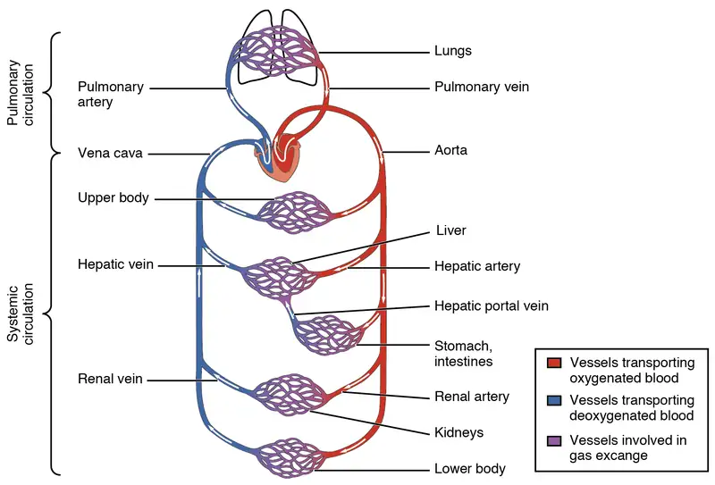
Shared Structures¶
Different types of blood vessels vary slightly in their structures, but they share the same general features. Arteries and arterioles have thicker walls than veins and venules because they are closer to the heart and receive blood that is surging at a far greater pressure (Figure 20.3). Each type of vessel has a lumen—a hollow passageway through which blood flows. Arteries have smaller lumens than veins, a characteristic that helps to maintain the pressure of blood moving through the system. Together, their thicker walls and smaller diameters give arterial lumens a more rounded appearance in cross section than the lumens of veins.
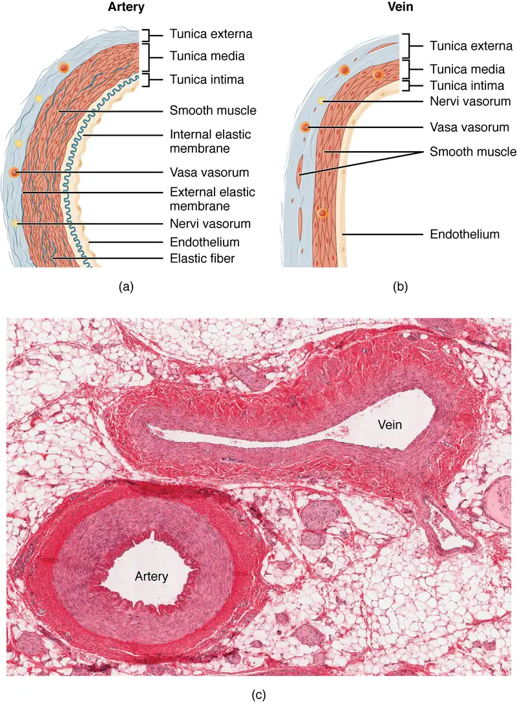
By the time blood has passed through capillaries and entered venules, the pressure initially exerted upon it by heart contractions has diminished. In other words, in comparison to arteries, venules and veins withstand a much lower pressure from the blood that flows through them. Their walls are considerably thinner and their lumens are correspondingly larger in diameter, allowing more blood to flow with less vessel resistance. In addition, many veins of the body, particularly those of the limbs, contain valves that assist the unidirectional flow of blood toward the heart. This is critical because blood flow becomes sluggish in the extremities, as a result of the lower pressure and the effects of gravity.
The walls of arteries and veins are largely composed of living cells and their products (including collagenous and elastic fibers); the cells require nourishment and produce waste. Since blood passes through the larger vessels relatively quickly, there is limited opportunity for blood in the lumen of the vessel to provide nourishment to or remove waste from the vessel’s cells. Further, the walls of the larger vessels are too thick for nutrients to diffuse through to all of the cells. Larger arteries and veins contain small blood vessels within their walls known as the vasa vasorum—literally “vessels of the vessel”—to provide them with this critical exchange. Since the pressure within arteries is relatively high, the vasa vasorum must function in the outer layers of the vessel (see Figure 20.3) or the pressure exerted by the blood passing through the vessel would collapse it, preventing any exchange from occurring. The lower pressure within veins allows the vasa vasorum to be located closer to the lumen. The restriction of the vasa vasorum to the outer layers of arteries is thought to be one reason that arterial diseases are more common than venous diseases, since its location makes it more difficult to nourish the cells of the arteries and remove waste products. There are also minute nerves within the walls of both types of vessels that control the contraction and dilation of smooth muscle. These minute nerves are known as the nervi vasorum.
Both arteries and veins have the same three distinct tissue layers, called tunics (from the Latin term tunica), for the garments first worn by ancient Romans; the term tunic is also used for some modern garments. From the most interior layer to the outer, these tunics are the tunica intima, the tunica media, and the tunica externa (see Figure 20.3). Table 20.1 compares and contrasts the tunics of the arteries and veins.
Table 20.1
| Comparison of Tunics in Arteries and Veins | ||
|---|---|---|
| Arteries | Veins | |
| General appearance | Thick walls with small lumens Generally appear rounded |
Thin walls with large lumens Generally appear flattened |
| Tunica intima | Endothelium usually appears wavy due to constriction of smooth muscle Internal elastic membrane present in larger vessels |
Endothelium appears smooth Internal elastic membrane absent |
| Tunica media | Normally the thickest layer in arteries Smooth muscle cells and elastic fibers predominate (the proportions of these vary with distance from the heart) External elastic membrane present in larger vessels |
Normally thinner than the tunica externa Smooth muscle cells and collagenous fibers predominate Nervi vasorum and vasa vasorum present External elastic membrane absent |
| Tunica externa | Normally thinner than the tunica media in all but the largest arteries Collagenous and elastic fibers Nervi vasorum and vasa vasorum present |
Normally the thickest layer in veins Collagenous and smooth fibers predominate Some smooth muscle fibers Nervi vasorum and vasa vasorum present |
Tunica Intima¶
The tunica intima (also called the tunica interna) is composed of epithelial and connective tissue layers. Lining the tunica intima is the specialized simple squamous epithelium called the endothelium, which is continuous throughout the entire vascular system, including the lining of the chambers of the heart. Damage to this endothelial lining and exposure of blood to the collagenous fibers beneath is one of the primary causes of clot formation. Until recently, the endothelium was viewed simply as the boundary between the blood in the lumen and the walls of the vessels. Recent studies, however, have shown that it is physiologically critical to such activities as helping to regulate capillary exchange and altering blood flow. The endothelium releases local chemicals called endothelins that can constrict the smooth muscle within the walls of the vessel to increase blood pressure. Uncompensated overproduction of endothelins may contribute to hypertension (high blood pressure) and cardiovascular disease.
Next to the endothelium is the basement membrane, or basal lamina, that effectively binds the endothelium to the connective tissue. The basement membrane provides strength while maintaining flexibility, and it is permeable, allowing materials to pass through it. The thin outer layer of the tunica intima contains a small amount of areolar connective tissue that consists primarily of elastic fibers to provide the vessel with additional flexibility; it also contains some collagenous fibers to provide additional strength.
In larger arteries, there is also a thick, distinct layer of elastic fibers known as the internal elastic membrane (also called the internal elastic lamina) at the boundary with the tunica media. Like the other components of the tunica intima, the internal elastic membrane provides structure while allowing the vessel to stretch. It is permeated with small openings that allow exchange of materials between the tunics. The internal elastic membrane is not apparent in veins. In addition, many veins, particularly in the lower limbs, contain valves formed by sections of thickened endothelium that are reinforced with connective tissue, extending into the lumen.
Under the microscope, the lumen and the entire tunica intima of a vein will appear smooth, whereas those of an artery will normally appear wavy because of the partial constriction of the smooth muscle in the tunica media, the next layer of blood vessel walls.
Tunica Media¶
The tunica media is the substantial middle layer of the vessel wall (see Figure 20.3). It is generally the thickest layer in arteries, and it is much thicker in arteries than it is in veins. The tunica media consists of layers of smooth muscle supported by connective tissue that is primarily made up of elastic fibers, most of which are arranged in circular sheets. Toward the outer portion of the tunic, there are also layers of longitudinal muscle. Contraction and relaxation of the circular muscles decrease and increase the diameter of the vessel lumen, respectively. Specifically in arteries, vasoconstriction decreases blood flow as the smooth muscle in the walls of the tunica media contracts, making the lumen narrower and increasing blood pressure. Similarly, vasodilation increases blood flow as the smooth muscle relaxes, allowing the lumen to widen and blood pressure to drop. Both vasoconstriction and vasodilation are regulated in part by small vascular nerves, known as nervi vasorum, or “nerves of the vessel,” that run within the walls of blood vessels. These are generally all sympathetic fibers, although some trigger vasodilation and others induce vasoconstriction, depending upon the nature of the neurotransmitter and receptors located on the target cell. Parasympathetic stimulation does trigger vasodilation as well as erection during sexual arousal in the external genitalia of both sexes. Nervous control over vessels tends to be more generalized than the specific targeting of individual blood vessels. Local controls, discussed later, account for this phenomenon. (Seek additional content for more information on these dynamic aspects of the autonomic nervous system.) Hormones and local chemicals also control blood vessels. Together, these neural and chemical mechanisms reduce or increase blood flow in response to changing body conditions, from exercise to hydration. Regulation of both blood flow and blood pressure is discussed in detail later in this chapter.
The smooth muscle layers of the tunica media are supported by a framework of collagenous fibers that also binds the tunica media to the inner and outer tunics. Along with the collagenous fibers are large numbers of elastic fibers that appear as wavy lines in prepared slides. Separating the tunica media from the outer tunica externa in larger arteries is the external elastic membrane (also called the external elastic lamina), which also appears wavy in slides. This structure is not usually seen in smaller arteries, nor is it seen in veins.
Tunica Externa¶
The outer tunic, the tunica externa (also called the tunica adventitia), is a substantial sheath of connective tissue composed primarily of collagenous fibers. Some bands of elastic fibers are found here as well. The tunica externa in veins also contains groups of smooth muscle fibers. This is normally the thickest tunic in veins and may be thicker than the tunica media in some larger arteries. The outer layers of the tunica externa are not distinct but rather blend with the surrounding connective tissue outside the vessel, helping to hold the vessel in relative position. If you are able to palpate some of the superficial veins on your upper limbs and try to move them, you will find that the tunica externa prevents this. If the tunica externa did not hold the vessel in place, any movement would likely result in disruption of blood flow.
Arteries¶
An artery is a blood vessel that conducts blood away from the heart. All arteries have relatively thick walls that can withstand the high pressure of blood ejected from the heart. However, those close to the heart have the thickest walls, containing a high percentage of elastic fibers in all three of their tunics. This type of artery is known as an elastic artery (Figure 20.4). Vessels larger than 10 mm in diameter are typically elastic. Their abundant elastic fibers allow them to expand, as blood pumped from the ventricles passes through them, and then to recoil after the surge has passed. If artery walls were rigid and unable to expand and recoil, their resistance to blood flow would greatly increase and blood pressure would rise to even higher levels, which would in turn require the heart to pump harder to increase the volume of blood expelled by each pump (the stroke volume) and maintain adequate pressure and flow. Artery walls would have to become even thicker in response to this increased pressure. The elastic recoil of the vascular wall helps to maintain the pressure gradient that drives the blood through the arterial system. An elastic artery is also known as a conducting artery, because the large diameter of the lumen enables it to accept a large volume of blood from the heart and conduct it to smaller branches.
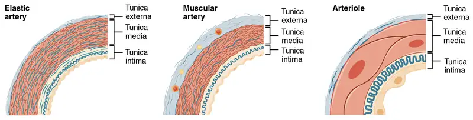
Farther from the heart, where the surge of blood has dampened, the percentage of elastic fibers in an artery’s tunica intima decreases and the amount of smooth muscle in its tunica media increases. The artery at this point is described as a muscular artery. The diameter of muscular arteries typically ranges from 0.1 mm to 10 mm. Their thick tunica media allows muscular arteries to play a leading role in vasoconstriction. In contrast, their decreased quantity of elastic fibers limits their ability to expand. Fortunately, because the blood pressure has eased by the time it reaches these more distant vessels, elasticity has become less important.
Notice that although the distinctions between elastic and muscular arteries are important, there is no “line of demarcation” where an elastic artery suddenly becomes muscular. Rather, there is a gradual transition as the vascular tree repeatedly branches. In turn, muscular arteries branch to distribute blood to the vast network of arterioles. For this reason, a muscular artery is also known as a distributing artery.
Arterioles¶
An arteriole is a very small artery that leads to a capillary. Arterioles have the same three tunics as the larger vessels, but the thickness of each is greatly diminished. The critical endothelial lining of the tunica intima is intact. The tunica media is restricted to one or two smooth muscle cell layers in thickness. The tunica externa remains but is very thin (see Figure 20.4).
With a lumen averaging 30 micrometers or less in diameter, arterioles are critical in slowing down—or resisting—blood flow and, thus, causing a substantial drop in blood pressure. Because of this, you may see them referred to as resistance vessels. The muscle fibers in arterioles are normally slightly contracted, causing arterioles to maintain a consistent muscle tone—in this case referred to as vascular tone—in a similar manner to the muscular tone of skeletal muscle. In reality, all blood vessels exhibit vascular tone due to the partial contraction of smooth muscle. The importance of the arterioles is that they will be the primary site of both resistance and regulation of blood pressure. The precise diameter of the lumen of an arteriole at any given moment is determined by neural and chemical controls, and vasoconstriction and vasodilation in the arterioles are the primary mechanisms for distribution of blood flow.
Capillaries¶
A capillary is a microscopic channel that supplies blood to the tissues, a process called perfusion. Exchange of gases and other substances occurs between the blood in capillaries and the surrounding cells and their tissue fluid (interstitial fluid). The diameter of a capillary lumen ranges from 5–10 micrometers; the smallest are just barely wide enough for an erythrocyte to squeeze through. Flow through capillaries is often described as microcirculation.
The wall of a capillary consists of the endothelial layer surrounded by a basement membrane with occasional smooth muscle fibers. There is some variation in wall structure: In a large capillary, several endothelial cells bordering each other may line the lumen; in a small capillary, there may be only a single cell layer that wraps around to contact itself.
For capillaries to function, their walls must be leaky, allowing substances to pass through. There are three major types of capillaries, which differ according to their degree of “leakiness:” continuous, fenestrated, and sinusoid capillaries (Figure 20.5).
Continuous Capillaries¶
The most common type of capillary, the continuous capillary, is found in almost all vascularized tissues. Continuous capillaries are characterized by a complete endothelial lining with tight junctions between endothelial cells. Although a tight junction is usually impermeable and only allows for the passage of water and ions, they are often incomplete in capillaries, leaving intercellular clefts that allow for exchange of water and other very small molecules between the blood plasma and the interstitial fluid. Substances that can pass between cells include metabolic products, such as glucose, water, and small hydrophobic molecules like gases and hormones, as well as various leukocytes. Continuous capillaries not associated with the brain are rich in transport vesicles, contributing to either endocytosis or exocytosis. Those in the brain are part of the blood-brain barrier. Here, there are tight junctions and no intercellular clefts, plus a thick basement membrane and astrocyte extensions called end feet; these structures combine to prevent the movement of nearly all substances.
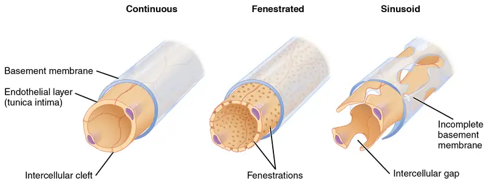
Fenestrated Capillaries¶
A fenestrated capillary is one that has pores (or fenestrations) in addition to tight junctions in the endothelial lining. These make the capillary permeable to larger molecules. The number of fenestrations and their degree of permeability vary, however, according to their location. Fenestrated capillaries are common in the small intestine, which is the primary site of nutrient absorption, as well as in the kidneys, which filter the blood. They are also found in the choroid plexus of the brain and many endocrine structures, including the hypothalamus, pituitary, pineal, and thyroid glands.
Sinusoid Capillaries¶
A sinusoid capillary (or sinusoid) is the least common type of capillary. Sinusoid capillaries are flattened, and they have extensive intercellular gaps and incomplete basement membranes, in addition to intercellular clefts and fenestrations. This gives them an appearance not unlike Swiss cheese. These very large openings allow for the passage of the largest molecules, including plasma proteins and even cells. Blood flow through sinusoids is very slow, allowing more time for exchange of gases, nutrients, and wastes. Sinusoids are found in the liver and spleen, bone marrow, lymph nodes (where they carry lymph, not blood), and many endocrine glands including the pituitary and adrenal glands. Without these specialized capillaries, these organs would not be able to provide their myriad of functions. For example, when bone marrow forms new blood cells, the cells must enter the blood supply and can only do so through the large openings of a sinusoid capillary; they cannot pass through the small openings of continuous or fenestrated capillaries. The liver also requires extensive specialized sinusoid capillaries in order to process the materials brought to it by the hepatic portal vein from both the digestive tract and spleen, and to release plasma proteins into circulation.
Metarterioles and Capillary Beds¶
A metarteriole is a type of vessel that has structural characteristics of both an arteriole and a capillary. Slightly larger than the typical capillary, the smooth muscle of the tunica media of the metarteriole is not continuous but forms rings of smooth muscle (sphincters) prior to the entrance to the capillaries. Each metarteriole arises from a terminal arteriole and branches to supply blood to a capillary bed that may consist of 10–100 capillaries.
The precapillary sphincters, circular smooth muscle cells that surround the capillary at its origin with the metarteriole, tightly regulate the flow of blood from a metarteriole to the capillaries it supplies. Their function is critical: If all of the capillary beds in the body were to open simultaneously, they would collectively hold every drop of blood in the body and there would be none in the arteries, arterioles, venules, veins, or the heart itself. Normally, the precapillary sphincters are closed. When the surrounding tissues need oxygen and have excess waste products, the precapillary sphincters open, allowing blood to flow through and exchange to occur before closing once more (Figure 20.6). If all of the precapillary sphincters in a capillary bed are closed, blood will flow from the metarteriole directly into a thoroughfare channel and then into the venous circulation, bypassing the capillary bed entirely. This creates what is known as a vascular shunt. In addition, an arteriovenous anastomosis may bypass the capillary bed and lead directly to the venous system.
Although you might expect blood flow through a capillary bed to be smooth, in reality, it moves with an irregular, pulsating flow. This pattern is called vasomotion and is regulated by chemical signals that are triggered in response to changes in internal conditions, such as oxygen, carbon dioxide, hydrogen ion, and lactic acid levels. For example, during strenuous exercise when oxygen levels decrease and carbon dioxide, hydrogen ion, and lactic acid levels all increase, the capillary beds in skeletal muscle are open, as they would be in the digestive system when nutrients are present in the digestive tract. During sleep or rest periods, vessels in both areas are largely closed; they open only occasionally to allow oxygen and nutrient supplies to travel to the tissues to maintain basic life processes.
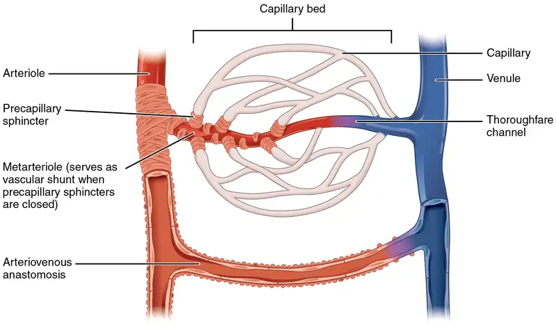
Venules¶
A venule is an extremely small vein, generally 8–100 micrometers in diameter. Postcapillary venules join multiple capillaries exiting from a capillary bed. Multiple venules join to form veins. The walls of venules consist of endothelium, a thin middle layer with a few muscle cells and elastic fibers, plus an outer layer of connective tissue fibers that constitute a very thin tunica externa (Figure 20.7). Venules as well as capillaries are the primary sites of emigration or diapedesis, in which the white blood cells adhere to the endothelial lining of the vessels and then squeeze through adjacent cells to enter the tissue fluid.
Veins¶
A vein is a blood vessel that conducts blood toward the heart. Compared to arteries, veins are thin-walled vessels with large and irregular lumens (see Figure 20.7). Because they are low-pressure vessels, larger veins are commonly equipped with valves that promote the unidirectional flow of blood toward the heart and prevent backflow toward the capillaries caused by the inherent low blood pressure in veins as well as the pull of gravity. Table 20.2 compares the features of arteries and veins.
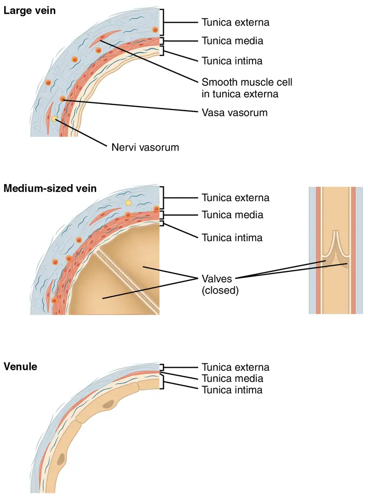
Table 20.2
| Comparison of Arteries and Veins | ||
|---|---|---|
| Arteries | Veins | |
| Direction of blood flow | Conducts blood away from the heart | Conducts blood toward the heart |
| General appearance | Rounded | Irregular, often collapsed |
| Pressure | High | Low |
| Wall thickness | Thick | Thin |
| Relative oxygen concentration | Higher in systemic arteries Lower in pulmonary arteries |
Lower in systemic veins Higher in pulmonary veins |
| Valves | Not present | Present most commonly in limbs and in veins inferior to the heart |
Disorders of the Cardiovascular System: Edema and Varicose Veins
Despite the presence of valves and the contributions of other anatomical and physiological adaptations we will cover shortly, over the course of a day, some blood will inevitably pool, especially in the lower limbs, due to the pull of gravity. Any blood that accumulates in a vein will increase the pressure within it, which can then be reflected back into the smaller veins, venules, and eventually even the capillaries. Increased pressure will promote the flow of fluids out of the capillaries and into the interstitial fluid. The presence of excess tissue fluid around the cells leads to a condition called edema.
Most people experience a daily accumulation of tissue fluid, especially if they spend much of their work life on their feet (like most health professionals). However, clinical edema goes beyond normal swelling and requires medical treatment. Edema has many potential causes, including hypertension and heart failure, severe protein deficiency, renal failure, and many others. In order to treat edema, which is a sign rather than a discrete disorder, the underlying cause must be diagnosed and alleviated.
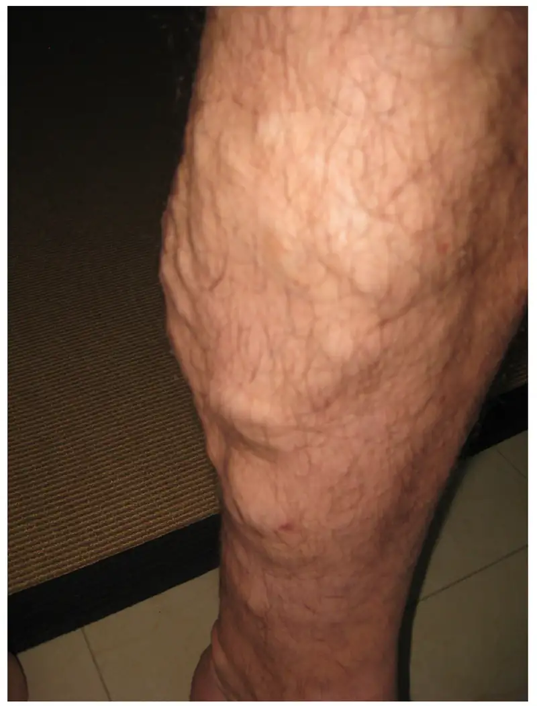
Edema may be accompanied by varicose veins, especially in the superficial veins of the legs (Figure 20.8). This disorder arises when defective valves allow blood to accumulate within the veins, causing them to distend, twist, and become visible on the surface of the integument. Varicose veins may occur in all people, but are more common in females and are often related to pregnancy. More than simple cosmetic blemishes, varicose veins are often painful and sometimes itchy or throbbing. Without treatment, they tend to grow worse over time. The use of support hose, as well as elevating the feet and legs whenever possible, may be helpful in alleviating this condition. Laser surgery and interventional radiologic procedures can reduce the size and severity of varicose veins. Severe cases may require conventional surgery to remove the damaged vessels. As there are typically redundant circulation patterns, that is, anastomoses, for the smaller and more superficial veins, removal does not typically impair the circulation. There is evidence that patients with varicose veins suffer a greater risk of developing a thrombus or clot.
Veins as Blood Reservoirs¶
In addition to their primary function of returning blood to the heart, veins may be considered blood reservoirs, since systemic veins contain approximately 64 percent of the blood volume at any given time (Figure 20.9). Their ability to hold this much blood is due to their high capacitance, that is, their capacity to distend (expand) readily to store a high volume of blood, even at a low pressure. The large lumens and relatively thin walls of veins make them far more distensible than arteries; thus, they are said to be capacitance vessels.
![This table describes the distribution of blood flow. 84 percent of blood flow is systemic circulation, of which 64 percent happens in systemic veins (18 percent in large veins, 21 percent in large venous networks such as liver, bone marrow, and integument, and 25 percent in venules and medium-sized veins); 13 percent happens in systemic arteries (2 percent in arterioles, 5 percent in muscular arteries, 4 percent in elastic arteries, and 2 percent in the aorta); and 7 percent happens in systemic capillaries. 9 percent of blood flow is pulmonary circulation, of which 4 percent happens in pulmonary veins, 2 percent happens in pulmonary capillaries, and 3 percent happens in pulmonary arteries. The remaining 7 percent of blood flow is in the heart.](img/2142-distribution-of-blood-flow.webp)
When blood flow needs to be redistributed to other portions of the body, the vasomotor center located in the medulla oblongata sends sympathetic stimulation to the smooth muscles in the walls of the veins, causing constriction—or in this case, venoconstriction. Less dramatic than the vasoconstriction seen in smaller arteries and arterioles, venoconstriction may be likened to a “stiffening” of the vessel wall. This increases pressure on the blood within the veins, speeding its return to the heart. As you will note in Figure 20.9, approximately 21 percent of the venous blood is located in venous networks within the liver, bone marrow, and integument. This volume of blood is referred to as venous reserve. Through venoconstriction, this “reserve” volume of blood can get back to the heart more quickly for redistribution to other parts of the circulation.
Career Connection: Vascular Surgeons and Technicians
Vascular surgery is a specialty in which the physician deals primarily with diseases of the vascular portion of the cardiovascular system. This includes repair and replacement of diseased or damaged vessels, removal of plaque from vessels, minimally invasive procedures including the insertion of venous catheters, and traditional surgery. Following completion of medical school, the physician generally completes a 5-year surgical residency followed by an additional 1 to 2 years of vascular specialty training. In the United States, most vascular surgeons are members of the Society of Vascular Surgery.
Vascular technicians are specialists in imaging technologies that provide information on the health of the vascular system. They may also assist physicians in treating disorders involving the arteries and veins. This profession often overlaps with cardiovascular technology, which would also include treatments involving the heart. Although recognized by the American Medical Association, there are currently no licensing requirements for vascular technicians, and licensing is voluntary. Vascular technicians typically have an Associate’s degree or certificate, involving 18 months to 2 years of training. The United States Bureau of Labor projects this profession to grow by 29 percent from 2010 to 2020.
Interactive
Visit this site to learn more about vascular surgery.
Interactive
Visit this site to learn more about vascular technicians.
20.2 Blood Flow, Blood Pressure, and Resistance¶
Learning Objectives
By the end of this section, you will be able to:
- Distinguish between systolic pressure, diastolic pressure, pulse pressure, and mean arterial pressure
- Describe the clinical measurement of pulse and blood pressure
- Identify and discuss five variables affecting arterial blood flow and blood pressure
- Discuss several factors affecting blood flow in the venous system
Blood flow refers to the movement of blood through a vessel, tissue, or organ, and is usually expressed in terms of volume of blood per unit of time. It is initiated by the contraction of the ventricles of the heart. Ventricular contraction ejects blood into the major arteries, resulting in flow from regions of higher pressure to regions of lower pressure, as blood encounters smaller arteries and arterioles, then capillaries, then the venules and veins of the venous system. This section discusses a number of critical variables that contribute to blood flow throughout the body. It also discusses the factors that impede or slow blood flow, a phenomenon known as resistance.
As noted earlier, hydrostatic pressure is the force exerted by a fluid due to gravitational pull, usually against the wall of the container in which it is located. One form of hydrostatic pressure is blood pressure, the force exerted by blood upon the walls of the blood vessels or the chambers of the heart. Blood pressure may be measured in capillaries and veins, as well as the vessels of the pulmonary circulation; however, the term blood pressure without any specific descriptors typically refers to systemic arterial blood pressure—that is, the pressure of blood flowing in the arteries of the systemic circulation. In clinical practice, this pressure is measured in mm Hg and is usually obtained using the brachial artery of the arm.
Components of Arterial Blood Pressure¶
Arterial blood pressure in the larger vessels consists of several distinct components (Figure 20.10): systolic and diastolic pressures, pulse pressure, and mean arterial pressure.
Systolic and Diastolic Pressures¶
When systemic arterial blood pressure is measured, it is recorded as a ratio of two numbers (e.g., 120/80 is a normal adult blood pressure), expressed as systolic pressure over diastolic pressure. The systolic pressure is the higher value (typically around 120 mm Hg) and reflects the arterial pressure resulting from the ejection of blood during ventricular contraction, or systole. The diastolic pressure is the lower value (usually about 80 mm Hg) and represents the arterial pressure of blood during ventricular relaxation, or diastole.
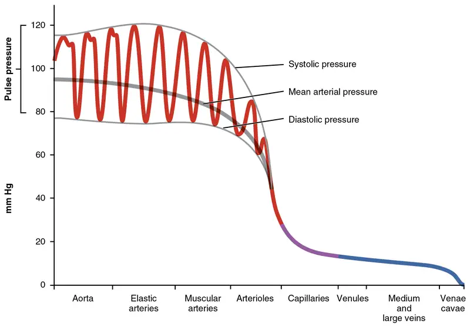
Pulse Pressure¶
As shown in Figure 20.10, the difference between the systolic pressure and the diastolic pressure is the pulse pressure. For example, an individual with a systolic pressure of 120 mm Hg and a diastolic pressure of 80 mm Hg would have a pulse pressure of 40 mmHg.
Generally, a pulse pressure should be at least 25 percent of the systolic pressure. A pulse pressure below this level is described as low or narrow. This may occur, for example, in patients with a low stroke volume, which may be seen in congestive heart failure, stenosis of the aortic valve, or significant blood loss following trauma. In contrast, a high or wide pulse pressure is common in healthy people following strenuous exercise, when their resting pulse pressure of 30–40 mm Hg may increase temporarily to 100 mm Hg as stroke volume increases. A persistently high pulse pressure at or above 100 mm Hg may indicate excessive resistance in the arteries and can be caused by a variety of disorders. Chronic high resting pulse pressures can degrade the heart, brain, and kidneys, and warrant medical treatment.
Mean Arterial Pressure¶
Mean arterial pressure (MAP) represents the “average” pressure of blood in the arteries, that is, the average force driving blood into vessels that serve the tissues. Mean is a statistical concept and is calculated by taking the sum of the values divided by the number of values. Although complicated to measure directly and complicated to calculate, MAP can be approximated by adding the diastolic pressure to one-third of the pulse pressure or systolic pressure minus the diastolic pressure:
\(\displaystyle \begin{array}{c} \text{MAP = diastolic BP +}\ \frac{\text{(systolic BP-diastolic BP)}}{3} \\ \mathbf{\mathrm{or}} \\ \text{MAP = diastolic BP +}\ \frac{(\text{pulse pressure})}{3} \end{array}\)
In Figure 20.10, this value is approximately 80 + (120 − 80) / 3, or 93.33. Normally, the MAP falls within the range of 70–110 mm Hg. If the value falls below 60 mm Hg for an extended time, blood pressure will not be high enough to ensure circulation to and through the tissues, which results in ischemia, or insufficient blood flow. A condition called hypoxia, inadequate oxygenation of tissues, commonly accompanies ischemia. The term hypoxemia refers to low levels of oxygen in systemic arterial blood. Neurons are especially sensitive to hypoxia and may die or be damaged if blood flow and oxygen supplies are not quickly restored.
Pulse¶
After blood is ejected from the heart, elastic fibers in the arteries help maintain a high-pressure gradient as they expand to accommodate the blood, then recoil. This expansion and recoiling effect, known as the pulse, can be palpated manually or measured electronically. Although the effect diminishes over distance from the heart, elements of the systolic and diastolic components of the pulse are still evident down to the level of the arterioles.
Because pulse indicates heart rate, it is measured clinically to provide clues to a patient’s state of health. It is recorded as beats per minute. Both the rate and the strength of the pulse are important clinically. A high or irregular pulse rate can be caused by physical activity or other temporary factors, but it may also indicate a heart condition. The pulse strength indicates the strength of ventricular contraction and cardiac output. If the pulse is strong, then systolic pressure is high. If it is weak, systolic pressure has fallen, and medical intervention may be warranted.
Pulse can be palpated manually by placing the tips of the fingers across an artery that runs close to the body surface and pressing lightly. While this procedure is normally performed using the radial artery in the wrist or the common carotid artery in the neck, any superficial artery that can be palpated may be used (Figure 20.11). Common sites to find a pulse include temporal and facial arteries in the head, brachial arteries in the upper arm, femoral arteries in the thigh, popliteal arteries behind the knees, posterior tibial arteries near the medial tarsal regions, and dorsalis pedis arteries in the feet. A variety of commercial electronic devices are also available to measure pulse.
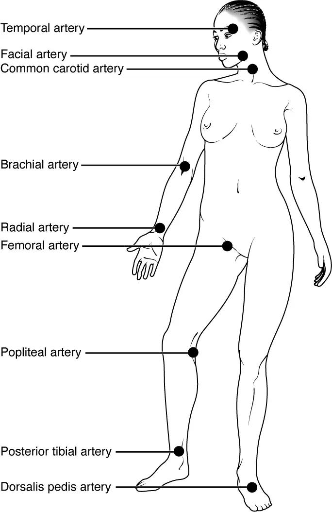
Measurement of Blood Pressure¶
Blood pressure is one of the critical parameters measured on virtually every patient in every healthcare setting. The technique used today was developed more than 100 years ago by a pioneering Russian physician, Dr. Nikolai Korotkoff. Turbulent blood flow through the vessels can be heard as a soft ticking while measuring blood pressure; these sounds are known as Korotkoff sounds. The technique of measuring blood pressure requires the use of a sphygmomanometer (a blood pressure cuff attached to a measuring device) and a stethoscope. The technique is as follows:
- The clinician wraps an inflatable cuff tightly around the patient’s arm at about the level of the heart.
- The clinician squeezes a rubber pump to inject air into the cuff, raising pressure around the artery and temporarily cutting off blood flow into the patient’s arm.
- The clinician places the stethoscope on the patient’s antecubital region and, while gradually allowing air within the cuff to escape, listens for the Korotkoff sounds.
Although there are five recognized Korotkoff sounds, only two are normally recorded. Initially, no sounds are heard since there is no blood flow through the vessels, but as air pressure drops, the cuff relaxes, and blood flow returns to the arm. As shown in Figure 20.12, the first sound heard through the stethoscope—the first Korotkoff sound—indicates systolic pressure. As more air is released from the cuff, blood is able to flow freely through the brachial artery and all sounds disappear. The point at which the last sound is heard is recorded as the patient’s diastolic pressure.
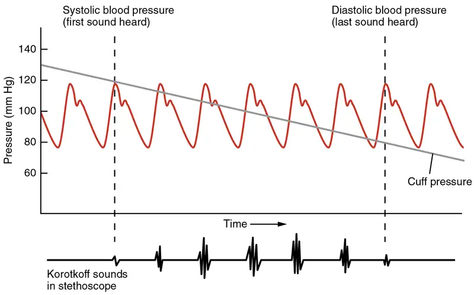
The majority of hospitals and clinics have automated equipment for measuring blood pressure that work on the same principles. An even more recent innovation is a small instrument that wraps around a patient’s wrist. The patient then holds the wrist over the heart while the device measures blood flow and records pressure.
Variables Affecting Blood Flow and Blood Pressure¶
Five variables influence blood flow and blood pressure:
- Cardiac output
- Compliance
- Volume of the blood
- Viscosity of the blood
- Blood vessel length and diameter
Recall that blood moves from higher pressure to lower pressure. It is pumped from the heart into the arteries at high pressure. If you increase pressure in the arteries (afterload), and cardiac function does not compensate, blood flow will actually decrease. In the venous system, the opposite relationship is true. Increased pressure in the veins does not decrease flow as it does in arteries, but actually increases flow. Since pressure in the veins is normally relatively low, for blood to flow back into the heart, the pressure in the atria during atrial diastole must be even lower. It normally approaches zero, except when the atria contract (see Figure 20.10).
Cardiac Output¶
Cardiac output is the measurement of blood flow from the heart through the ventricles, and is usually measured in liters per minute. Any factor that causes cardiac output to increase, by elevating heart rate or stroke volume or both, will elevate blood pressure and promote blood flow. These factors include sympathetic stimulation, the catecholamines epinephrine and norepinephrine, thyroid hormones, and increased calcium ion levels. Conversely, any factor that decreases cardiac output, by decreasing heart rate or stroke volume or both, will decrease arterial pressure and blood flow. These factors include parasympathetic stimulation, elevated or decreased potassium ion levels, decreased calcium levels, anoxia, and acidosis.
Compliance¶
Compliance is the ability of any compartment to expand to accommodate increased content. A metal pipe, for example, is not compliant, whereas a balloon is. The greater the compliance of an artery, the more effectively it is able to expand to accommodate surges in blood flow without increased resistance or blood pressure. Veins are more compliant than arteries and can expand to hold more blood. When vascular disease causes stiffening of arteries, compliance is reduced and resistance to blood flow is increased. The result is more turbulence, higher pressure within the vessel, and reduced blood flow. This increases the work of the heart.
A Mathematical Approach to Factors Affecting Blood Flow¶
Jean Louis Marie Poiseuille was a French physician and physiologist who devised a mathematical equation describing blood flow and its relationship to known parameters. The same equation also applies to engineering studies of the flow of fluids. Although understanding the math behind the relationships among the factors affecting blood flow is not necessary to understand blood flow, it can help solidify an understanding of their relationships. Please note that even if the equation looks intimidating, breaking it down into its components and following the relationships will make these relationships clearer, even if you are weak in math. Focus on the three critical variables: radius (r), vessel length (λ), and viscosity (η).
Poiseuille’s equation:
- π is the Greek letter pi, used to represent the mathematical constant that is the ratio of a circle’s circumference to its diameter. It may commonly be represented as 3.14, although the actual number extends to infinity.
- ΔP represents the difference in pressure.
- r4is the radius (one-half of the diameter) of the vessel to the fourth power.
- η is the Greek letter eta and represents the viscosity of the blood.
- λ is the Greek letter lambda and represents the length of a blood vessel.
One of several things this equation allows us to do is calculate the resistance in the vascular system. Normally this value is extremely difficult to measure, but it can be calculated from this known relationship:
If we rearrange this slightly,
Then by substituting Pouseille’s equation for blood flow:
By examining this equation, you can see that there are only three variables: viscosity, vessel length, and radius, since 8 and π are both constants. The important thing to remember is this: Two of these variables, viscosity and vessel length, will change slowly in the body. Only one of these factors, the radius, can be changed rapidly by vasoconstriction and vasodilation, thus dramatically impacting resistance and flow. Further, small changes in the radius will greatly affect flow, since it is raised to the fourth power in the equation.
We have briefly considered how cardiac output and blood volume impact blood flow and pressure; the next step is to see how the other variables (contraction, vessel length, and viscosity) articulate with Pouseille’s equation and what they can teach us about the impact on blood flow.
Blood Volume¶
The relationship between blood volume, blood pressure, and blood flow is intuitively obvious. Water may merely trickle along a creek bed in a dry season, but rush quickly and under great pressure after a heavy rain. Similarly, as blood volume decreases, pressure and flow decrease. As blood volume increases, pressure and flow increase.
Under normal circumstances, blood volume varies little. Low blood volume, called hypovolemia, may be caused by bleeding, dehydration, vomiting, severe burns, or some medications used to treat hypertension. It is important to recognize that other regulatory mechanisms in the body are so effective at maintaining blood pressure that an individual may be asymptomatic until 10–20 percent of the blood volume has been lost. Treatment typically includes intravenous fluid replacement.
Hypervolemia, excessive fluid volume, may be caused by retention of water and sodium, as seen in patients with heart failure, liver cirrhosis, some forms of kidney disease, hyperaldosteronism, and some glucocorticoid steroid treatments. Restoring homeostasis in these patients depends upon reversing the condition that triggered the hypervolemia.
Blood Viscosity¶
Viscosity is the thickness of fluids that affects their ability to flow. Clean water, for example, is less viscous than mud. The viscosity of blood is directly proportional to resistance and inversely proportional to flow; therefore, any condition that causes viscosity to increase will also increase resistance and decrease flow. For example, imagine sipping milk, then a milkshake, through the same size straw. You experience more resistance and therefore less flow from the milkshake. Conversely, any condition that causes viscosity to decrease (such as when the milkshake melts) will decrease resistance and increase flow.
Normally the viscosity of blood does not change over short periods of time. The two primary determinants of blood viscosity are the formed elements and plasma proteins. Since the vast majority of formed elements are erythrocytes, any condition affecting erythropoiesis, such as polycythemia or anemia, can alter viscosity. Since most plasma proteins are produced by the liver, any condition affecting liver function can also change the viscosity slightly and therefore alter blood flow. Liver abnormalities such as hepatitis, cirrhosis, alcohol damage, and drug toxicities result in decreased levels of plasma proteins, which decrease blood viscosity. While leukocytes and platelets are normally a small component of the formed elements, there are some rare conditions in which severe overproduction can impact viscosity as well.
Vessel Length and Diameter¶
The length of a vessel is directly proportional to its resistance: the longer the vessel, the greater the resistance and the lower the flow. As with blood volume, this makes intuitive sense, since the increased surface area of the vessel will impede the flow of blood. Likewise, if the vessel is shortened, the resistance will decrease and flow will increase.
The length of our blood vessels increases throughout childhood as we grow, of course, but is unchanging in adults under normal physiological circumstances. Further, the distribution of vessels is not the same in all tissues. Adipose tissue does not have an extensive vascular supply. One pound of adipose tissue contains approximately 200 miles of vessels, whereas skeletal muscle contains more than twice that. Overall, vessels decrease in length only during loss of mass or amputation. An individual weighing 150 pounds has approximately 60,000 miles of vessels in the body. Gaining about 10 pounds adds from 2000 to 4000 miles of vessels, depending upon the nature of the gained tissue. One of the great benefits of weight reduction is the reduced stress to the heart, which does not have to overcome the resistance of as many miles of vessels.
In contrast to length, the diameter of blood vessels changes throughout the body, according to the type of vessel, as we discussed earlier. The diameter of any given vessel may also change frequently throughout the day in response to neural and chemical signals that trigger vasodilation and vasoconstriction. The vascular tone of the vessel is the contractile state of the smooth muscle and the primary determinant of diameter, and thus of resistance and flow. The effect of vessel diameter on resistance is inverse: Given the same volume of blood, an increased diameter means there is less blood contacting the vessel wall, thus lower friction and lower resistance, subsequently increasing flow. A decreased diameter means more of the blood contacts the vessel wall, and resistance increases, subsequently decreasing flow.
The influence of lumen diameter on resistance is dramatic: A slight increase or decrease in diameter causes a huge decrease or increase in resistance. This is because resistance is inversely proportional to the radius of the blood vessel (one-half of the vessel’s diameter) raised to the fourth power (R = 1/r4). This means, for example, that if an artery or arteriole constricts to one-half of its original radius, the resistance to flow will increase 16 times. And if an artery or arteriole dilates to twice its initial radius, then resistance in the vessel will decrease to 1/16 of its original value and flow will increase 16 times.
The Roles of Vessel Diameter and Total Area in Blood Flow and Blood Pressure¶
Recall that we classified arterioles as resistance vessels, because given their small lumen, they dramatically slow the flow of blood from arteries. In fact, arterioles are the site of greatest resistance in the entire vascular network. This may seem surprising, given that capillaries have a smaller size. How can this phenomenon be explained?
Figure 20.13 compares vessel diameter, total cross-sectional area, average blood pressure, and blood velocity through the systemic vessels. Notice in parts (a) and (b) that the total cross-sectional area of the body’s capillary beds is far greater than any other type of vessel. Although the diameter of an individual capillary is significantly smaller than the diameter of an arteriole, there are vastly more capillaries in the body than there are other types of blood vessels. Part (c) shows that blood pressure drops unevenly as blood travels from arteries to arterioles, capillaries, venules, and veins, and encounters greater resistance. However, the site of the most precipitous drop, and the site of greatest resistance, is the arterioles. This explains why vasodilation and vasoconstriction of arterioles play more significant roles in regulating blood pressure than do the vasodilation and vasoconstriction of other vessels.
Part (d) shows that the velocity (speed) of blood flow decreases dramatically as the blood moves from arteries to arterioles to capillaries. This slow flow rate allows more time for exchange processes to occur. As blood flows through the veins, the rate of velocity increases, as blood is returned to the heart.
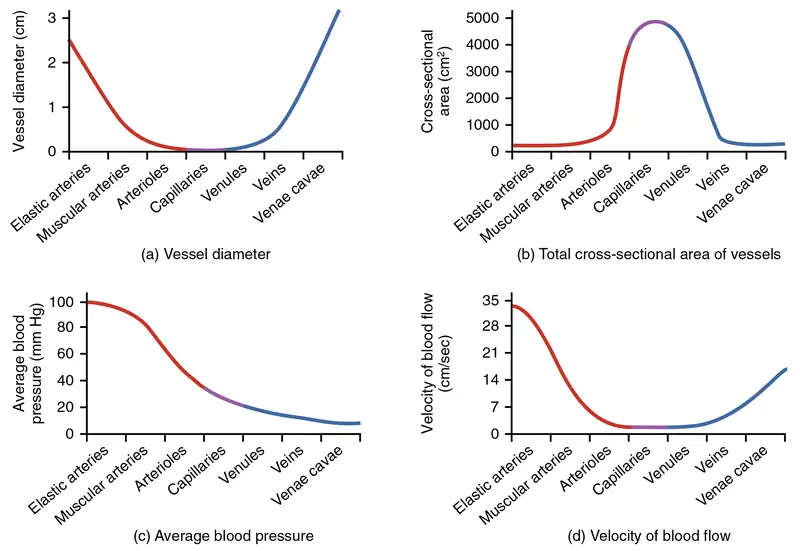
Disorders of the Cardiovascular System: Arteriosclerosis
Compliance allows an artery to expand when blood is pumped through it from the heart, and then to recoil after the surge has passed. This helps promote blood flow. In arteriosclerosis, compliance is reduced, and pressure and resistance within the vessel increase. This is a leading cause of hypertension and coronary heart disease, as it causes the heart to work harder to generate a pressure great enough to overcome the resistance.
Arteriosclerosis begins with injury to the endothelium of an artery, which may be caused by irritation from high blood glucose, infection, tobacco use, excessive blood lipids, and other factors. Artery walls that are constantly stressed by blood flowing at high pressure are also more likely to be injured—which means that hypertension can promote arteriosclerosis, as well as result from it.
Recall that tissue injury causes inflammation. As inflammation spreads into the artery wall, it weakens and scars it, leaving it stiff (sclerotic). As a result, compliance is reduced. Moreover, circulating triglycerides and cholesterol can seep between the damaged lining cells and become trapped within the artery wall, where they are frequently joined by leukocytes, calcium, and cellular debris. Eventually, this buildup, called plaque, can narrow arteries enough to impair blood flow. The term for this condition, atherosclerosis (athero- = “porridge”) describes the mealy deposits (Figure 20.14).
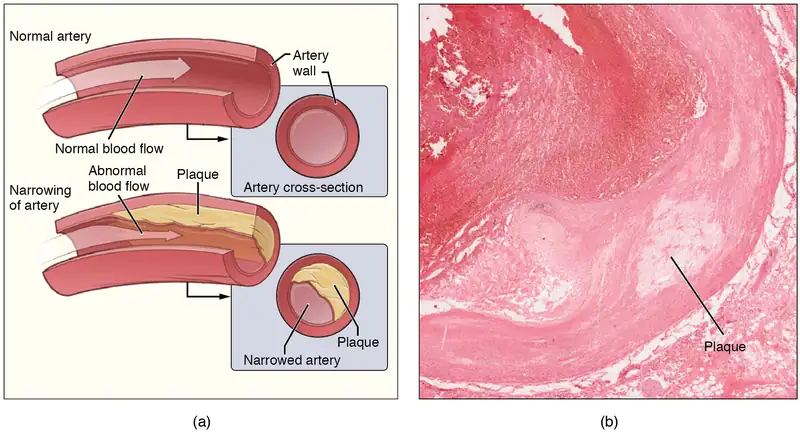
Sometimes a plaque can rupture, causing microscopic tears in the artery wall that allow blood to leak into the tissue on the other side. When this happens, platelets rush to the site to clot the blood. This clot can further obstruct the artery and—if it occurs in a coronary or cerebral artery—cause a sudden heart attack or stroke. Alternatively, plaque can break off and travel through the bloodstream as an embolus until it blocks a more distant, smaller artery.
Even without total blockage, vessel narrowing leads to ischemia—reduced blood flow—to the tissue region “downstream” of the narrowed vessel. Ischemia in turn leads to hypoxia—decreased supply of oxygen to the tissues. Hypoxia involving cardiac muscle or brain tissue can lead to cell death and severe impairment of brain or heart function.
A major risk factor for both arteriosclerosis and atherosclerosis is advanced age, as the conditions tend to progress over time. Arteriosclerosis is normally defined as the more generalized loss of compliance, “hardening of the arteries,” whereas atherosclerosis is a more specific term for the build-up of plaque in the walls of the vessel and is a specific type of arteriosclerosis. There is also a distinct genetic component, and pre-existing hypertension and/or diabetes also greatly increase the risk. However, obesity, poor nutrition, lack of physical activity, and tobacco use all are major risk factors.
Treatment includes lifestyle changes, such as weight loss, smoking cessation, regular exercise, and adoption of a diet low in sodium and saturated fats. Medications to reduce cholesterol and blood pressure may be prescribed. For blocked coronary arteries, surgery is warranted. In angioplasty, a catheter is inserted into the vessel at the point of narrowing, and a second catheter with a balloon-like tip is inflated to widen the opening. To prevent subsequent collapse of the vessel, a small mesh tube called a stent is often inserted. In an endarterectomy, plaque is surgically removed from the walls of a vessel. This operation is typically performed on the carotid arteries of the neck, which are a prime source of oxygenated blood for the brain. In a coronary bypass procedure, a non-vital superficial vessel from another part of the body (often the great saphenous vein) or a synthetic vessel is inserted to create a path around the blocked area of a coronary artery.
Venous System¶
The pumping action of the heart propels the blood into the arteries, from an area of higher pressure toward an area of lower pressure. If blood is to flow from the veins back into the heart, the pressure in the veins must be greater than the pressure in the atria of the heart. Two factors help maintain this pressure gradient between the veins and the heart. First, the pressure in the atria during diastole is very low, often approaching zero when the atria are relaxed (atrial diastole). Second, two physiologic “pumps” increase pressure in the venous system. The use of the term “pump” implies a physical device that speeds flow. These physiological pumps are less obvious.
Skeletal Muscle Pump¶
In many body regions, the pressure within the veins can be increased by the contraction of the surrounding skeletal muscle. This mechanism, known as the skeletal muscle pump (Figure 20.15), helps the lower-pressure veins counteract the force of gravity, increasing pressure to move blood back to the heart. As leg muscles contract, for example during walking or running, they exert pressure on nearby veins with their numerous one-way valves. This increased pressure causes blood to flow upward, opening valves superior to the contracting muscles so blood flows through. Simultaneously, valves inferior to the contracting muscles close; thus, blood should not seep back downward toward the feet. Military recruits are trained to flex their legs slightly while standing at attention for prolonged periods. Failure to do so may allow blood to pool in the lower limbs rather than returning to the heart. Consequently, the brain will not receive enough oxygenated blood, and the individual may lose consciousness.
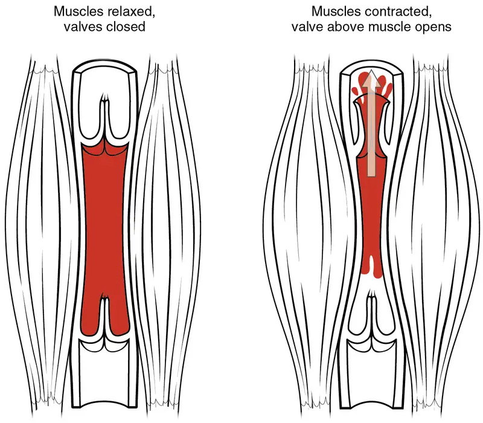
Respiratory Pump¶
The respiratory pump aids blood flow through the veins of the thorax and abdomen. During inhalation, the volume of the thorax increases, largely through the contraction of the diaphragm, which moves downward and compresses the abdominal cavity. The elevation of the chest caused by the contraction of the external intercostal muscles also contributes to the increased volume of the thorax. The volume increase causes air pressure within the thorax to decrease, allowing us to inhale. Additionally, as air pressure within the thorax drops, blood pressure in the thoracic veins also decreases, falling below the pressure in the abdominal veins. This causes blood to flow along its pressure gradient from veins outside the thorax, where pressure is higher, into the thoracic region, where pressure is now lower. This in turn promotes the return of blood from the thoracic veins to the atria. During exhalation, when air pressure increases within the thoracic cavity, pressure in the thoracic veins increases, speeding blood flow into the heart while valves in the veins prevent blood from flowing backward from the thoracic and abdominal veins.
Pressure Relationships in the Venous System¶
Although vessel diameter increases from the smaller venules to the larger veins and eventually to the venae cavae (singular = vena cava), the total cross-sectional area actually decreases (see Figure 20.13a and b). The individual veins are larger in diameter than the venules, but their total number is much lower, so their total cross-sectional area is also lower.
Also notice that, as blood moves from venules to veins, the average blood pressure drops (see Figure 20.13c), but the blood velocity actually increases (see Figure 20.13d). This pressure gradient drives blood back toward the heart. Again, the presence of one-way valves and the skeletal muscle and respiratory pumps contribute to this increased flow. Since approximately 64 percent of the total blood volume resides in systemic veins, any action that increases the flow of blood through the veins will increase venous return to the heart. Maintaining vascular tone within the veins prevents the veins from merely distending, dampening the flow of blood, and as you will see, vasoconstriction actually enhances the flow.
The Role of Venoconstriction in Resistance, Blood Pressure, and Flow¶
As previously discussed, vasoconstriction of an artery or arteriole decreases the radius, increasing resistance and pressure, but decreasing flow. Venoconstriction, on the other hand, has a very different outcome. The walls of veins are thin but irregular; thus, when the smooth muscle in those walls constricts, the lumen becomes more rounded. The more rounded the lumen, the less surface area the blood encounters, and the less resistance the vessel offers. Vasoconstriction increases pressure within a vein as it does in an artery, but in veins, the increased pressure increases flow. Recall that the pressure in the atria, into which the venous blood will flow, is very low, approaching zero for at least part of the relaxation phase of the cardiac cycle. Thus, venoconstriction increases the return of blood to the heart. Another way of stating this is that venoconstriction increases the preload or stretch of the cardiac muscle and increases contraction.
20.3 Capillary Exchange¶
Learning Objectives
By the end of this section, you will be able to:
- Identify the primary mechanisms of capillary exchange
- Distinguish between capillary hydrostatic pressure and blood colloid osmotic pressure, explaining the contribution of each to net filtration pressure
- Compare filtration and reabsorption
- Explain the fate of fluid that is not reabsorbed from the tissues into the vascular capillaries
The primary purpose of the cardiovascular system is to circulate gases, nutrients, wastes, and other substances to and from the cells of the body. Small molecules, such as gases, lipids, and lipid-soluble molecules, can diffuse directly through the membranes of the endothelial cells of the capillary wall. Glucose, amino acids, and ions—including sodium, potassium, calcium, and chloride—use transporters to move through specific channels in the membrane by facilitated diffusion. Glucose, ions, and larger molecules may also leave the blood through intercellular clefts. Larger molecules can pass through the pores of fenestrated capillaries, and even large plasma proteins can pass through the great gaps in the sinusoids. Some large proteins in blood plasma can move into and out of the endothelial cells packaged within vesicles by endocytosis and exocytosis. Water moves by osmosis.
Bulk Flow¶
The mass movement of fluids into and out of capillary beds requires a transport mechanism far more efficient than mere diffusion. This movement, often referred to as bulk flow, involves two pressure-driven mechanisms: Volumes of fluid move from an area of higher pressure in a capillary bed to an area of lower pressure in the tissues via filtration. In contrast, the movement of fluid from an area of higher pressure in the tissues into an area of lower pressure in the capillaries is reabsorption. Two types of pressure interact to drive each of these movements: hydrostatic pressure and osmotic pressure.
Hydrostatic Pressure¶
The primary force driving fluid transport between the capillaries and tissues is hydrostatic pressure, which can be defined as the pressure of any fluid enclosed in a space. Blood hydrostatic pressure is the force exerted by the blood confined within blood vessels or heart chambers. Even more specifically, the pressure exerted by blood against the wall of a capillary is called capillary hydrostatic pressure (CHP), and is the same as capillary blood pressure. CHP is the force that drives fluid out of capillaries and into the tissues.
As fluid exits a capillary and moves into tissues, the hydrostatic pressure in the interstitial fluid correspondingly rises. This opposing hydrostatic pressure is called the interstitial fluid hydrostatic pressure (IFHP). Generally, the CHP originating from the arterial pathways is considerably higher than the IFHP, because lymphatic vessels are continually absorbing excess fluid from the tissues. Thus, fluid generally moves out of the capillary and into the interstitial fluid. This process is called filtration.
Osmotic Pressure¶
The net pressure that drives reabsorption—the movement of fluid from the interstitial fluid back into the capillaries—is called osmotic pressure (sometimes referred to as oncotic pressure). Whereas hydrostatic pressure forces fluid out of the capillary, osmotic pressure draws fluid back in. Osmotic pressure is determined by osmotic concentration gradients, that is, the difference in the solute-to-water concentrations in the blood and tissue fluid. A region higher in solute concentration (and lower in water concentration) draws water across a semipermeable membrane from a region higher in water concentration (and lower in solute concentration).
As we discuss osmotic pressure in blood and tissue fluid, it is important to recognize that the formed elements of blood do not contribute to osmotic concentration gradients. Rather, it is the plasma proteins that play the key role. Solutes also move across the capillary wall according to their concentration gradient, but overall, the concentrations should be similar and not have a significant impact on osmosis. Because of their large size and chemical structure, plasma proteins are not truly solutes, that is, they do not dissolve but are dispersed or suspended in their fluid medium, forming a colloid rather than a solution.
The pressure created by the concentration of colloidal proteins in the blood is called the blood colloidal osmotic pressure (BCOP). Its effect on capillary exchange accounts for the reabsorption of water. The plasma proteins suspended in blood cannot move across the semipermeable capillary cell membrane, and so they remain in the plasma. As a result, blood has a higher colloidal concentration and lower water concentration than tissue fluid. It therefore attracts water. We can also say that the BCOP is higher than the interstitial fluid colloidal osmotic pressure (IFCOP), which is always very low because interstitial fluid contains few proteins. Thus, water is drawn from the tissue fluid back into the capillary, carrying dissolved molecules with it. This difference in colloidal osmotic pressure accounts for reabsorption.
Interaction of Hydrostatic and Osmotic Pressures¶
The normal unit used to express pressures within the cardiovascular system is millimeters of mercury (mm Hg). When blood leaving an arteriole first enters a capillary bed, the CHP is quite high—about 35 mm Hg. Gradually, this initial CHP declines as the blood moves through the capillary so that by the time the blood has reached the venous end, the CHP has dropped to approximately 18 mm Hg. In comparison, the plasma proteins remain suspended in the blood, so the BCOP remains fairly constant at about 25 mm Hg throughout the length of the capillary and considerably above the osmotic pressure in the interstitial fluid.
The net filtration pressure (NFP) represents the interaction of the hydrostatic and osmotic pressures, driving fluid out of the capillary. It is equal to the difference between the CHP and the BCOP. Since filtration is, by definition, the movement of fluid out of the capillary, when reabsorption is occurring, the NFP is a negative number.
NFP changes at different points in a capillary bed (Figure 20.16). Close to the arterial end of the capillary, it is approximately 10 mm Hg, because the CHP of 35 mm Hg minus the BCOP of 25 mm Hg equals 10 mm Hg. Recall that the hydrostatic and osmotic pressures of the interstitial fluid are essentially negligible. Thus, the NFP of 10 mm Hg drives a net movement of fluid out of the capillary at the arterial end. At approximately the middle of the capillary, the CHP is about the same as the BCOP of 25 mm Hg, so the NFP drops to zero. At this point, there is no net change of volume: Fluid moves out of the capillary at the same rate as it moves into the capillary. Near the venous end of the capillary, the CHP has dwindled to about 18 mm Hg due to loss of fluid. Because the BCOP remains steady at 25 mm Hg, water is drawn into the capillary, that is, reabsorption occurs. Another way of expressing this is to say that at the venous end of the capillary, there is an NFP of −7 mm Hg.
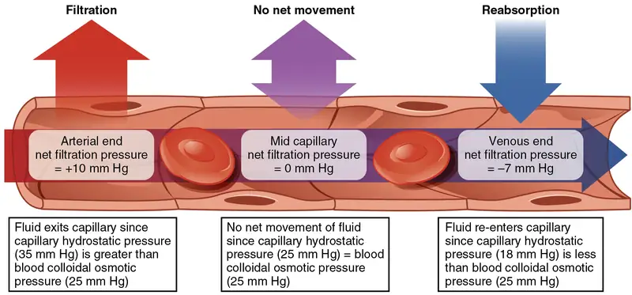
The Role of Lymphatic Capillaries¶
Since overall CHP is higher than BCOP, it is inevitable that more net fluid will exit the capillary through filtration at the arterial end than enters through reabsorption at the venous end. Considering all capillaries over the course of a day, this can be quite a substantial amount of fluid: Approximately 24 liters per day are filtered, whereas 20.4 liters are reabsorbed. This excess fluid is picked up by capillaries of the lymphatic system. These extremely thin-walled vessels have copious numbers of valves that ensure unidirectional flow through ever-larger lymphatic vessels that eventually drain into the subclavian veins in the neck. An important function of the lymphatic system is to return the fluid (lymph) to the blood. Lymph may be thought of as recycled blood plasma. (Seek additional content for more detail on the lymphatic system.)
Interactive
Watch this video to explore capillaries and how they function in the body. Capillaries are never more than 100 micrometers away. What is the main component of interstitial fluid?
20.4 Homeostatic Regulation of the Vascular System¶
Learning Objectives
By the end of this section, you will be able to:
- Discuss the mechanisms involved in the neural regulation of vascular homeostasis
- Describe the contribution of a variety of hormones to the renal regulation of blood pressure
- Identify the effects of exercise on vascular homeostasis
- Discuss how hypertension, hemorrhage, and circulatory shock affect vascular health
In order to maintain homeostasis in the cardiovascular system and provide adequate blood to the tissues, blood flow must be redirected continually to the tissues as they become more active. In a very real sense, the cardiovascular system engages in resource allocation, because there is not enough blood flow to distribute blood equally to all tissues simultaneously. For example, when an individual is exercising, more blood will be directed to skeletal muscles, the heart, and the lungs. Following a meal, more blood is directed to the digestive system. Only the brain receives a more or less constant supply of blood whether you are active, resting, thinking, or engaged in any other activity.
Table 20.3 provides the distribution of systemic blood at rest and during exercise. Although most of the data appears logical, the values for the distribution of blood to the integument may seem surprising. During exercise, the body distributes more blood to the body surface where it can dissipate the excess heat generated by increased activity into the environment.
Table 20.3
| Systemic Blood Flow During Rest, Mild Exercise, and Maximal Exercise in a Healthy Young Individual | |||
|---|---|---|---|
| Organ | Resting (mL/min) |
Mild exercise (mL/min) |
Maximal exercise (mL/min) |
| Skeletal muscle | 1200 | 4500 | 12,500 |
| Heart | 250 | 350 | 750 |
| Brain | 750 | 750 | 750 |
| Integument | 500 | 1500 | 1900 |
| Kidney | 1100 | 900 | 600 |
| Gastrointestinal | 1400 | 1100 | 600 |
| Others (i.e., liver, spleen) |
600 | 400 | 400 |
| Total | 5800 | 9500 | 17,500 |
Three homeostatic mechanisms ensure adequate blood flow, blood pressure, distribution, and ultimately perfusion: neural, endocrine, and autoregulatory mechanisms. They are summarized in Figure 20.17.
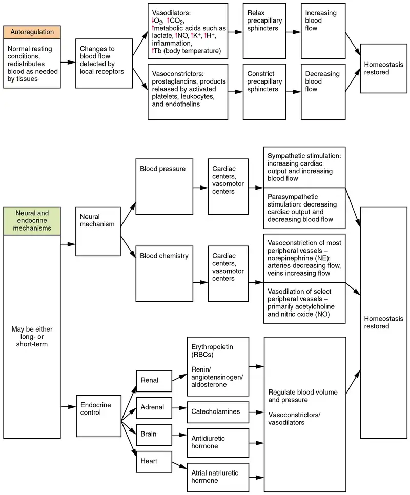
Neural Regulation¶
The nervous system plays a critical role in the regulation of vascular homeostasis. The primary regulatory sites include the cardiovascular centers in the brain that control both cardiac and vascular functions. In addition, more generalized neural responses from the limbic system and the autonomic nervous system are factors.
The Cardiovascular Centers in the Brain¶
Neurological regulation of blood pressure and flow depends on the cardiovascular centers located in the medulla oblongata. This cluster of neurons responds to changes in blood pressure as well as blood concentrations of oxygen, carbon dioxide, and hydrogen ions. The cardiovascular center contains three distinct paired components:
- The cardioaccelerator centers stimulate cardiac function by regulating heart rate and stroke volume via sympathetic stimulation from the cardiac accelerator nerve.
- The cardioinhibitor centers slow cardiac function by decreasing heart rate and stroke volume via parasympathetic stimulation from the vagus nerve.
- The vasomotor centers control vessel tone or contraction of the smooth muscle in the tunica media. Changes in diameter affect peripheral resistance, pressure, and flow, which affect cardiac output. The majority of these neurons act via the release of the neurotransmitter norepinephrine from sympathetic neurons.
Although each center functions independently, they are not anatomically distinct.
There is also a small population of neurons that control vasodilation in the vessels of the brain and skeletal muscles by relaxing the smooth muscle fibers in the vessel tunics. Many of these are cholinergic neurons, that is, they release acetylcholine, which in turn stimulates the vessels’ endothelial cells to release nitric oxide (NO), which causes vasodilation. Others release norepinephrine that binds to β2 receptors. A few neurons release NO directly as a neurotransmitter.
Recall that mild stimulation of the skeletal muscles maintains muscle tone. A similar phenomenon occurs with vascular tone in vessels. As noted earlier, arterioles are normally partially constricted: With maximal stimulation, their radius may be reduced to one-half of the resting state. Full dilation of most arterioles requires that this sympathetic stimulation be suppressed. When it is, an arteriole can expand by as much as 150 percent. Such a significant increase can dramatically affect resistance, pressure, and flow.
Baroreceptor Reflexes¶
Baroreceptors are specialized stretch receptors located within thin areas of blood vessels and heart chambers that respond to the degree of stretch caused by the presence of blood. They send impulses to the cardiovascular center to regulate blood pressure. Vascular baroreceptors are found primarily in sinuses (small cavities) within the aorta and carotid arteries: The aortic sinuses are found in the walls of the ascending aorta just superior to the aortic valve, whereas the carotid sinuses are in the base of the internal carotid arteries. There are also low-pressure baroreceptors located in the walls of the venae cavae and right atrium.
When blood pressure increases, the baroreceptors are stretched more tightly and initiate action potentials at a higher rate. At lower blood pressures, the degree of stretch is lower and the rate of firing is slower. When the cardiovascular center in the medulla oblongata receives this input, it triggers a reflex that maintains homeostasis (Figure 20.18):
- When blood pressure rises too high, the baroreceptors fire at a higher rate and trigger parasympathetic stimulation of the heart. As a result, cardiac output falls. Sympathetic stimulation of the peripheral arterioles will also decrease, resulting in vasodilation. Combined, these activities cause blood pressure to fall.
- When blood pressure drops too low, the rate of baroreceptor firing decreases. This will trigger an increase in sympathetic stimulation of the heart, causing cardiac output to increase. It will also trigger sympathetic stimulation of the peripheral vessels, resulting in vasoconstriction. Combined, these activities cause blood pressure to rise.
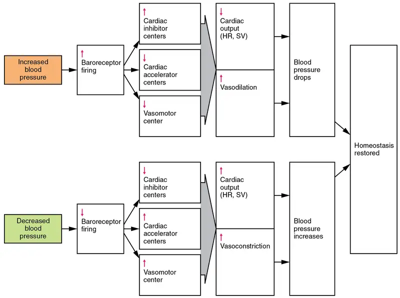
The baroreceptors in the venae cavae and right atrium monitor blood pressure as the blood returns to the heart from the systemic circulation. Normally, blood flow into the aorta is the same as blood flow back into the right atrium. If blood is returning to the right atrium more rapidly than it is being ejected from the left ventricle, the atrial receptors will stimulate the cardiovascular centers to increase sympathetic firing and increase cardiac output until homeostasis is achieved. The opposite is also true. This mechanism is referred to as the atrial reflex.
Chemoreceptor Reflexes¶
In addition to the baroreceptors are chemoreceptors that monitor levels of oxygen, carbon dioxide, and hydrogen ions (pH), and thereby contribute to vascular homeostasis. Chemoreceptors monitoring the blood are located in close proximity to the baroreceptors in the aortic and carotid sinuses. They signal the cardiovascular center as well as the respiratory centers in the medulla oblongata.
Since tissues consume oxygen and produce carbon dioxide and acids as waste products, when the body is more active, oxygen levels fall and carbon dioxide levels rise as cells undergo cellular respiration to meet the energy needs of activities. This causes more hydrogen ions to be produced, causing the blood pH to drop. When the body is resting, oxygen levels are higher, carbon dioxide levels are lower, more hydrogen is bound, and pH rises. (Seek additional content for more detail about pH.)
The chemoreceptors respond to increasing carbon dioxide and hydrogen ion levels (falling pH) by stimulating the cardioaccelerator and vasomotor centers, increasing cardiac output and constricting peripheral vessels. The cardioinhibitor centers are suppressed. With falling carbon dioxide and hydrogen ion levels (increasing pH), the cardioinhibitor centers are stimulated, and the cardioaccelerator and vasomotor centers are suppressed, decreasing cardiac output and causing peripheral vasodilation. In order to maintain adequate supplies of oxygen to the cells and remove waste products such as carbon dioxide, it is essential that the respiratory system respond to changing metabolic demands. In turn, the cardiovascular system will transport these gases to the lungs for exchange, again in accordance with metabolic demands. This interrelationship of cardiovascular and respiratory control cannot be overemphasized.
Other neural mechanisms can also have a significant impact on cardiovascular function. These include the limbic system that links physiological responses to psychological stimuli, as well as generalized sympathetic and parasympathetic stimulation.
Endocrine Regulation¶
Endocrine control over the cardiovascular system involves the catecholamines, epinephrine and norepinephrine, as well as several hormones that interact with the kidneys in the regulation of blood volume.
Epinephrine and Norepinephrine¶
The catecholamines epinephrine and norepinephrine are released by the adrenal medulla, and enhance and extend the body’s sympathetic or “fight-or-flight” response (see Figure 20.17). They increase heart rate and force of contraction, while temporarily constricting blood vessels to organs not essential for flight-or-fight responses and redirecting blood flow to the liver, muscles, and heart.
Antidiuretic Hormone¶
Antidiuretic hormone (ADH), also known as vasopressin, is secreted by the cells in the hypothalamus and transported via the hypothalamic-hypophyseal tracts to the posterior pituitary where it is stored until released upon nervous stimulation. The primary trigger prompting the hypothalamus to release ADH is increasing osmolarity of tissue fluid, usually in response to significant loss of blood volume. ADH signals its target cells in the kidneys to reabsorb more water, thus preventing the loss of additional fluid in the urine. This will increase overall fluid levels and help restore blood volume and pressure. In addition, ADH constricts peripheral vessels.
Renin-Angiotensin-Aldosterone Mechanism¶
The renin-angiotensin-aldosterone mechanism has a major effect upon the cardiovascular system (Figure 20.19). Renin is an enzyme, although because of its importance in the renin-angiotensin-aldosterone pathway, some sources identify it as a hormone. Specialized cells in the kidneys , called juxtaglomerular (JG) cells, respond to decreased blood pressure by secreting renin into the blood. Renin converts the plasma protein angiotensinogen, which is produced by the liver, into its active form—angiotensin I. Angiotensin I circulates in the blood and is then converted into angiotensin II in the lungs. This reaction is catalyzed by the enzyme angiotensin-converting enzyme (ACE).
Angiotensin II is a powerful vasoconstrictor, greatly increasing blood pressure. It also stimulates the release of ADH and aldosterone, a hormone produced by the adrenal cortex. Aldosterone increases the reabsorption of sodium into the blood by the kidneys. Since water follows sodium, this increases the reabsorption of water. This in turn increases blood volume, raising blood pressure. Angiotensin II also stimulates the thirst center in the hypothalamus, so an individual will likely consume more fluids, again increasing blood volume and pressure.
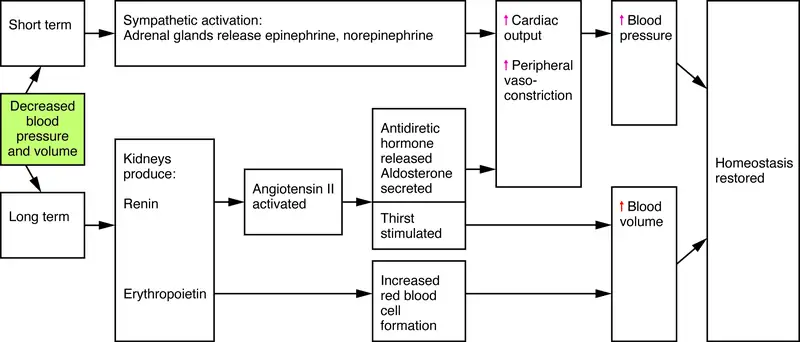
Erythropoietin¶
Erythropoietin (EPO) is released by the kidneys when blood flow and/or oxygen levels decrease. EPO stimulates the production of erythrocytes within the bone marrow. Erythrocytes are the major formed element of the blood and may contribute 40 percent or more to blood volume, a significant factor of viscosity, resistance, pressure, and flow. In addition, EPO is a vasoconstrictor. Overproduction of EPO or excessive intake of synthetic EPO, often to enhance athletic performance, will increase viscosity, resistance, and pressure, and decrease flow in addition to its contribution as a vasoconstrictor.
Atrial Natriuretic Hormone¶
Secreted by cells in the atria of the heart, atrial natriuretic hormone (ANH) (also known as atrial natriuretic peptide) is secreted when blood volume is high enough to cause extreme stretching of the cardiac cells. Cells in the ventricle produce a hormone with similar effects, called B-type natriuretic hormone. Natriuretic hormones are antagonists to angiotensin II. They promote loss of sodium and water from the kidneys, and suppress renin, aldosterone, and ADH production and release. All of these actions promote loss of fluid from the body, so blood volume and blood pressure drop.
Autoregulation of Perfusion¶
As the name would suggest, autoregulation mechanisms require neither specialized nervous stimulation nor endocrine control. Rather, these are local, self-regulatory mechanisms that allow each region of tissue to adjust its blood flow—and thus its perfusion. These local mechanisms include chemical signals and myogenic controls.
Chemical Signals Involved in Autoregulation¶
Chemical signals work at the level of the precapillary sphincters to trigger either constriction or relaxation. As you know, opening a precapillary sphincter allows blood to flow into that particular capillary, whereas constricting a precapillary sphincter temporarily shuts off blood flow to that region. The factors involved in regulating the precapillary sphincters include the following:
- Opening of the sphincter is triggered in response to decreased oxygen concentrations; increased carbon dioxide concentrations; increasing levels of lactic acid or other byproducts of cellular metabolism; increasing concentrations of potassium ions or hydrogen ions (falling pH); inflammatory chemicals such as histamines; and increased body temperature. These conditions in turn stimulate the release of NO, a powerful vasodilator, from endothelial cells (see Figure 20.17).
- Contraction of the precapillary sphincter is triggered by the opposite levels of the regulators, which prompt the release of endothelins, powerful vasoconstricting peptides secreted by endothelial cells. Platelet secretions and certain prostaglandins may also trigger constriction.
Again, these factors alter tissue perfusion via their effects on the precapillary sphincter mechanism, which regulates blood flow to capillaries. Since the amount of blood is limited, not all capillaries can fill at once, so blood flow is allocated based upon the needs and metabolic state of the tissues as reflected in these parameters. Bear in mind, however, that dilation and constriction of the arterioles feeding the capillary beds is the primary control mechanism.
The Myogenic Response¶
The myogenic response is a reaction to the stretching of the smooth muscle in the walls of arterioles as changes in blood flow occur through the vessel. This may be viewed as a largely protective function against dramatic fluctuations in blood pressure and blood flow to maintain homeostasis. If perfusion of an organ is too low (ischemia), the tissue will experience low levels of oxygen (hypoxia). In contrast, excessive perfusion could damage the organ’s smaller and more fragile vessels. The myogenic response is a localized process that serves to stabilize blood flow in the capillary network that follows that arteriole.
When blood flow is low, the vessel’s smooth muscle will be only minimally stretched. In response, it relaxes, allowing the vessel to dilate and thereby increase the movement of blood into the tissue. When blood flow is too high, the smooth muscle will contract in response to the increased stretch, prompting vasoconstriction that reduces blood flow.
Figure 20.20 summarizes the effects of nervous, endocrine, and local controls on arterioles.
![This table summarizes mechanisms that regulate arteriole smooth muscle and veins. Neural controls are regulated by sympathetic stimulation and parasympathetic. Endocrine controls are regulated by epinephrine, norepinephrine, angiotensin II, ANH (peptide), and ADH. Other factors include decreasing levels of oxygen, decreasing pH, increasing levels of carbon dioxide, increasing levels of potassium ion, increasing levels of prostaglandins, increasing levels of andenosine, increasing levels of NO, increasing levels of lactic acid and other metabolites, increasing levels of endothelins, increasing levels of platelet secretions, increasing hyperhtermia, stretching of vascular wall (myogenic), and increasing levels of histamines from basophils and mast cells.](img/2143-mechanism-regulating-arteries-and-veins.webp)
Effect of Exercise on Vascular Homeostasis¶
The heart is a muscle and, like any muscle, it responds dramatically to exercise. For a healthy young adult, cardiac output (heart rate × stroke volume) increases in the nonathlete from approximately 5.0 liters (5.25 quarts) per minute to a maximum of about 20 liters (21 quarts) per minute. Accompanying this will be an increase in blood pressure from about 120/80 to 185/75. However, well-trained aerobic athletes can increase these values substantially. For these individuals, cardiac output soars from approximately 5.3 liters (5.57 quarts) per minute resting to more than 30 liters (31.5 quarts) per minute during maximal exercise. Along with this increase in cardiac output, blood pressure increases from 120/80 at rest to 200/90 at maximum values.
In addition to improved cardiac function, exercise increases the size and mass of the heart. The average weight of the heart for the nonathlete is about 300 g, whereas in an athlete it will increase to 500 g. This increase in size generally makes the heart stronger and more efficient at pumping blood, increasing both stroke volume and cardiac output.
Tissue perfusion also increases as the body transitions from a resting state to light exercise and eventually to heavy exercise (see Figure 20.20). These changes result in selective vasodilation in the skeletal muscles, heart, lungs, liver, and integument. Simultaneously, vasoconstriction occurs in the vessels leading to the kidneys and most of the digestive and reproductive organs. The flow of blood to the brain remains largely unchanged whether at rest or exercising, since the vessels in the brain largely do not respond to regulatory stimuli, in most cases, because they lack the appropriate receptors.
As vasodilation occurs in selected vessels, resistance drops and more blood rushes into the organs they supply. This blood eventually returns to the venous system. Venous return is further enhanced by both the skeletal muscle and respiratory pumps. As blood returns to the heart more quickly, preload rises and the Frank-Starling principle tells us that contraction of the cardiac muscle in the atria and ventricles will be more forceful. Eventually, even the best-trained athletes will fatigue and must undergo a period of rest following exercise. Cardiac output and distribution of blood then return to normal.
Regular exercise promotes cardiovascular health in a variety of ways. Because an athlete’s heart is larger than a nonathlete’s, stroke volume increases, so the athletic heart can deliver the same amount of blood as the nonathletic heart but with a lower heart rate. This increased efficiency allows the athlete to exercise for longer periods of time before muscles fatigue and places less stress on the heart. Exercise also lowers overall cholesterol levels by removing from the circulation a complex form of cholesterol, triglycerides, and proteins known as low-density lipoproteins (LDLs), which are widely associated with increased risk of cardiovascular disease. Although there is no way to remove deposits of plaque from the walls of arteries other than specialized surgery, exercise does promote the health of vessels by decreasing the rate of plaque formation and reducing blood pressure, so the heart does not have to generate as much force to overcome resistance.
Generally as little as 30 minutes of noncontinuous exercise over the course of each day has beneficial effects and has been shown to lower the rate of heart attack by nearly 50 percent. While it is always advisable to follow a healthy diet, stop smoking, and lose weight, studies have clearly shown that fit, overweight people may actually be healthier overall than sedentary slender people. Thus, the benefits of moderate exercise are undeniable.
Clinical Considerations in Vascular Homeostasis¶
Any disorder that affects blood volume, vascular tone, or any other aspect of vascular functioning is likely to affect vascular homeostasis as well. That includes hypertension, hemorrhage, and shock.
Hypertension and Hypotension¶
New guidelines in 2017 from the American College of Cardiology and American Heart Association list normal blood pressure (BP) as less than 120/80 mm Hg and elevated BP as systolic P between 120–129 and diastolic P less than 80 mm Hg. Chronically elevated blood pressure is known clinically as hypertension. The new guidelines list hypertension that should be treated as 130/80 mm Hg. Tens of millions of Americans currently suffer from hypertension. Unfortunately, hypertension is typically a silent disorder; therefore, hypertensive patients may fail to recognize the seriousness of their condition and fail to follow their treatment plan. The result is often a heart attack or stroke. Hypertension may also lead to an aneurysm (ballooning of a blood vessel caused by a weakening of the wall), peripheral arterial disease (obstruction of vessels in peripheral regions of the body), chronic kidney disease, or heart failure.
Interactive
Listen to this podcast to learn about hypertension, often described as a “silent killer.” What steps can you take to reduce your risk of a heart attack or stroke?
Hemorrhage¶
Minor blood loss is managed by hemostasis and repair. Hemorrhage is a loss of blood that cannot be controlled by hemostatic mechanisms. Initially, the body responds to hemorrhage by initiating mechanisms aimed at increasing blood pressure and maintaining blood flow. Ultimately, however, blood volume will need to be restored, either through physiological processes or through medical intervention.
In response to blood loss, stimuli from the baroreceptors trigger the cardiovascular centers to stimulate sympathetic responses to increase cardiac output and vasoconstriction. This typically prompts the heart rate to increase to about 180–200 contractions per minute, restoring cardiac output to normal levels. Vasoconstriction of the arterioles increases vascular resistance, whereas constriction of the veins increases venous return to the heart. Both of these steps will help increase blood pressure. Sympathetic stimulation also triggers the release of epinephrine and norepinephrine, which enhance both cardiac output and vasoconstriction. If blood loss were less than 20 percent of total blood volume, these responses together would usually return blood pressure to normal and redirect the remaining blood to the tissues.
Additional endocrine involvement is necessary, however, to restore the lost blood volume. The angiotensin-renin-aldosterone mechanism stimulates the thirst center in the hypothalamus, which increases fluid consumption to help restore the lost blood. More importantly, it increases renal reabsorption of sodium and water, reducing water loss in urine output. The kidneys also increase the production of EPO, stimulating the formation of erythrocytes that not only deliver oxygen to the tissues but also increase overall blood volume. Figure 20.21 summarizes the responses to loss of blood volume.
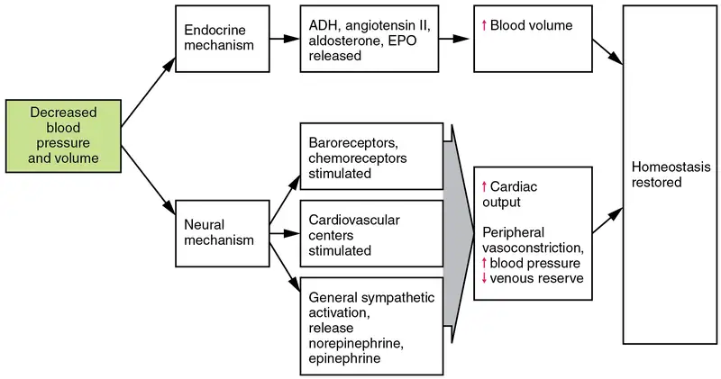
Circulatory Shock¶
The loss of too much blood may lead to circulatory shock, a life-threatening condition in which the circulatory system is unable to maintain blood flow to adequately supply sufficient oxygen and other nutrients to the tissues to maintain cellular metabolism. It should not be confused with emotional or psychological shock. Typically, the patient in circulatory shock will demonstrate an increased heart rate but decreased blood pressure, but there are cases in which blood pressure will remain normal. Urine output will fall dramatically, and the patient may appear confused or lose consciousness. Urine output less than 1 mL/kg body weight/hour is cause for concern. Unfortunately, shock is an example of a positive-feedback loop that, if uncorrected, may lead to the death of the patient.
There are several recognized forms of shock:
- Hypovolemic shock in adults is typically caused by hemorrhage, although in children it may be caused by fluid losses related to severe vomiting or diarrhea. Other causes for hypovolemic shock include extensive burns, exposure to some toxins, and excessive urine loss related to diabetes insipidus or ketoacidosis. Typically, patients present with a rapid, almost tachycardic heart rate; a weak pulse often described as “thready;” cool, clammy skin, particularly in the extremities, due to restricted peripheral blood flow; rapid, shallow breathing; hypothermia; thirst; and dry mouth. Treatments generally involve providing intravenous fluids to restore the patient to normal function and various drugs such as dopamine, epinephrine, and norepinephrine to raise blood pressure.
- Cardiogenic shock results from the inability of the heart to maintain cardiac output. Most often, it results from a myocardial infarction (heart attack), but it may also be caused by arrhythmias, valve disorders, cardiomyopathies, cardiac failure, or simply insufficient flow of blood through the cardiac vessels. Treatment involves repairing the damage to the heart or its vessels to resolve the underlying cause, rather than treating cardiogenic shock directly.
- Vascular shock occurs when arterioles lose their normal muscular tone and dilate dramatically. It may arise from a variety of causes, and treatments almost always involve fluid replacement and medications, called inotropic or pressor agents, which restore tone to the muscles of the vessels. In addition, eliminating or at least alleviating the underlying cause of the condition is required. This might include antibiotics and antihistamines, or select steroids, which may aid in the repair of nerve damage. A common cause is sepsis (or septicemia), also called “blood poisoning,” which is a widespread bacterial infection that results in an organismal-level inflammatory response known as septic shock. Neurogenic shock is a form of vascular shock that occurs with cranial or spinal injuries that damage the cardiovascular centers in the medulla oblongata or the nervous fibers originating from this region. Anaphylactic shock is a severe allergic response that causes the widespread release of histamines, triggering vasodilation throughout the body.
- Obstructive shock, as the name would suggest, occurs when a significant portion of the vascular system is blocked. It is not always recognized as a distinct condition and may be grouped with cardiogenic shock, including pulmonary embolism and cardiac tamponade. Treatments depend upon the underlying cause and, in addition to administering fluids intravenously, often include the administration of anticoagulants, removal of fluid from the pericardial cavity, or air from the thoracic cavity, and surgery as required. The most common cause is a pulmonary embolism, a clot that lodges in the pulmonary vessels and interrupts blood flow. Other causes include stenosis of the aortic valve; cardiac tamponade, in which excess fluid in the pericardial cavity interferes with the ability of the heart to fully relax and fill with blood (resulting in decreased preload); and a pneumothorax, in which an excessive amount of air is present in the thoracic cavity, outside of the lungs, which interferes with venous return, pulmonary function, and delivery of oxygen to the tissues.
20.5 Circulatory Pathways¶
Learning Objectives
By the end of this section, you will be able to:
- Identify the vessels through which blood travels within the pulmonary circuit, beginning from the right ventricle of the heart and ending at the left atrium
- Create a flow chart showing the major systemic arteries through which blood travels from the aorta and its major branches, to the most significant arteries feeding into the right and left upper and lower limbs
- Create a flow chart showing the major systemic veins through which blood travels from the feet to the right atrium of the heart
Virtually every cell, tissue, organ, and system in the body is impacted by the circulatory system. This includes the generalized and more specialized functions of transport of materials, capillary exchange, maintaining health by transporting white blood cells and various immunoglobulins (antibodies), hemostasis, regulation of body temperature, and helping to maintain acid-base balance. In addition to these shared functions, many systems enjoy a unique relationship with the circulatory system. Figure 20.22 summarizes these relationships.
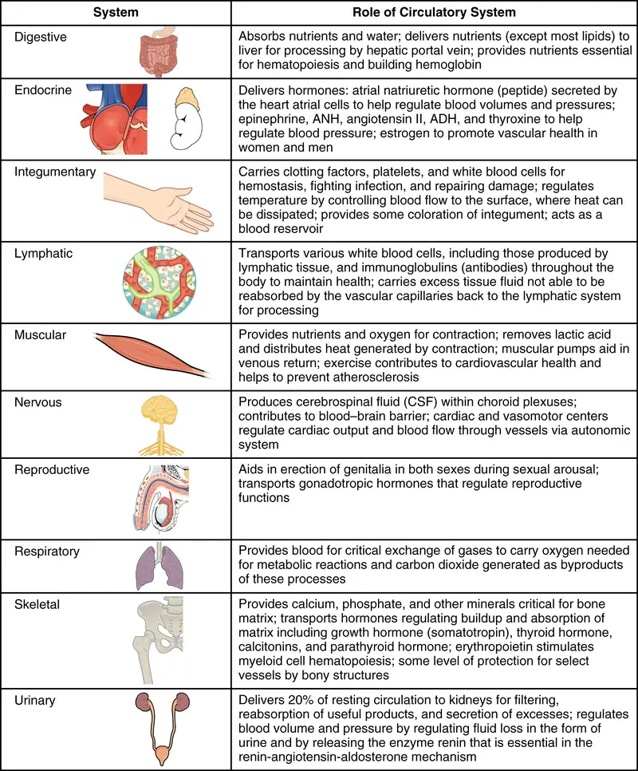
As you learn about the vessels of the systemic and pulmonary circuits, notice that many arteries and veins share the same names, parallel one another throughout the body, and are very similar on the right and left sides of the body. These pairs of vessels will be traced through only one side of the body. Where differences occur in branching patterns or when vessels are singular, this will be indicated. For example, you will find a pair of femoral arteries and a pair of femoral veins, with one vessel on each side of the body. In contrast, some vessels closer to the midline of the body, such as the aorta, are unique. Moreover, some superficial veins, such as the great saphenous vein in the femoral region, have no arterial counterpart. Another phenomenon that can make the study of vessels challenging is that names of vessels can change with location. Like a street that changes name as it passes through an intersection, an artery or vein can change names as it passes an anatomical landmark. For example, the left subclavian artery becomes the axillary artery as it passes through the body wall and into the axillary region, and then becomes the brachial artery as it flows from the axillary region into the upper arm (or brachium). You will also find examples of anastomoses where two blood vessels that previously branched reconnect. Anastomoses are especially common in veins, where they help maintain blood flow even when one vessel is blocked or narrowed, although there are some important ones in the arteries supplying the brain.
As you read about circular pathways, notice that there is an occasional, very large artery referred to as a trunk, a term indicating that the vessel gives rise to several smaller arteries. For example, the celiac trunk gives rise to the left gastric, common hepatic, and splenic arteries.
As you study this section, imagine you are on a “Voyage of Discovery” similar to Lewis and Clark’s expedition in 1804–1806, which followed rivers and streams through unfamiliar territory, seeking a water route from the Atlantic to the Pacific Ocean. You might envision being inside a miniature boat, exploring the various branches of the circulatory system. This simple approach has proven effective for many students in mastering these major circulatory patterns. Another approach that works well for many students is to create simple line drawings similar to the ones provided, labeling each of the major vessels. It is beyond the scope of this text to name every vessel in the body. However, we will attempt to discuss the major pathways for blood and acquaint you with the major named arteries and veins in the body. Also, please keep in mind that individual variations in circulation patterns are not uncommon.
Interactive
Visit this site for a brief summary of the arteries.
Pulmonary Circulation¶
Recall that blood returning from the systemic circuit enters the right atrium (Figure 20.23) via the superior and inferior venae cavae and the coronary sinus, which drains the blood supply of the heart muscle. These vessels will be described more fully later in this section. This blood is relatively low in oxygen and relatively high in carbon dioxide, since much of the oxygen has been extracted for use by the tissues and the waste gas carbon dioxide was picked up to be transported to the lungs for elimination. From the right atrium, blood moves into the right ventricle, which pumps it to the lungs for gas exchange. This system of vessels is referred to as the pulmonary circuit.
The single vessel exiting the right ventricle is the pulmonary trunk. At the base of the pulmonary trunk is the pulmonary semilunar valve, which prevents backflow of blood into the right ventricle during ventricular diastole. As the pulmonary trunk reaches the superior surface of the heart, it curves posteriorly and rapidly bifurcates (divides) into two branches, a left and a right pulmonary artery. To prevent confusion between these vessels, it is important to refer to the vessel exiting the heart as the pulmonary trunk, rather than also calling it a pulmonary artery. The pulmonary arteries in turn branch many times within the lung, forming a series of smaller arteries and arterioles that eventually lead to the pulmonary capillaries. The pulmonary capillaries surround lung structures known as alveoli that are the sites of oxygen and carbon dioxide exchange.
Once gas exchange is completed, oxygenated blood flows from the pulmonary capillaries into a series of pulmonary venules that eventually lead to a series of larger pulmonary veins. Four pulmonary veins, two on the left and two on the right, return blood to the left atrium. At this point, the pulmonary circuit is complete. Table 20.4 defines the major arteries and veins of the pulmonary circuit discussed in the text.
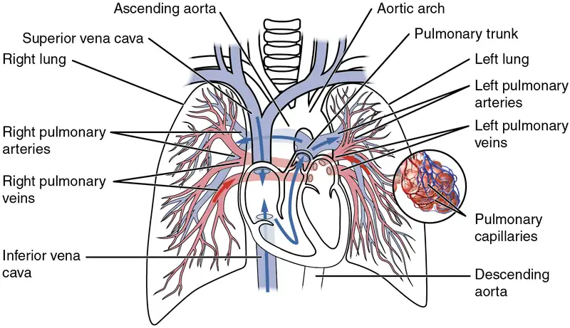
Table 20.4
| Pulmonary Arteries and Veins | |
|---|---|
| Vessel | Description |
| Pulmonary trunk | Single large vessel exiting the right ventricle that divides to form the right and left pulmonary arteries |
| Pulmonary arteries | Left and right vessels that form from the pulmonary trunk and lead to smaller arterioles and eventually to the pulmonary capillaries |
| Pulmonary veins | Two sets of paired vessels—one pair on each side—that are formed from the small venules, leading away from the pulmonary capillaries to flow into the left atrium |
Overview of Systemic Arteries¶
Blood relatively high in oxygen concentration is returned from the pulmonary circuit to the left atrium via the four pulmonary veins. From the left atrium, blood moves into the left ventricle, which pumps blood into the aorta. The aorta and its branches—the systemic arteries—send blood to virtually every organ of the body (Figure 20.24).
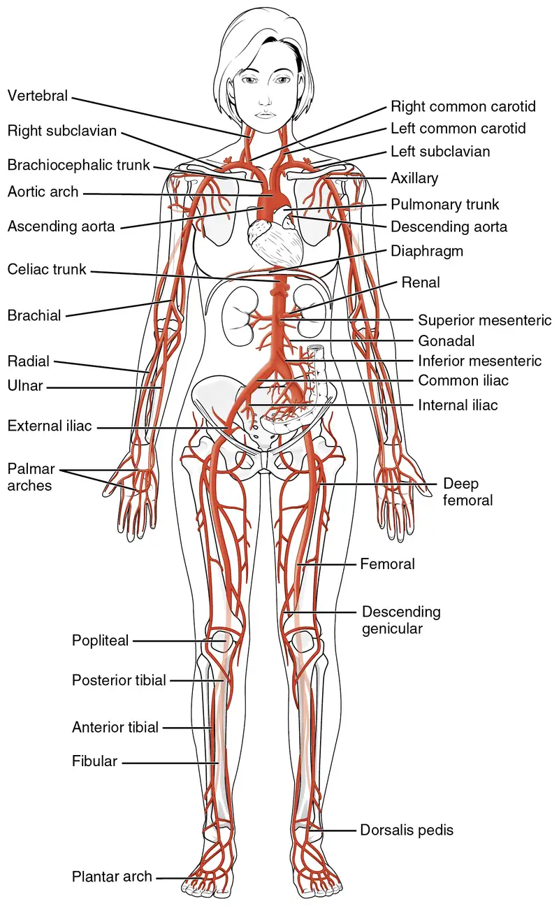
The Aorta¶
The aorta is the largest artery in the body (Figure 20.25). It arises from the left ventricle and eventually descends to the abdominal region, where it bifurcates at the level of the fourth lumbar vertebra into the two common iliac arteries. The aorta consists of the ascending aorta, the aortic arch, and the descending aorta, which passes through the diaphragm and a landmark that divides into the superior thoracic and inferior abdominal components. Arteries originating from the aorta ultimately distribute blood to virtually all tissues of the body. At the base of the aorta is the aortic semilunar valve that prevents backflow of blood into the left ventricle while the heart is relaxing. After exiting the heart, the ascending aorta moves in a superior direction for approximately 5 cm and ends at the sternal angle. Following this ascent, it reverses direction, forming a graceful arc to the left, called the aortic arch. The aortic arch descends toward the inferior portions of the body and ends at the level of the intervertebral disk between the fourth and fifth thoracic vertebrae. Beyond this point, the descending aorta continues close to the bodies of the vertebrae and passes through an opening in the diaphragm known as the aortic hiatus. Superior to the diaphragm, the aorta is called the thoracic aorta, and inferior to the diaphragm, it is called the abdominal aorta. The abdominal aorta terminates when it bifurcates into the two common iliac arteries at the level of the fourth lumbar vertebra. See Figure 20.25 for an illustration of the ascending aorta, the aortic arch, and the initial segment of the descending aorta plus major branches; Table 20.5 summarizes the structures of the aorta.
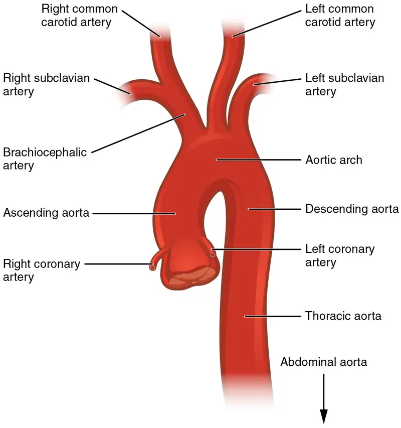
Table 20.5
| Components of the Aorta | |
|---|---|
| Vessel | Description |
| Aorta | Largest artery in the body, originating from the left ventricle and descending to the abdominal region, where it bifurcates into the common iliac arteries at the level of the fourth lumbar vertebra; arteries originating from the aorta distribute blood to virtually all tissues of the body |
| Ascending aorta | Initial portion of the aorta, rising superiorly from the left ventricle for a distance of approximately 5 cm |
| Aortic arch | Graceful arc to the left that connects the ascending aorta to the descending aorta; ends at the intervertebral disk between the fourth and fifth thoracic vertebrae |
| Descending aorta | Portion of the aorta that continues inferiorly past the end of the aortic arch; subdivided into the thoracic aorta and the abdominal aorta |
| Thoracic aorta | Portion of the descending aorta superior to the aortic hiatus |
| Abdominal aorta | Portion of the aorta inferior to the aortic hiatus and superior to the common iliac arteries |
Coronary Circulation¶
The first vessels that branch from the ascending aorta are the paired coronary arteries (see Figure 20.25), which arise from two of the three sinuses in the ascending aorta just superior to the aortic semilunar valve. These sinuses contain the aortic baroreceptors and chemoreceptors critical to maintain cardiac function. The left coronary artery arises from the left posterior aortic sinus. The right coronary artery arises from the anterior aortic sinus. Normally, the right posterior aortic sinus does not give rise to a vessel.
The coronary arteries encircle the heart, forming a ring-like structure that divides into the next level of branches that supplies blood to the heart tissues. (Seek additional content for more detail on cardiac circulation.)
Aortic Arch Branches¶
There are three major branches of the aortic arch: the brachiocephalic artery, the left common carotid artery, and the left subclavian (literally “under the clavicle”) artery. As you would expect based upon proximity to the heart, each of these vessels is classified as an elastic artery.
The brachiocephalic artery is located only on the right side of the body; there is no corresponding artery on the left. The brachiocephalic artery branches into the right subclavian artery and the right common carotid artery. The left subclavian and left common carotid arteries arise independently from the aortic arch but otherwise follow a similar pattern and distribution to the corresponding arteries on the right side (see Figure 20.23).
Each subclavian artery supplies blood to the arms, chest, shoulders, back, and central nervous system. It then gives rise to three major branches: the internal thoracic artery, the vertebral artery, and the thyrocervical artery. The internal thoracic artery, or mammary artery, supplies blood to the thymus, the pericardium of the heart, and the anterior chest wall. The vertebral artery passes through the vertebral foramen in the cervical vertebrae and then through the foramen magnum into the cranial cavity to supply blood to the brain and spinal cord. The paired vertebral arteries join together to form the large basilar artery at the base of the medulla oblongata. This is an example of an anastomosis. The subclavian artery also gives rise to the thyrocervical artery that provides blood to the thyroid, the cervical region of the neck, and the upper back and shoulder.
The common carotid artery divides into internal and external carotid arteries. The right common carotid artery arises from the brachiocephalic artery and the left common carotid artery arises directly from the aortic arch. The external carotid artery supplies blood to numerous structures within the face, lower jaw, neck, esophagus, and larynx. These branches include the lingual, facial, occipital, maxillary, and superficial temporal arteries. The internal carotid artery initially forms an expansion known as the carotid sinus, containing the carotid baroreceptors and chemoreceptors. Like their counterparts in the aortic sinuses, the information provided by these receptors is critical to maintaining cardiovascular homeostasis (see Figure 20.23).
The internal carotid arteries along with the vertebral arteries are the two primary suppliers of blood to the human brain. Given the central role and vital importance of the brain to life, it is critical that blood supply to this organ remains uninterrupted. Recall that blood flow to the brain is remarkably constant, with approximately 20 percent of blood flow directed to this organ at any given time. When blood flow is interrupted, even for just a few seconds, a transient ischemic attack (TIA), or mini-stroke, may occur, resulting in loss of consciousness or temporary loss of neurological function. In some cases, the damage may be permanent. Loss of blood flow for longer periods, typically between 3 and 4 minutes, will likely produce irreversible brain damage or a stroke, also called a cerebrovascular accident (CVA). The locations of the arteries in the brain not only provide blood flow to the brain tissue but also prevent interruption in the flow of blood. Both the carotid and vertebral arteries branch once they enter the cranial cavity, and some of these branches form a structure known as the arterial circle (or circle of Willis), an anastomosis that is remarkably like a traffic circle that sends off branches (in this case, arterial branches to the brain). As a rule, branches to the anterior portion of the cerebrum are normally fed by the internal carotid arteries; the remainder of the brain receives blood flow from branches associated with the vertebral arteries.
The internal carotid artery continues through the carotid canal of the temporal bone and enters the base of the brain through the carotid foramen where it gives rise to several branches (Figure 20.26 and Figure 20.27). One of these branches is the anterior cerebral artery that supplies blood to the frontal lobe of the cerebrum. Another branch, the middle cerebral artery, supplies blood to the temporal and parietal lobes, which are the most common sites of CVAs. The ophthalmic artery, the third major branch, provides blood to the eyes.
The right and left anterior cerebral arteries join together to form an anastomosis called the anterior communicating artery. The initial segments of the anterior cerebral arteries and the anterior communicating artery form the anterior portion of the arterial circle. The posterior portion of the arterial circle is formed by a left and a right posterior communicating artery that branches from the posterior cerebral artery, which arises from the basilar artery. It provides blood to the posterior portion of the cerebrum and brain stem. The basilar artery is an anastomosis that begins at the junction of the two vertebral arteries and sends branches to the cerebellum and brain stem. It flows into the posterior cerebral arteries. Table 20.6 summarizes the aortic arch branches, including the major branches supplying the brain.
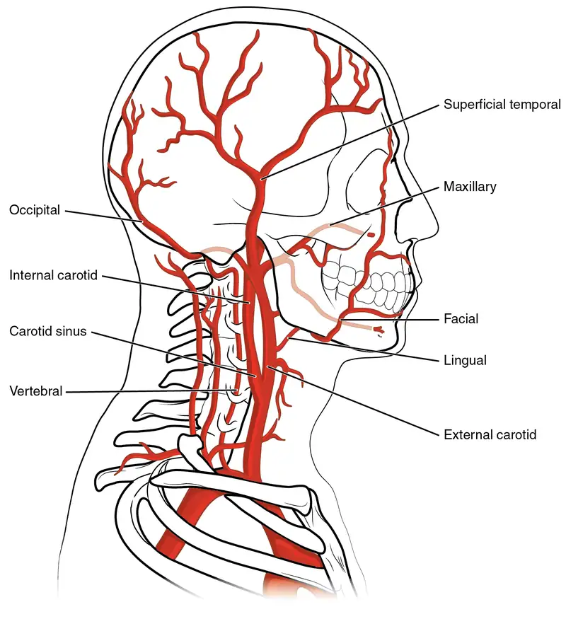
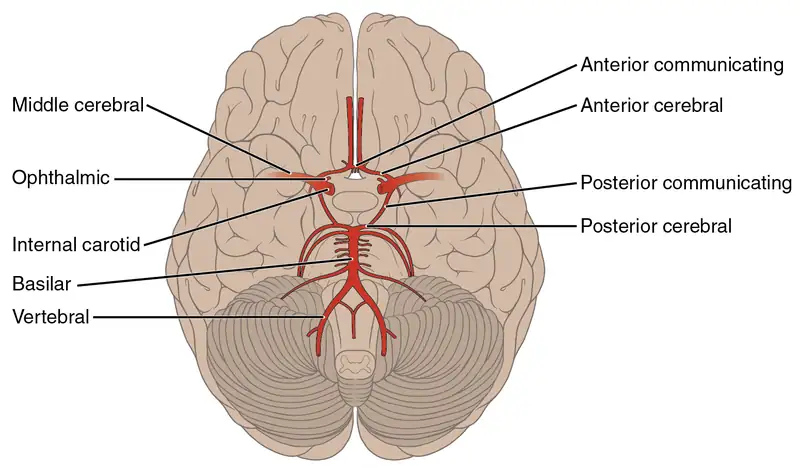
Table 20.6
| Aortic Arch Branches and Brain Circulation | |
|---|---|
| Vessel | Description |
| Brachiocephalic artery | Single vessel located on the right side of the body; the first vessel branching from the aortic arch; gives rise to the right subclavian artery and the right common carotid artery; supplies blood to the head, neck, upper limb, and wall of the thoracic region |
| Subclavian artery | The right subclavian artery arises from the brachiocephalic artery while the left subclavian artery arises from the aortic arch; gives rise to the internal thoracic, vertebral, and thyrocervical arteries; supplies blood to the arms, chest, shoulders, back, and central nervous system |
| Internal thoracic artery | Also called the mammary artery; arises from the subclavian artery; supplies blood to the thymus, pericardium of the heart, and anterior chest wall |
| Vertebral artery | Arises from the subclavian artery and passes through the vertebral foramen through the foramen magnum to the brain; joins with the internal carotid artery to form the arterial circle; supplies blood to the brain and spinal cord |
| Thyrocervical artery | Arises from the subclavian artery; supplies blood to the thyroid, the cervical region, the upper back, and shoulder |
| Common carotid artery | The right common carotid artery arises from the brachiocephalic artery and the left common carotid artery arises from the aortic arch; each gives rise to the external and internal carotid arteries; supplies the respective sides of the head and neck |
| External carotid artery | Arises from the common carotid artery; supplies blood to numerous structures within the face, lower jaw, neck, esophagus, and larynx |
| Internal carotid artery | Arises from the common carotid artery and begins with the carotid sinus; goes through the carotid canal of the temporal bone to the base of the brain; combines with the branches of the vertebral artery, forming the arterial circle; supplies blood to the brain |
| Arterial circle or circle of Willis | An anastomosis located at the base of the brain that ensures continual blood supply; formed from the branches of the internal carotid and vertebral arteries; supplies blood to the brain |
| Anterior cerebral artery | Arises from the internal carotid artery; supplies blood to the frontal lobe of the cerebrum |
| Middle cerebral artery | Another branch of the internal carotid artery; supplies blood to the temporal and parietal lobes of the cerebrum |
| Ophthalmic artery | Branch of the internal carotid artery; supplies blood to the eyes |
| Anterior communicating artery | An anastomosis of the right and left internal carotid arteries; supplies blood to the brain |
| Posterior communicating artery | Branches of the posterior cerebral artery that form part of the posterior portion of the arterial circle; supplies blood to the brain |
| Posterior cerebral artery | Branch of the basilar artery that forms a portion of the posterior segment of the arterial circle of Willis; supplies blood to the posterior portion of the cerebrum and brain stem |
| Basilar artery | Formed from the fusion of the two vertebral arteries; sends branches to the cerebellum, brain stem, and the posterior cerebral arteries; the main blood supply to the brain stem |
Thoracic Aorta and Major Branches¶
The thoracic aorta begins at the level of vertebra T5 and continues through to the diaphragm at the level of T12, initially traveling within the mediastinum to the left of the vertebral column. As it passes through the thoracic region, the thoracic aorta gives rise to several branches, which are collectively referred to as visceral branches and parietal branches (Figure 20.28). Those branches that supply blood primarily to visceral organs are known as the visceral branches and include the bronchial arteries, pericardial arteries, esophageal arteries, and the mediastinal arteries, each named after the tissues it supplies. Each bronchial artery (typically two on the left and one on the right) supplies systemic blood to the lungs and visceral pleura, in addition to the blood pumped to the lungs for oxygenation via the pulmonary circuit. The bronchial arteries follow the same path as the respiratory branches, beginning with the bronchi and ending with the bronchioles. There is considerable, but not total, intermingling of the systemic and pulmonary blood at anastomoses in the smaller branches of the lungs. This may sound incongruous—that is, the mixing of systemic arterial blood high in oxygen with the pulmonary arterial blood lower in oxygen—but the systemic vessels also deliver nutrients to the lung tissue just as they do elsewhere in the body. The mixed blood drains into typical pulmonary veins, whereas the bronchial artery branches remain separate and drain into bronchial veins described later. Each pericardial artery supplies blood to the pericardium, the esophageal artery provides blood to the esophagus, and the mediastinal artery provides blood to the mediastinum. The remaining thoracic aorta branches are collectively referred to as parietal branches or somatic branches, and include the intercostal and superior phrenic arteries. Each intercostal artery provides blood to the muscles of the thoracic cavity and vertebral column. The superior phrenic artery provides blood to the superior surface of the diaphragm. Table 20.7 lists the arteries of the thoracic region.
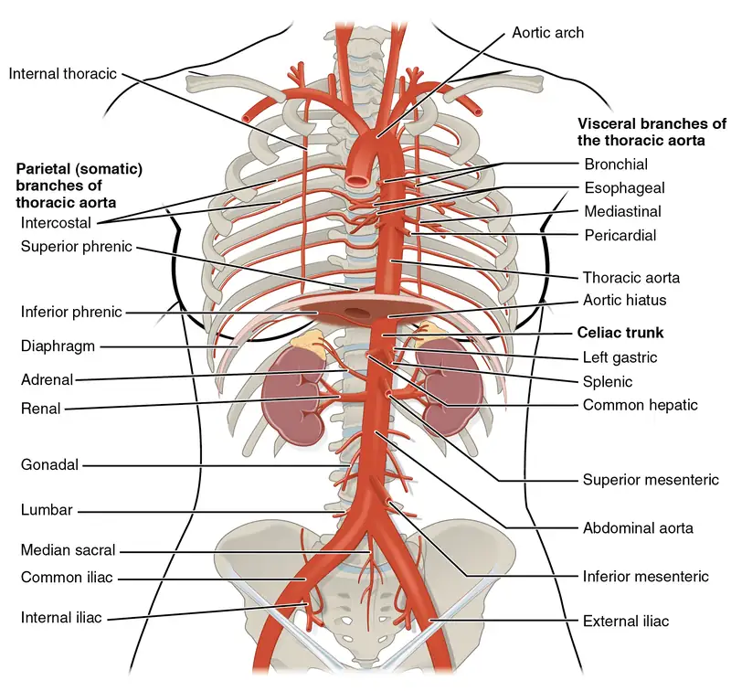
Table 20.7
| Arteries of the Thoracic Region | |
|---|---|
| Vessel | Description |
| Visceral branches | A group of arterial branches of the thoracic aorta; supplies blood to the viscera (i.e., organs) of the thorax |
| Bronchial artery | Systemic branch from the aorta that provides oxygenated blood to the lungs; this blood supply is in addition to the pulmonary circuit that brings blood for oxygenation |
| Pericardial artery | Branch of the thoracic aorta; supplies blood to the pericardium |
| Esophageal artery | Branch of the thoracic aorta; supplies blood to the esophagus |
| Mediastinal artery | Branch of the thoracic aorta; supplies blood to the mediastinum |
| Parietal branches | Also called somatic branches, a group of arterial branches of the thoracic aorta; include those that supply blood to the thoracic wall, vertebral column, and the superior surface of the diaphragm |
| Intercostal artery | Branch of the thoracic aorta; supplies blood to the muscles of the thoracic cavity and vertebral column |
| Superior phrenic artery | Branch of the thoracic aorta; supplies blood to the superior surface of the diaphragm |
Abdominal Aorta and Major Branches¶
After crossing through the diaphragm at the aortic hiatus, the thoracic aorta is called the abdominal aorta (see Figure 20.28). This vessel remains to the left of the vertebral column and is embedded in adipose tissue behind the peritoneal cavity. It formally ends at approximately the level of vertebra L4, where it bifurcates to form the common iliac arteries. Before this division, the abdominal aorta gives rise to several important branches. A single celiac trunk (artery) emerges and divides into the left gastric artery to supply blood to the stomach and esophagus, the splenic artery to supply blood to the spleen, and the common hepatic artery, which in turn gives rise to the hepatic artery proper to supply blood to the liver, the right gastric artery to supply blood to the stomach, the cystic artery to supply blood to the gall bladder, and several branches, one to supply blood to the duodenum and another to supply blood to the pancreas. Two additional single vessels arise from the abdominal aorta. These are the superior and inferior mesenteric arteries. The superior mesenteric artery arises approximately 2.5 cm after the celiac trunk and branches into several major vessels that supply blood to the small intestine (duodenum, jejunum, and ileum), the pancreas, and a majority of the large intestine. The inferior mesenteric artery supplies blood to the distal segment of the large intestine, including the rectum. It arises approximately 5 cm superior to the common iliac arteries.
In addition to these single branches, the abdominal aorta gives rise to several significant paired arteries along the way. These include the inferior phrenic arteries, the adrenal arteries, the renal arteries, the gonadal arteries, and the lumbar arteries. Each inferior phrenic artery is a counterpart of a superior phrenic artery and supplies blood to the inferior surface of the diaphragm. The adrenal artery supplies blood to the adrenal (suprarenal) glands and arises near the superior mesenteric artery. Each renal artery branches approximately 2.5 cm inferior to the superior mesenteric arteries and supplies a kidney. The right renal artery is longer than the left since the aorta lies to the left of the vertebral column and the vessel must travel a greater distance to reach its target. Renal arteries branch repeatedly to supply blood to the kidneys. Each gonadal artery supplies blood to the gonads, or reproductive organs, and is also described as either an ovarian artery or a testicular artery (internal spermatic), depending upon the sex of the individual. An ovarian artery supplies blood to an ovary, uterine (Fallopian) tube, and the uterus, and is located within the suspensory ligament of the uterus. It is considerably shorter than a testicular artery, which ultimately travels outside the body cavity to the testes, forming one component of the spermatic cord. The gonadal arteries arise inferior to the renal arteries and are generally retroperitoneal. The ovarian artery continues to the uterus where it forms an anastomosis with the uterine artery that supplies blood to the uterus. Both the uterine arteries and vaginal arteries, which distribute blood to the vagina, are branches of the internal iliac artery. The four paired lumbar arteries are the counterparts of the intercostal arteries and supply blood to the lumbar region, the abdominal wall, and the spinal cord. In some instances, a fifth pair of lumbar arteries emerges from the median sacral artery.
The aorta divides at approximately the level of vertebra L4 into a left and a right common iliac artery but continues as a small vessel, the median sacral artery, into the sacrum. The common iliac arteries provide blood to the pelvic region and ultimately to the lower limbs. They split into external and internal iliac arteries approximately at the level of the lumbar-sacral articulation. Each internal iliac artery sends branches to the urinary bladder, the walls of the pelvis, the external genitalia, and the medial portion of the femoral region. In females, they also provide blood to the uterus and vagina. The much larger external iliac artery supplies blood to each of the lower limbs. Figure 20.29 shows the distribution of the major branches of the aorta into the thoracic and abdominal regions. Figure 20.30 shows the distribution of the major branches of the common iliac arteries. Table 20.8 summarizes the major branches of the abdominal aorta.
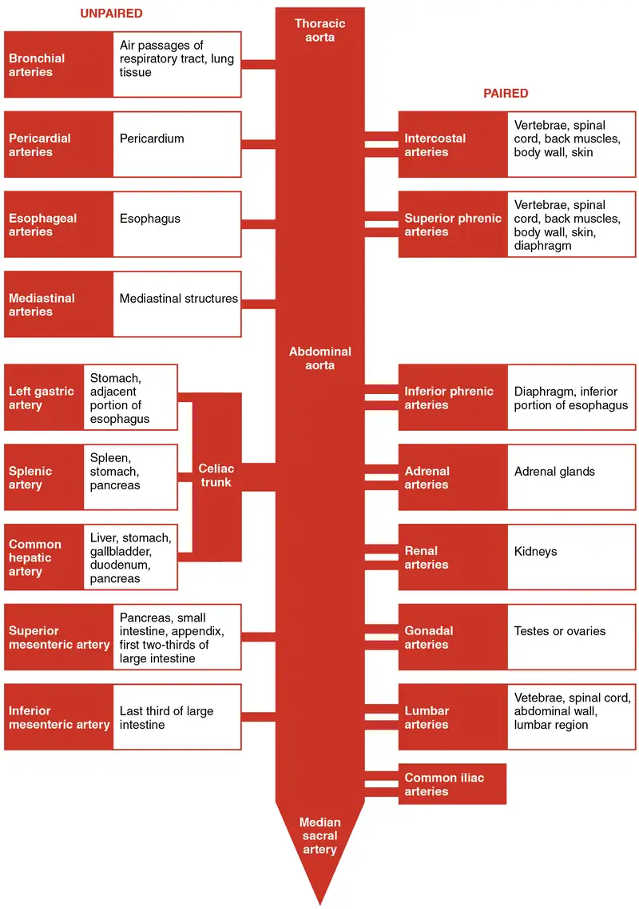
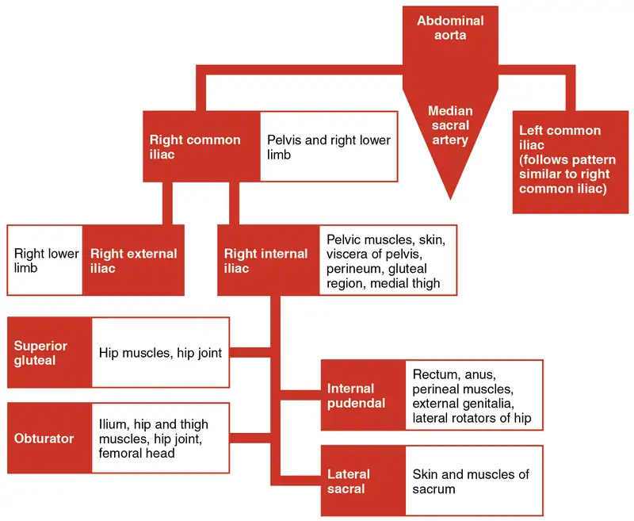
Table 20.8
| Vessels of the Abdominal Aorta | |
|---|---|
| Vessel | Description |
| Celiac trunk | Also called the celiac artery; a major branch of the abdominal aorta; gives rise to the left gastric artery, the splenic artery, and the common hepatic artery that forms the hepatic artery to the liver, the right gastric artery to the stomach, and the cystic artery to the gall bladder |
| Left gastric artery | Branch of the celiac trunk; supplies blood to the stomach |
| Splenic artery | Branch of the celiac trunk; supplies blood to the spleen |
| Common hepatic artery | Branch of the celiac trunk that forms the hepatic artery, the right gastric artery, and the cystic artery |
| Hepatic artery proper | Branch of the common hepatic artery; supplies systemic blood to the liver |
| Right gastric artery | Branch of the common hepatic artery; supplies blood to the stomach |
| Cystic artery | Branch of the common hepatic artery; supplies blood to the gall bladder |
| Superior mesenteric artery | Branch of the abdominal aorta; supplies blood to the small intestine (duodenum, jejunum, and ileum), the pancreas, and a majority of the large intestine |
| Inferior mesenteric artery | Branch of the abdominal aorta; supplies blood to the distal segment of the large intestine and rectum |
| Inferior phrenic arteries | Branches of the abdominal aorta; supply blood to the inferior surface of the diaphragm |
| Adrenal artery | Branch of the abdominal aorta; supplies blood to the adrenal (suprarenal) glands |
| Renal artery | Branch of the abdominal aorta; supplies each kidney |
| Gonadal artery | Branch of the abdominal aorta; supplies blood to the gonads or reproductive organs; also described as ovarian arteries or testicular arteries, depending upon the sex of the individual |
| Ovarian artery | Branch of the abdominal aorta; supplies blood to ovary, uterine (Fallopian) tube, and uterus |
| Testicular artery | Branch of the abdominal aorta; ultimately travels outside the body cavity to the testes and forms one component of the spermatic cord |
| Lumbar arteries | Branches of the abdominal aorta; supply blood to the lumbar region, the abdominal wall, and spinal cord |
| Common iliac artery | Branch of the aorta that leads to the internal and external iliac arteries |
| Median sacral artery | Continuation of the aorta into the sacrum |
| Internal iliac artery | Branch from the common iliac arteries; supplies blood to the urinary bladder, walls of the pelvis, external genitalia, and the medial portion of the femoral region; in females, also provides blood to the uterus and vagina |
| External iliac artery | Branch of the common iliac artery that leaves the body cavity and becomes a femoral artery; supplies blood to the lower limbs |
Arteries Serving the Upper Limbs¶
As the subclavian artery exits the thorax into the axillary region, it is renamed the axillary artery. Although it does branch and supply blood to the region near the head of the humerus (via the humeral circumflex arteries), the majority of the vessel continues into the upper arm, or brachium, and becomes the brachial artery (Figure 20.31). The brachial artery supplies blood to much of the brachial region and divides at the elbow into several smaller branches, including the deep brachial arteries, which provide blood to the posterior surface of the arm, and the ulnar collateral arteries, which supply blood to the region of the elbow. As the brachial artery approaches the coronoid fossa, it bifurcates into the radial and ulnar arteries, which continue into the forearm, or antebrachium. The radial artery and ulnar artery parallel their namesake bones, giving off smaller branches until they reach the wrist, or carpal region. At this level, they fuse to form the superficial and deep palmar arches that supply blood to the hand, as well as the digital arteries that supply blood to the digits. Figure 20.32 shows the distribution of systemic arteries from the heart into the upper limb. Table 20.9 summarizes the arteries serving the upper limbs.
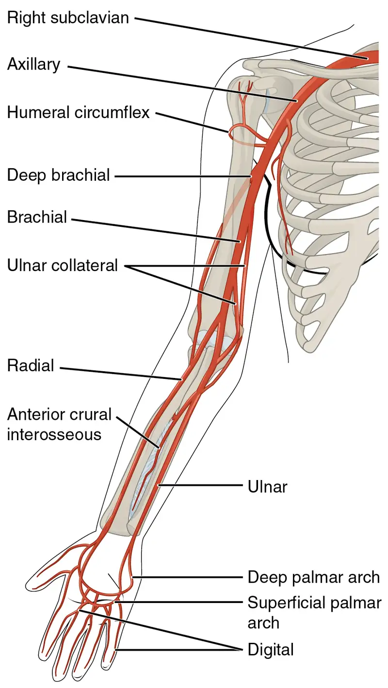
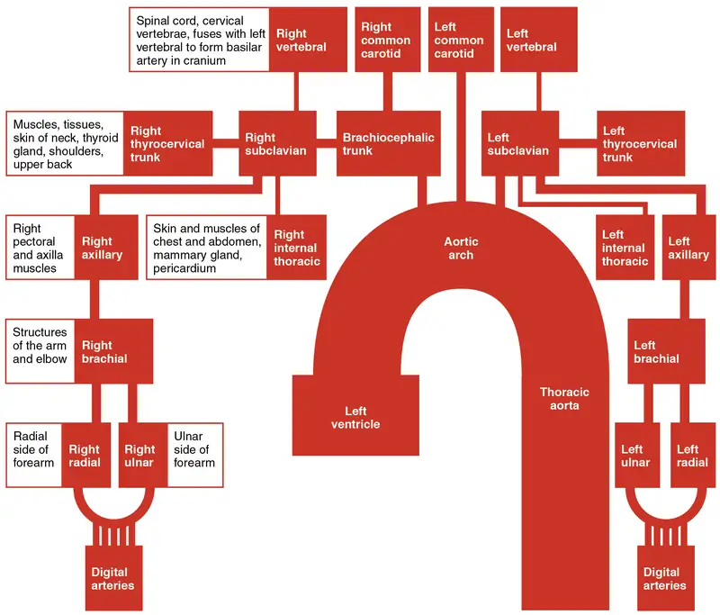
Table 20.9
| Arteries Serving the Upper Limbs | |
|---|---|
| Vessel | Description |
| Axillary artery | Continuation of the subclavian artery as it penetrates the body wall and enters the axillary region; supplies blood to the region near the head of the humerus (humeral circumflex arteries); the majority of the vessel continues into the brachium and becomes the brachial artery |
| Brachial artery | Continuation of the axillary artery in the brachium; supplies blood to much of the brachial region; gives off several smaller branches that provide blood to the posterior surface of the arm in the region of the elbow; bifurcates into the radial and ulnar arteries at the coronoid fossa |
| Radial artery | Formed at the bifurcation of the brachial artery; parallels the radius; gives off smaller branches until it reaches the carpal region where it fuses with the ulnar artery to form the superficial and deep palmar arches; supplies blood to the lower arm and carpal region |
| Ulnar artery | Formed at the bifurcation of the brachial artery; parallels the ulna; gives off smaller branches until it reaches the carpal region where it fuses with the radial artery to form the superficial and deep palmar arches; supplies blood to the lower arm and carpal region |
| Palmar arches (superficial and deep) | Formed from anastomosis of the radial and ulnar arteries; supply blood to the hand and digital arteries |
| Digital arteries | Formed from the superficial and deep palmar arches; supply blood to the digits |
Arteries Serving the Lower Limbs¶
The external iliac artery exits the body cavity and enters the femoral region of the lower leg (Figure 20.33). As it passes through the body wall, it is renamed the femoral artery. It gives off several smaller branches as well as the lateral deep femoral artery that in turn gives rise to a lateral circumflex artery. These arteries supply blood to the deep muscles of the thigh as well as ventral and lateral regions of the integument. The femoral artery also gives rise to the genicular artery, which provides blood to the region of the knee. As the femoral artery passes posterior to the knee near the popliteal fossa, it is called the popliteal artery. The popliteal artery branches into the anterior and posterior tibial arteries.
The anterior tibial artery is located between the tibia and fibula, and supplies blood to the muscles and integument of the anterior tibial region. Upon reaching the tarsal region, it becomes the dorsalis pedis artery, which branches repeatedly and provides blood to the tarsal and dorsal regions of the foot. The posterior tibial artery provides blood to the muscles and integument on the posterior surface of the tibial region. The fibular or peroneal artery branches from the posterior tibial artery. It bifurcates and becomes the medial plantar artery and lateral plantar artery, providing blood to the plantar surfaces. There is an anastomosis with the dorsalis pedis artery, and the medial and lateral plantar arteries form two arches called the dorsal arch (also called the arcuate arch) and the plantar arch, which provide blood to the remainder of the foot and toes. Figure 20.34 shows the distribution of the major systemic arteries in the lower limb. Table 20.10 summarizes the major systemic arteries discussed in the text.
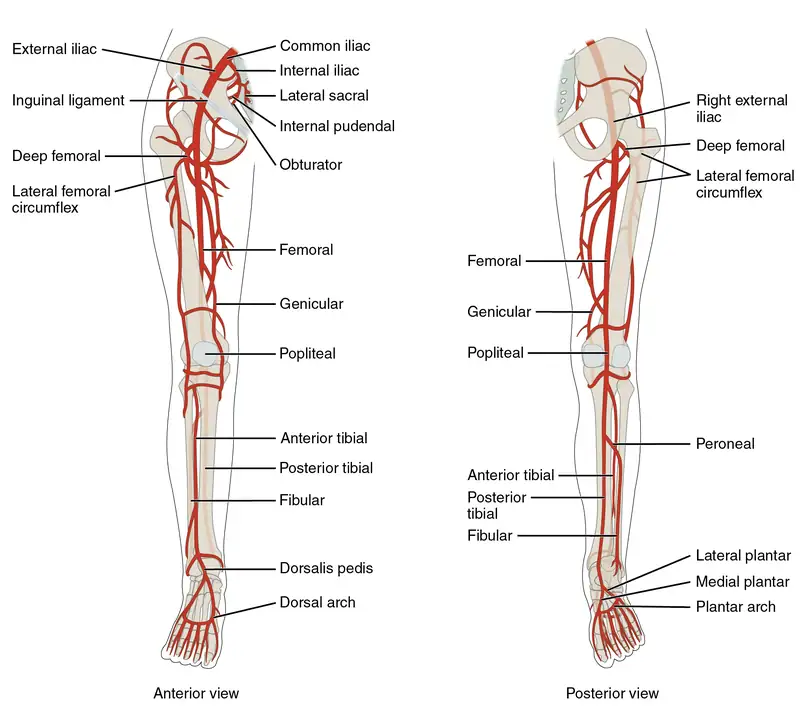
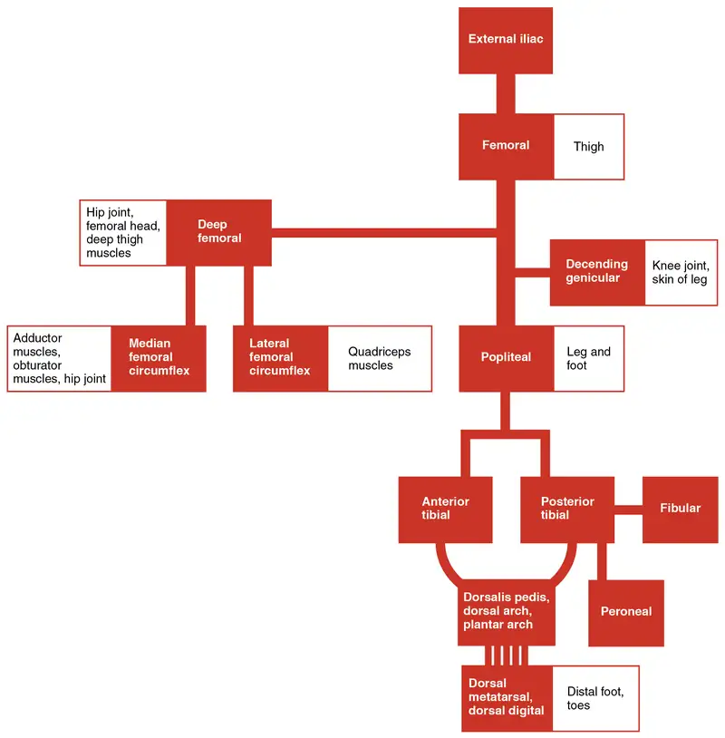
Table 20.10
| Arteries Serving the Lower Limbs | |
|---|---|
| Vessel | Description |
| Femoral artery | Continuation of the external iliac artery after it passes through the body cavity; divides into several smaller branches, the lateral deep femoral artery, and the genicular artery; becomes the popliteal artery as it passes posterior to the knee |
| Deep femoral artery | Branch of the femoral artery; gives rise to the lateral circumflex arteries |
| Lateral circumflex artery | Branch of the deep femoral artery; supplies blood to the deep muscles of the thigh and the ventral and lateral regions of the integument |
| Genicular artery | Branch of the femoral artery; supplies blood to the region of the knee |
| Popliteal artery | Continuation of the femoral artery posterior to the knee; branches into the anterior and posterior tibial arteries |
| Anterior tibial artery | Branches from the popliteal artery; supplies blood to the anterior tibial region; becomes the dorsalis pedis artery |
| Dorsalis pedis artery | Forms from the anterior tibial artery; branches repeatedly to supply blood to the tarsal and dorsal regions of the foot |
| Posterior tibial artery | Branches from the popliteal artery and gives rise to the fibular or peroneal artery; supplies blood to the posterior tibial region |
| Medial plantar artery | Arises from the bifurcation of the posterior tibial arteries; supplies blood to the medial plantar surfaces of the foot |
| Lateral plantar artery | Arises from the bifurcation of the posterior tibial arteries; supplies blood to the lateral plantar surfaces of the foot |
| Dorsal or arcuate arch | Formed from the anastomosis of the dorsalis pedis artery and the medial and plantar arteries; branches supply the distal portions of the foot and digits |
| Plantar arch | Formed from the anastomosis of the dorsalis pedis artery and the medial and plantar arteries; branches supply the distal portions of the foot and digits |
Overview of Systemic Veins¶
Systemic veins return blood to the right atrium. Since the blood has already passed through the systemic capillaries, it will be relatively low in oxygen concentration. In many cases, there will be veins draining organs and regions of the body with the same name as the arteries that supplied these regions and the two often parallel one another. This is often described as a “complementary” pattern. However, there is a great deal more variability in the venous circulation than normally occurs in the arteries. For the sake of brevity and clarity, this text will discuss only the most commonly encountered patterns. However, keep this variation in mind when you move from the classroom to clinical practice.
In both the neck and limb regions, there are often both superficial and deeper levels of veins. The deeper veins generally correspond to the complementary arteries. The superficial veins do not normally have direct arterial counterparts, but in addition to returning blood, they also make contributions to the maintenance of body temperature. When the ambient temperature is warm, more blood is diverted to the superficial veins where heat can be more easily dissipated to the environment. In colder weather, there is more constriction of the superficial veins and blood is diverted deeper where the body can retain more of the heat.
The “Voyage of Discovery” analogy and stick drawings mentioned earlier remain valid techniques for the study of systemic veins, but veins present a more difficult challenge because there are numerous anastomoses and multiple branches. It is like following a river with many tributaries and channels, several of which interconnect. Tracing blood flow through arteries follows the current in the direction of blood flow, so that we move from the heart through the large arteries and into the smaller arteries to the capillaries. From the capillaries, we move into the smallest veins and follow the direction of blood flow into larger veins and back to the heart. Figure 20.35 outlines the path of the major systemic veins.
Interactive
Visit this site for a brief online summary of the veins.
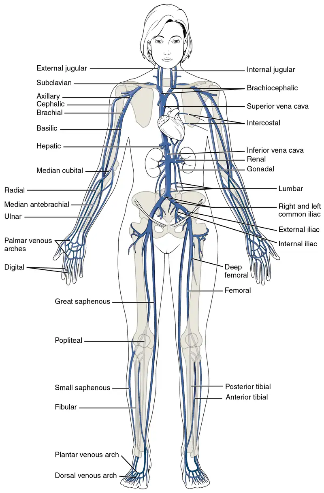
The right atrium receives all of the systemic venous return. Most of the blood flows into either the superior vena cava or inferior vena cava. If you draw an imaginary line at the level of the diaphragm, systemic venous circulation from above that line will generally flow into the superior vena cava; this includes blood from the head, neck, chest, shoulders, and upper limbs. The exception to this is that most venous blood flow from the coronary veins flows directly into the coronary sinus and from there directly into the right atrium. Beneath the diaphragm, systemic venous flow enters the inferior vena cava, that is, blood from the abdominal and pelvic regions and the lower limbs.
The Superior Vena Cava¶
The superior vena cava drains most of the body superior to the diaphragm (Figure 20.36). On both the left and right sides, the subclavian vein forms when the axillary vein passes through the body wall from the axillary region. It fuses with the external and internal jugular veins from the head and neck to form the brachiocephalic vein. Each vertebral vein also flows into the brachiocephalic vein close to this fusion. These veins arise from the base of the brain and the cervical region of the spinal cord, and flow largely through the intervertebral foramina in the cervical vertebrae. They are the counterparts of the vertebral arteries. Each internal thoracic vein, also known as an internal mammary vein, drains the anterior surface of the chest wall and flows into the brachiocephalic vein.
The remainder of the blood supply from the thorax drains into the azygos vein. Each intercostal vein drains muscles of the thoracic wall, each esophageal vein delivers blood from the inferior portions of the esophagus, each bronchial vein drains the systemic circulation from the lungs, and several smaller veins drain the mediastinal region. Bronchial veins carry approximately 13 percent of the blood that flows into the bronchial arteries; the remainder intermingles with the pulmonary circulation and returns to the heart via the pulmonary veins. These veins flow into the azygos vein, and with the smaller hemiazygos vein (hemi- = “half”) on the left of the vertebral column, drain blood from the thoracic region. The hemiazygos vein does not drain directly into the superior vena cava but enters the brachiocephalic vein via the superior intercostal vein.
The azygos vein passes through the diaphragm from the thoracic cavity on the right side of the vertebral column and begins in the lumbar region of the thoracic cavity. It flows into the superior vena cava at approximately the level of T2, making a significant contribution to the flow of blood. It combines with the two large left and right brachiocephalic veins to form the superior vena cava.
Table 20.11 summarizes the veins of the thoracic region that flow into the superior vena cava.
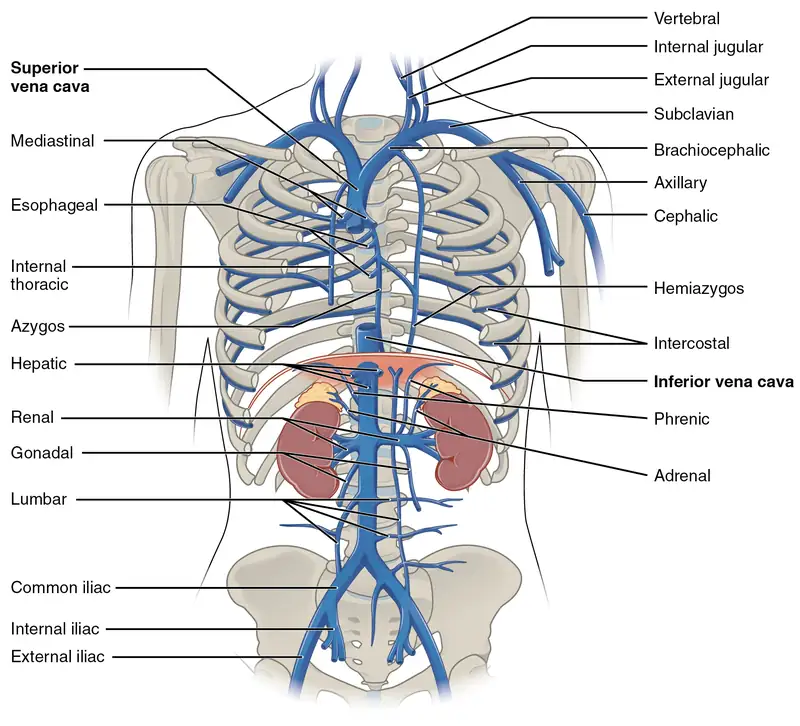
Table 20.11
| Veins of the Thoracic Region | |
|---|---|
| Vessel | Description |
| Superior vena cava | Large systemic vein; drains blood from most areas superior to the diaphragm; empties into the right atrium |
| Subclavian vein | Located deep in the thoracic cavity; formed by the axillary vein as it enters the thoracic cavity from the axillary region; drains the axillary and smaller local veins near the scapular region and leads to the brachiocephalic vein |
| Brachiocephalic veins | Pair of veins that form from a fusion of the external and internal jugular veins and the subclavian vein; subclavian, external and internal jugulars, vertebral, and internal thoracic veins flow into it; drain the upper thoracic region and lead to the superior vena cava |
| Vertebral vein | Arises from the base of the brain and the cervical region of the spinal cord; passes through the intervertebral foramina in the cervical vertebrae; drains smaller veins from the cranium, spinal cord, and vertebrae, and leads to the brachiocephalic vein; counterpart of the vertebral artery |
| Internal thoracic veins | Also called internal mammary veins; drain the anterior surface of the chest wall and lead to the brachiocephalic vein |
| Intercostal vein | Drains the muscles of the thoracic wall and leads to the azygos vein |
| Esophageal vein | Drains the inferior portions of the esophagus and leads to the azygos vein |
| Bronchial vein | Drains the systemic circulation from the lungs and leads to the azygos vein |
| Azygos vein | Originates in the lumbar region and passes through the diaphragm into the thoracic cavity on the right side of the vertebral column; drains blood from the intercostal veins, esophageal veins, bronchial veins, and other veins draining the mediastinal region, and leads to the superior vena cava |
| Hemiazygos vein | Smaller vein complementary to the azygos vein; drains the esophageal veins from the esophagus and the left intercostal veins, and leads to the brachiocephalic vein via the superior intercostal vein |
Veins of the Head and Neck¶
Blood from the brain and the superficial facial vein flow into each internal jugular vein (Figure 20.37). Blood from the more superficial portions of the head, scalp, and cranial regions, including the temporal vein and maxillary vein, flow into each external jugular vein. Although the external and internal jugular veins are separate vessels, there are anastomoses between them close to the thoracic region. Blood from the external jugular vein empties into the subclavian vein. Table 20.12 summarizes the major veins of the head and neck.
Table 20.12
| Major Veins of the Head and Neck | |
|---|---|
| Vessel | Description |
| Internal jugular vein | Parallel to the common carotid artery, which is more or less its counterpart, and passes through the jugular foramen and canal; primarily drains blood from the brain, receives the superficial facial vein, and empties into the subclavian vein |
| Temporal vein | Drains blood from the temporal region and flows into the external jugular vein |
| Maxillary vein | Drains blood from the maxillary region and flows into the external jugular vein |
| External jugular vein | Drains blood from the more superficial portions of the head, scalp, and cranial regions, and leads to the subclavian vein |
Venous Drainage of the Brain¶
Circulation to the brain is both critical and complex (see Figure 20.37). Many smaller veins of the brain stem and the superficial veins of the cerebrum lead to larger vessels referred to as intracranial sinuses. These include the superior and inferior sagittal sinuses, straight sinus, cavernous sinuses, left and right sinuses, the petrosal sinuses, and the occipital sinuses. Ultimately, sinuses will lead back to either the inferior jugular vein or vertebral vein.
Most of the veins on the superior surface of the cerebrum flow into the largest of the sinuses, the superior sagittal sinus. It is located midsagittally between the meningeal and periosteal layers of the dura mater within the falx cerebri and, at first glance in images or models, can be mistaken for the subarachnoid space. Most reabsorption of cerebrospinal fluid occurs via the chorionic villi (arachnoid granulations) into the superior sagittal sinus. Blood from most of the smaller vessels originating from the inferior cerebral veins flows into the great cerebral vein and into the straight sinus. Other cerebral veins and those from the eye socket flow into the cavernous sinus, which flows into the petrosal sinus and then into the internal jugular vein. The occipital sinus, sagittal sinus, and straight sinuses all flow into the left and right transverse sinuses near the lambdoid suture. The transverse sinuses in turn flow into the sigmoid sinuses that pass through the jugular foramen and into the internal jugular vein. The internal jugular vein flows parallel to the common carotid artery and is more or less its counterpart. It empties into the brachiocephalic vein. The veins draining the cervical vertebrae and the posterior surface of the skull, including some blood from the occipital sinus, flow into the vertebral veins. These parallel the vertebral arteries and travel through the transverse foramina of the cervical vertebrae. The vertebral veins also flow into the brachiocephalic veins. Table 20.13 summarizes the major veins of the brain.
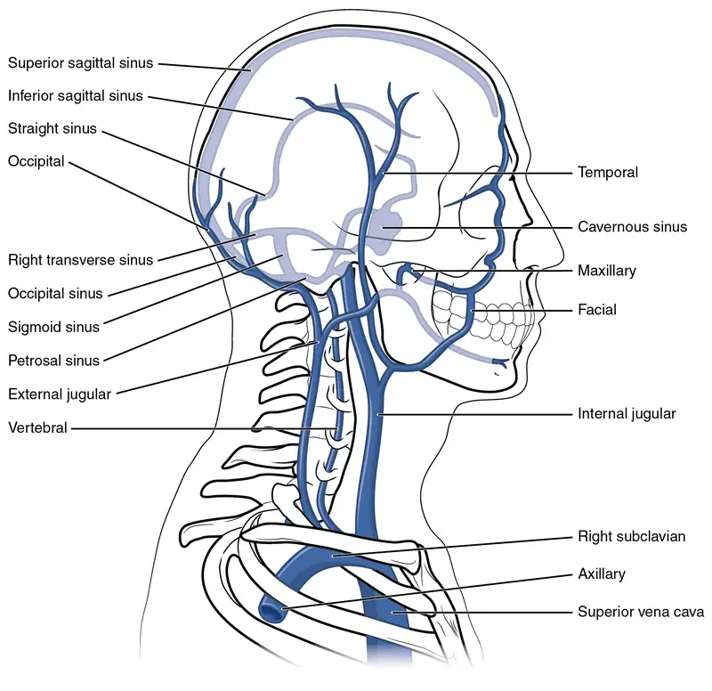
Table 20.13
| Major Veins of the Brain | |
|---|---|
| Vessel | Description |
| Superior sagittal sinus | Enlarged vein located midsagittally between the meningeal and periosteal layers of the dura mater within the falx cerebri; receives most of the blood drained from the superior surface of the cerebrum and leads to the inferior jugular vein and the vertebral vein |
| Great cerebral vein | Receives most of the smaller vessels from the inferior cerebral veins and leads to the straight sinus |
| Straight sinus | Enlarged vein that drains blood from the brain; receives most of the blood from the great cerebral vein and leads to the left or right transverse sinus |
| Cavernous sinus | Enlarged vein that receives blood from most of the other cerebral veins and the eye socket, and leads to the petrosal sinus |
| Petrosal sinus | Enlarged vein that receives blood from the cavernous sinus and leads into the internal jugular veins |
| Occipital sinus | Enlarged vein that drains the occipital region near the falx cerebelli and leads to the left and right transverse sinuses, and also the vertebral veins |
| Transverse sinuses | Pair of enlarged veins near the lambdoid suture that drains the occipital, sagittal, and straight sinuses, and leads to the sigmoid sinuses |
| Sigmoid sinuses | Enlarged vein that receives blood from the transverse sinuses and leads through the jugular foramen to the internal jugular vein |
Veins Draining the Upper Limbs¶
The digital veins in the fingers come together in the hand to form the palmar venous arches (Figure 20.38). From here, the veins come together to form the radial vein, the ulnar vein, and the median antebrachial vein. The radial vein and the ulnar vein parallel the bones of the forearm and join together at the antebrachium to form the brachial vein, a deep vein that flows into the axillary vein in the brachium.
The median antebrachial vein parallels the ulnar vein, is more medial in location, and joins the basilic vein in the forearm. As the basilic vein reaches the antecubital region, it gives off a branch called the median cubital vein that crosses at an angle to join the cephalic vein. The median cubital vein is the most common site for drawing venous blood in humans. The basilic vein continues through the arm medially and superficially to the axillary vein.
The cephalic vein begins in the antebrachium and drains blood from the superficial surface of the arm into the axillary vein. It is extremely superficial and easily seen along the surface of the biceps brachii muscle in individuals with good muscle tone and in those without excessive subcutaneous adipose tissue in the arms.
The subscapular vein drains blood from the subscapular region and joins the cephalic vein to form the axillary vein. As it passes through the body wall and enters the thorax, the axillary vein becomes the subclavian vein.
Many of the larger veins of the thoracic and abdominal region and upper limb are further represented in the flow chart in Figure 20.39. Table 20.14 summarizes the veins of the upper limbs.
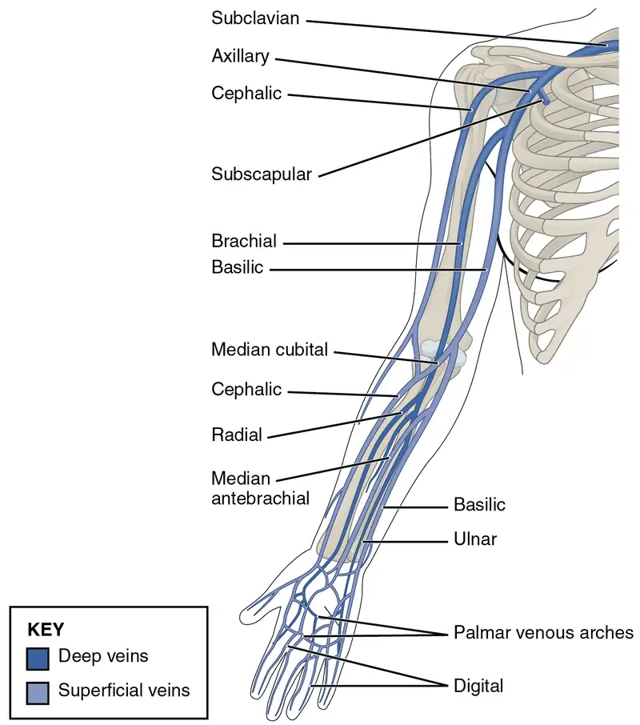
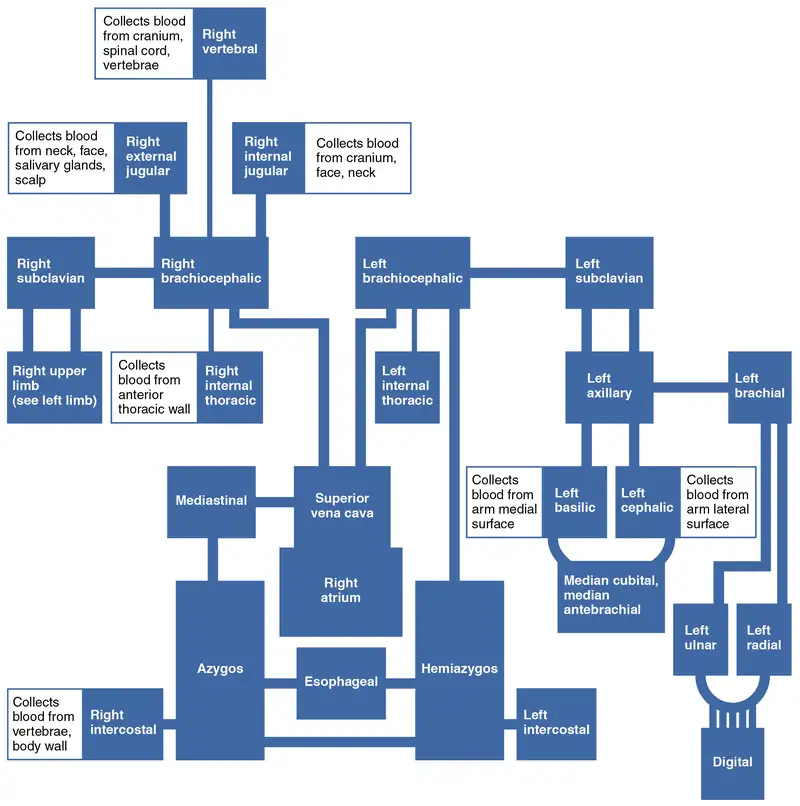
Table 20.14
| Veins of the Upper Limbs | |
|---|---|
| Vessel | Description |
| Digital veins | Drain the digits and lead to the palmar arches of the hand and dorsal venous arch of the foot |
| Palmar venous arches | Drain the hand and digits, and lead to the radial vein, ulnar veins, and the median antebrachial vein |
| Radial vein | Vein that parallels the radius and radial artery; arises from the palmar venous arches and leads to the brachial vein |
| Ulnar vein | Vein that parallels the ulna and ulnar artery; arises from the palmar venous arches and leads to the brachial vein |
| Brachial vein | Deeper vein of the arm that forms from the radial and ulnar veins in the lower arm; leads to the axillary vein |
| Median antebrachial vein | Vein that parallels the ulnar vein but is more medial in location; intertwines with the palmar venous arches; leads to the basilic vein |
| Basilic vein | Superficial vein of the arm that arises from the median antebrachial vein, intersects with the median cubital vein, parallels the ulnar vein, and continues into the upper arm; along with the brachial vein, it leads to the axillary vein |
| Median cubital vein | Superficial vessel located in the antecubital region that links the cephalic vein to the basilic vein in the form of a v; a frequent site from which to draw blood |
| Cephalic vein | Superficial vessel in the upper arm; leads to the axillary vein |
| Subscapular vein | Drains blood from the subscapular region and leads to the axillary vein |
| Axillary vein | The major vein in the axillary region; drains the upper limb and becomes the subclavian vein |
The Inferior Vena Cava¶
Other than the small amount of blood drained by the azygos and hemiazygos veins, most of the blood inferior to the diaphragm drains into the inferior vena cava before it is returned to the heart (see Figure 20.36). Lying just beneath the parietal peritoneum in the abdominal cavity, the inferior vena cava parallels the abdominal aorta, where it can receive blood from abdominal veins. The lumbar portions of the abdominal wall and spinal cord are drained by a series of lumbar veins, usually four on each side. The ascending lumbar veins drain into either the azygos vein on the right or the hemiazygos vein on the left, and return to the superior vena cava. The remaining lumbar veins drain directly into the inferior vena cava.
Blood supply from the kidneys flows into each renal vein, normally the largest veins entering the inferior vena cava. A number of other, smaller veins empty into the left renal vein. Each adrenal vein drains the adrenal or suprarenal glands located immediately superior to the kidneys. The right adrenal vein enters the inferior vena cava directly, whereas the left adrenal vein enters the left renal vein.
From the male reproductive organs, each testicular vein flows from the scrotum, forming a portion of the spermatic cord. Each ovarian vein drains an ovary in females. Each of these veins is generically called a gonadal vein. The right gonadal vein empties directly into the inferior vena cava, and the left gonadal vein empties into the left renal vein.
Each side of the diaphragm drains into a phrenic vein; the right phrenic vein empties directly into the inferior vena cava, whereas the left phrenic vein empties into the left renal vein. Blood supply from the liver drains into each hepatic vein and directly into the inferior vena cava. Since the inferior vena cava lies primarily to the right of the vertebral column and aorta, the left renal vein is longer, as are the left phrenic, adrenal, and gonadal veins. The longer length of the left renal vein makes the left kidney the primary target of surgeons removing this organ for donation. Figure 20.40 provides a flow chart of the veins flowing into the inferior vena cava. Table 20.15 summarizes the major veins of the abdominal region.
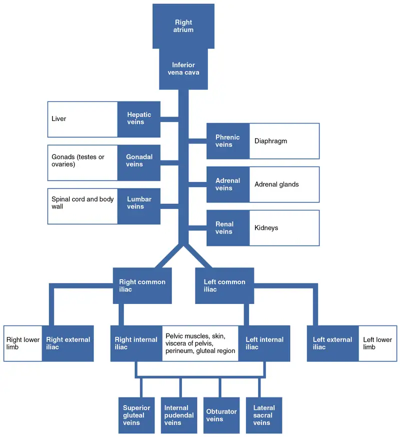
Table 20.15
| Major Veins of the Abdominal Region | |
|---|---|
| Vessel | Description |
| Inferior vena cava | Large systemic vein that drains blood from areas largely inferior to the diaphragm; empties into the right atrium |
| Lumbar veins | Series of veins that drain the lumbar portion of the abdominal wall and spinal cord; the ascending lumbar veins drain into the azygos vein on the right or the hemiazygos vein on the left; the remaining lumbar veins drain directly into the inferior vena cava |
| Renal vein | Largest vein entering the inferior vena cava; drains the kidneys and flows into the inferior vena cava |
| Adrenal vein | Drains the adrenal or suprarenal; the right adrenal vein enters the inferior vena cava directly and the left adrenal vein enters the left renal vein |
| Testicular vein | Drains the testes and forms part of the spermatic cord; the right testicular vein empties directly into the inferior vena cava and the left testicular vein empties into the left renal vein |
| Ovarian vein | Drains the ovary; the right ovarian vein empties directly into the inferior vena cava and the left ovarian vein empties into the left renal vein |
| Gonadal vein | Generic term for a vein draining a reproductive organ; may be either an ovarian vein or a testicular vein, depending on the sex of the individual |
| Phrenic vein | Drains the diaphragm; the right phrenic vein flows into the inferior vena cava and the left phrenic vein empties into the left renal vein |
| Hepatic vein | Drains systemic blood from the liver and flows into the inferior vena cava |
Veins Draining the Lower Limbs¶
The superior surface of the foot drains into the digital veins, and the inferior surface drains into the plantar veins, which flow into a complex series of anastomoses in the feet and ankles, including the dorsal venous arch and the plantar venous arch (Figure 20.41). From the dorsal venous arch, blood supply drains into the anterior and posterior tibial veins. The anterior tibial vein drains the area near the tibialis anterior muscle and combines with the posterior tibial vein and the fibular vein to form the popliteal vein. The posterior tibial vein drains the posterior surface of the tibia and joins the popliteal vein. The fibular vein drains the muscles and integument in proximity to the fibula and also joins the popliteal vein. The small saphenous vein located on the lateral surface of the leg drains blood from the superficial regions of the lower leg and foot, and flows into to the popliteal vein. As the popliteal vein passes behind the knee in the popliteal region, it becomes the femoral vein. It is palpable in patients without excessive adipose tissue.
Close to the body wall, the great saphenous vein, the deep femoral vein, and the femoral circumflex vein drain into the femoral vein. The great saphenous vein is a prominent surface vessel located on the medial surface of the leg and thigh that collects blood from the superficial portions of these areas. The deep femoral vein, as the name suggests, drains blood from the deeper portions of the thigh. The femoral circumflex vein forms a loop around the femur just inferior to the trochanters and drains blood from the areas in proximity to the head and neck of the femur.
As the femoral vein penetrates the body wall from the femoral portion of the upper limb, it becomes the external iliac vein, a large vein that drains blood from the leg to the common iliac vein. The pelvic organs and integument drain into the internal iliac vein, which forms from several smaller veins in the region, including the umbilical veins that run on either side of the bladder. The external and internal iliac veins combine near the inferior portion of the sacroiliac joint to form the common iliac vein. In addition to blood supply from the external and internal iliac veins, the middle sacral vein drains the sacral region into the common iliac vein. Similar to the common iliac arteries, the common iliac veins come together at the level of L5 to form the inferior vena cava.
Figure 20.42 is a flow chart of veins flowing into the lower limb. Table 20.16 summarizes the major veins of the lower limbs.
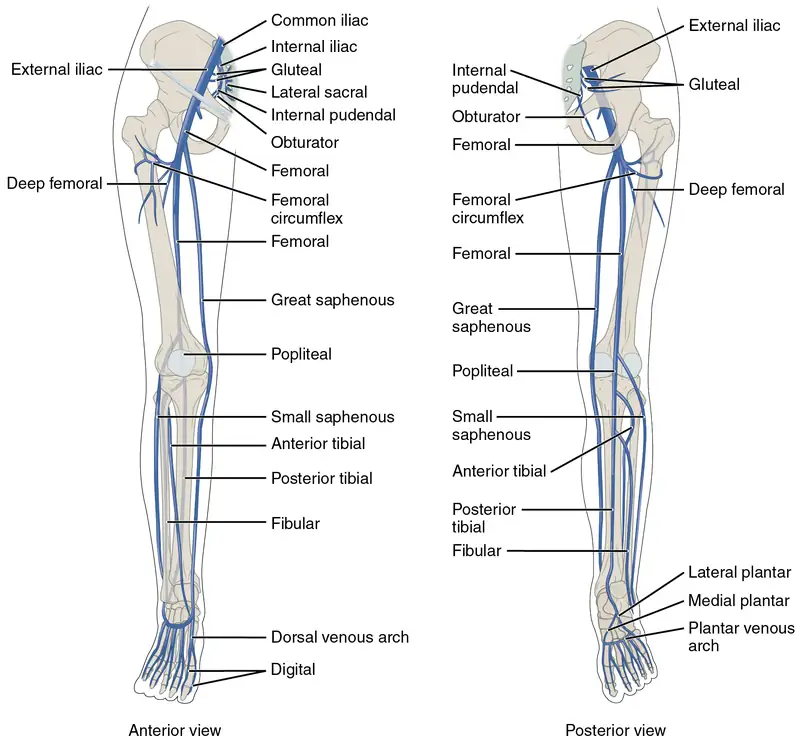
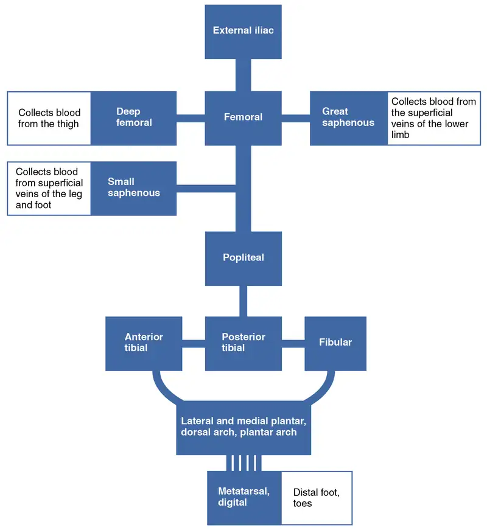
Table 20.16
| Veins of the Lower Limbs | |
|---|---|
| Vessel | Description |
| Plantar veins | Drain the foot and flow into the plantar venous arch |
| Dorsal venous arch | Drains blood from digital veins and vessels on the superior surface of the foot |
| Plantar venous arch | Formed from the plantar veins; flows into the anterior and posterior tibial veins through anastomoses |
| Anterior tibial vein | Formed from the dorsal venous arch; drains the area near the tibialis anterior muscle and flows into the popliteal vein |
| Posterior tibial vein | Formed from the dorsal venous arch; drains the area near the posterior surface of the tibia and flows into the popliteal vein |
| Fibular vein | Drains the muscles and integument near the fibula and flows into the popliteal vein |
| Small saphenous vein | Located on the lateral surface of the leg; drains blood from the superficial regions of the lower leg and foot, and flows into the popliteal vein |
| Popliteal vein | Drains the region behind the knee and forms from the fusion of the fibular, anterior, and posterior tibial veins; flows into the femoral vein |
| Great saphenous vein | Prominent surface vessel located on the medial surface of the leg and thigh; drains the superficial portions of these areas and flows into the femoral vein |
| Deep femoral vein | Drains blood from the deeper portions of the thigh and flows into the femoral vein |
| Femoral circumflex vein | Forms a loop around the femur just inferior to the trochanters; drains blood from the areas around the head and neck of the femur; flows into the femoral vein |
| Femoral vein | Drains the upper leg; receives blood from the great saphenous vein, the deep femoral vein, and the femoral circumflex vein; becomes the external iliac vein when it crosses the body wall |
| External iliac vein | Formed when the femoral vein passes into the body cavity; drains the legs and flows into the common iliac vein |
| Internal iliac vein | Drains the pelvic organs and integument; formed from several smaller veins in the region; flows into the common iliac vein |
| Middle sacral vein | Drains the sacral region and flows into the left common iliac vein |
| Common iliac vein | Flows into the inferior vena cava at the level of L5; the left common iliac vein drains the sacral region; formed from the union of the external and internal iliac veins near the inferior portion of the sacroiliac joint |
Hepatic Portal System¶
The liver is a complex biochemical processing plant. It packages nutrients absorbed by the digestive system; produces plasma proteins, clotting factors, and bile; and disposes of worn-out cell components and waste products. Instead of entering the circulation directly, absorbed nutrients and certain wastes (for example, materials produced by the spleen) travel to the liver for processing. They do so via the hepatic portal system (Figure 20.43). Portal systems begin and end in capillaries. In this case, the initial capillaries from the stomach, small intestine, large intestine, and spleen lead to the hepatic portal vein and end in specialized capillaries within the liver, the hepatic sinusoids. You saw another portal system with the hypothalamic-hypophyseal portal vessel in the endocrine chapter.
The hepatic portal system consists of the hepatic portal vein and the veins that drain into it. The hepatic portal vein itself is relatively short, beginning at the level of L2 with the confluence of the superior mesenteric and splenic veins. It also receives branches from the inferior mesenteric vein, plus the splenic veins and all their tributaries. The superior mesenteric vein receives blood from the small intestine, two-thirds of the large intestine, and the stomach. The inferior mesenteric vein drains the distal third of the large intestine, including the descending colon, the sigmoid colon, and the rectum. The splenic vein is formed from branches from the spleen, pancreas, and portions of the stomach, and the inferior mesenteric vein. After its formation, the hepatic portal vein also receives branches from the gastric veins of the stomach and cystic veins from the gall bladder. The hepatic portal vein delivers materials from these digestive and circulatory organs directly to the liver for processing.
Because of the hepatic portal system, the liver receives its blood supply from two different sources: from normal systemic circulation via the hepatic artery and from the hepatic portal vein. The liver processes the blood from the portal system to remove certain wastes and excess nutrients, which are stored for later use. This processed blood, as well as the systemic blood that came from the hepatic artery, exits the liver via the right, left, and middle hepatic veins, and flows into the inferior vena cava. Overall systemic blood composition remains relatively stable, since the liver is able to metabolize the absorbed digestive components.
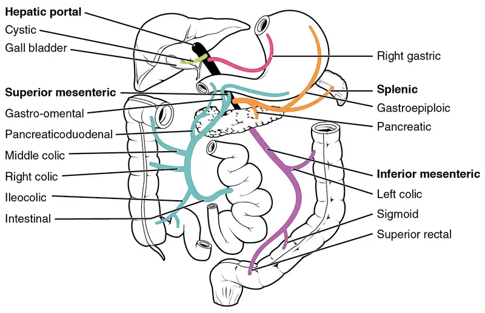
20.6 Development of Blood Vessels and Fetal Circulation¶
Learning Objectives
By the end of this section, you will be able to:
- Describe the development of blood vessels
- Describe the fetal circulation
In a developing embryo,the heart has developed enough by day 21 post-fertilization to begin beating. Circulation patterns are clearly established by the fourth week of embryonic life. It is critical to the survival of the developing human that the circulatory system forms early to supply the growing tissue with nutrients and gases, and to remove waste products. Blood cells and vessel production in structures outside the embryo proper called the yolk sac, chorion, and connecting stalk begin about 15 to 16 days following fertilization. Development of these circulatory elements within the embryo itself begins approximately 2 days later. You will learn more about the formation and function of these early structures when you study the chapter on development. During those first few weeks, blood vessels begin to form from the embryonic mesoderm. The precursor cells are known as hemangioblasts. These in turn differentiate into angioblasts, which give rise to the blood vessels and pluripotent stem cells, which differentiate into the formed elements of blood. (Seek additional content for more detail on fetal development and circulation.) Together, these cells form masses known as blood islands scattered throughout the embryonic disc. Spaces appear on the blood islands that develop into vessel lumens. The endothelial lining of the vessels arise from the angioblasts within these islands. Surrounding mesenchymal cells give rise to the smooth muscle and connective tissue layers of the vessels. While the vessels are developing, the pluripotent stem cells begin to form the blood.
Vascular tubes also develop on the blood islands, and they eventually connect to one another as well as to the developing, tubular heart. Thus, the developmental pattern, rather than beginning from the formation of one central vessel and spreading outward, occurs in many regions simultaneously with vessels later joining together. This angiogenesis—the creation of new blood vessels from existing ones—continues as needed throughout life as we grow and develop.
Blood vessel development often follows the same pattern as nerve development and travels to the same target tissues and organs. This occurs because the many factors directing growth of nerves also stimulate blood vessels to follow a similar pattern. Whether a given vessel develops into an artery or a vein is dependent upon local concentrations of signaling proteins.
As the embryo grows within the mother’s uterus, its requirements for nutrients and gas exchange also grow. The placenta—a circulatory organ unique to pregnancy—develops jointly from the embryo and uterine wall structures to fill this need. Emerging from the placenta is the umbilical vein, which carries oxygen-rich blood from the pregnant person to the fetal inferior vena cava via the ductus venosus to the heart that pumps it into fetal circulation. Two umbilical arteries carry oxygen-depleted fetal blood, including wastes and carbon dioxide, to the placenta. Remnants of the umbilical arteries remain in the adult. (Seek additional content for more information on the role of the placenta in fetal circulation.)
There are three major shunts—alternate paths for blood flow—found in the circulatory system of the fetus. Two of these shunts divert blood from the pulmonary to the systemic circuit, whereas the third connects the umbilical vein to the inferior vena cava. The first two shunts are critical during fetal life, when the lungs are compressed, filled with amniotic fluid, and nonfunctional, and gas exchange is provided by the placenta. These shunts close shortly after birth, however, when the newborn begins to breathe. The third shunt persists a bit longer but becomes nonfunctional once the umbilical cord is severed. The three shunts are as follows (Figure 20.44):
- The foramen ovale is an opening in the interatrial septum that allows blood to flow from the right atrium to the left atrium. A valve associated with this opening prevents backflow of blood during the fetal period. As the newborn begins to breathe and blood pressure in the atria increases, this shunt closes. The fossa ovalis remains in the interatrial septum after birth, marking the location of the former foramen ovale.
- The ductus arteriosus is a short, muscular vessel that connects the pulmonary trunk to the aorta. Most of the blood pumped from the right ventricle into the pulmonary trunk is thereby diverted into the aorta. Only enough blood reaches the fetal lungs to maintain the developing lung tissue. When the newborn takes the first breath, pressure within the lungs drops dramatically, and both the lungs and the pulmonary vessels expand. As the amount of oxygen increases, the smooth muscles in the wall of the ductus arteriosus constrict, sealing off the passage. Eventually, the muscular and endothelial components of the ductus arteriosus degenerate, leaving only the connective tissue component of the ligamentum arteriosum.
- The ductus venosus is a temporary blood vessel that branches from the umbilical vein, allowing much of the freshly oxygenated blood from the placenta—the organ of gas exchange between the pregnant person and fetus—to bypass the fetal liver and go directly to the fetal heart. The ductus venosus closes slowly during the first weeks of infancy and degenerates to become the ligamentum venosum.
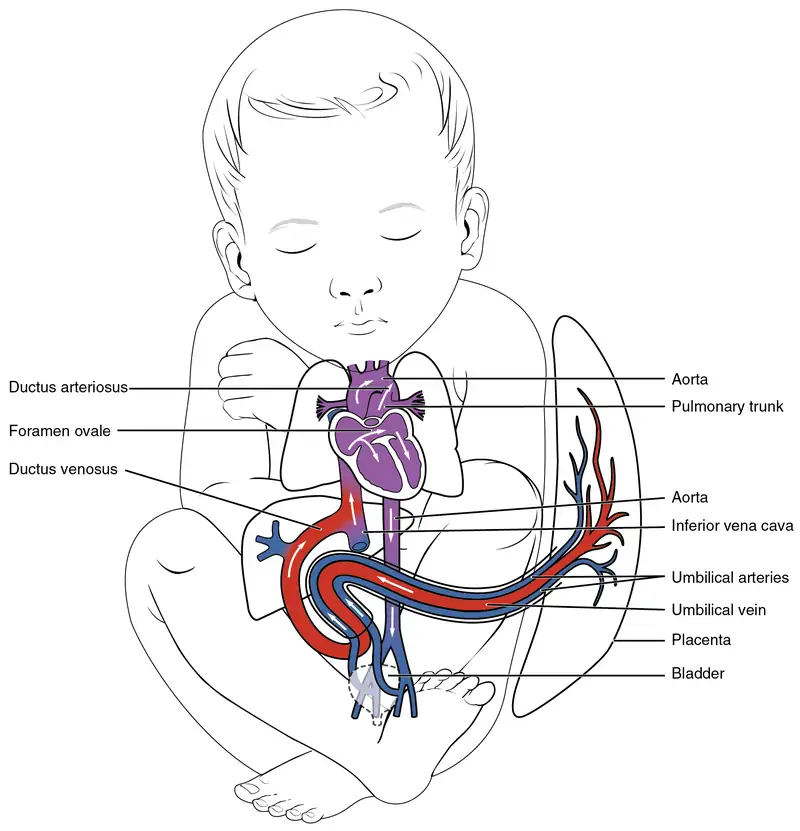
Chapter Review¶
Key Terms¶
- abdominal aorta
- portion of the aorta inferior to the aortic hiatus and superior to the common iliac arteries
- adrenal artery
- branch of the abdominal aorta; supplies blood to the adrenal (suprarenal) glands
- adrenal vein
- drains the adrenal or suprarenal glands that are immediately superior to the kidneys; the right adrenal vein enters the inferior vena cava directly and the left adrenal vein enters the left renal vein
- anaphylactic shock
- type of shock that follows a severe allergic reaction and results from massive vasodilation
- angioblasts
- stem cells that give rise to blood vessels
- angiogenesis
- development of new blood vessels from existing vessels
- anterior cerebral artery
- arises from the internal carotid artery; supplies the frontal lobe of the cerebrum
- anterior communicating artery
- anastomosis of the right and left internal carotid arteries; supplies blood to the brain
- anterior tibial artery
- branches from the popliteal artery; supplies blood to the anterior tibial region; becomes the dorsalis pedis artery
- anterior tibial vein
- forms from the dorsal venous arch; drains the area near the tibialis anterior muscle and leads to the popliteal vein
- aorta
- largest artery in the body, originating from the left ventricle and descending to the abdominal region where it bifurcates into the common iliac arteries at the level of the fourth lumbar vertebra; arteries originating from the aorta distribute blood to virtually all tissues of the body
- aortic arch
- arc that connects the ascending aorta to the descending aorta; ends at the intervertebral disk between the fourth and fifth thoracic vertebrae
- aortic hiatus
- opening in the diaphragm that allows passage of the thoracic aorta into the abdominal region where it becomes the abdominal aorta
- aortic sinuses
- small pockets in the ascending aorta near the aortic valve that are the locations of the baroreceptors (stretch receptors) and chemoreceptors that trigger a reflex that aids in the regulation of vascular homeostasis
- arterial circle
- (also, circle of Willis) anastomosis located at the base of the brain that ensures continual blood supply; formed from branches of the internal carotid and vertebral arteries; supplies blood to the brain
- arteriole
- (also, resistance vessel) very small artery that leads to a capillary
- arteriovenous anastomosis
- short vessel connecting an arteriole directly to a venule and bypassing the capillary beds
- artery
- blood vessel that conducts blood away from the heart; may be a conducting or distributing vessel
- ascending aorta
- initial portion of the aorta, rising from the left ventricle for a distance of approximately 5 cm
- atrial reflex
- mechanism for maintaining vascular homeostasis involving atrial baroreceptors: if blood is returning to the right atrium more rapidly than it is being ejected from the left ventricle, the atrial receptors will stimulate the cardiovascular centers to increase sympathetic firing and increase cardiac output until the situation is reversed; the opposite is also true
- axillary artery
- continuation of the subclavian artery as it penetrates the body wall and enters the axillary region; supplies blood to the region near the head of the humerus (humeral circumflex arteries); the majority of the vessel continues into the brachium and becomes the brachial artery
- axillary vein
- major vein in the axillary region; drains the upper limb and becomes the subclavian vein
- azygos vein
- originates in the lumbar region and passes through the diaphragm into the thoracic cavity on the right side of the vertebral column; drains blood from the intercostal veins, esophageal veins, bronchial veins, and other veins draining the mediastinal region; leads to the superior vena cava
- basilar artery
- formed from the fusion of the two vertebral arteries; sends branches to the cerebellum, brain stem, and the posterior cerebral arteries; the main blood supply to the brain stem
- basilic vein
- superficial vein of the arm that arises from the palmar venous arches, intersects with the median cubital vein, parallels the ulnar vein, and continues into the upper arm; along with the brachial vein, it leads to the axillary vein
- blood colloidal osmotic pressure (BCOP)
- pressure exerted by colloids suspended in blood within a vessel; a primary determinant is the presence of plasma proteins
- blood flow
- movement of blood through a vessel, tissue, or organ that is usually expressed in terms of volume per unit of time
- blood hydrostatic pressure
- force blood exerts against the walls of a blood vessel or heart chamber
- blood islands
- masses of developing blood vessels and formed elements from mesodermal cells scattered throughout the embryonic disc
- blood pressure
- force exerted by the blood against the wall of a vessel or heart chamber; can be described with the more generic term hydrostatic pressure
- brachial artery
- continuation of the axillary artery in the brachium; supplies blood to much of the brachial region; gives off several smaller branches that provide blood to the posterior surface of the arm in the region of the elbow; bifurcates into the radial and ulnar arteries at the coronoid fossa
- brachial vein
- deeper vein of the arm that forms from the radial and ulnar veins in the lower arm; leads to the axillary vein
- brachiocephalic artery
- single vessel located on the right side of the body; the first vessel branching from the aortic arch; gives rise to the right subclavian artery and the right common carotid artery; supplies blood to the head, neck, upper limb, and wall of the thoracic region
- brachiocephalic vein
- one of a pair of veins that form from a fusion of the external and internal jugular veins and the subclavian vein; subclavian, external and internal jugulars, vertebral, and internal thoracic veins lead to it; drains the upper thoracic region and flows into the superior vena cava
- bronchial artery
- systemic branch from the aorta that provides oxygenated blood to the lungs in addition to the pulmonary circuit
- bronchial vein
- drains the systemic circulation from the lungs and leads to the azygos vein
- capacitance
- ability of a vein to distend and store blood
- capacitance vessels
- veins
- capillary
- smallest of blood vessels where physical exchange occurs between the blood and tissue cells surrounded by interstitial fluid
- capillary bed
- network of 10–100 capillaries connecting arterioles to venules
- capillary hydrostatic pressure (CHP)
- force blood exerts against a capillary
- cardiogenic shock
- type of shock that results from the inability of the heart to maintain cardiac output
- carotid sinuses
- small pockets near the base of the internal carotid arteries that are the locations of the baroreceptors and chemoreceptors that trigger a reflex that aids in the regulation of vascular homeostasis
- cavernous sinus
- enlarged vein that receives blood from most of the other cerebral veins and the eye socket, and leads to the petrosal sinus
- celiac trunk
- (also, celiac artery) major branch of the abdominal aorta; gives rise to the left gastric artery, the splenic artery, and the common hepatic artery that forms the hepatic artery to the liver, the right gastric artery to the stomach, and the cystic artery to the gall bladder
- cephalic vein
- superficial vessel in the upper arm; leads to the axillary vein
- cerebrovascular accident (CVA)
- blockage of blood flow to the brain; also called a stroke
- circle of Willis
- (also, arterial circle) anastomosis located at the base of the brain that ensures continual blood supply; formed from branches of the internal carotid and vertebral arteries; supplies blood to the brain
- circulatory shock
- also simply called shock; a life-threatening medical condition in which the circulatory system is unable to supply enough blood flow to provide adequate oxygen and other nutrients to the tissues to maintain cellular metabolism
- common carotid artery
- right common carotid artery arises from the brachiocephalic artery, and the left common carotid arises from the aortic arch; gives rise to the external and internal carotid arteries; supplies the respective sides of the head and neck
- common hepatic artery
- branch of the celiac trunk that forms the hepatic artery, the right gastric artery, and the cystic artery
- common iliac artery
- branch of the aorta that leads to the internal and external iliac arteries
- common iliac vein
- one of a pair of veins that flows into the inferior vena cava at the level of L5; the left common iliac vein drains the sacral region; divides into external and internal iliac veins near the inferior portion of the sacroiliac joint
- compliance
- degree to which a blood vessel can stretch as opposed to being rigid
- continuous capillary
- most common type of capillary, found in virtually all tissues except epithelia and cartilage; contains very small gaps in the endothelial lining that permit exchange
- cystic artery
- branch of the common hepatic artery; supplies blood to the gall bladder
- deep femoral artery
- branch of the femoral artery; gives rise to the lateral circumflex arteries
- deep femoral vein
- drains blood from the deeper portions of the thigh and leads to the femoral vein
- descending aorta
- portion of the aorta that continues downward past the end of the aortic arch; subdivided into the thoracic aorta and the abdominal aorta
- diastolic pressure
- lower number recorded when measuring arterial blood pressure; represents the minimal value corresponding to the pressure that remains during ventricular relaxation
- digital arteries
- formed from the superficial and deep palmar arches; supply blood to the digits
- digital veins
- drain the digits and feed into the palmar arches of the hand and dorsal venous arch of the foot
- dorsal arch
- (also, arcuate arch) formed from the anastomosis of the dorsalis pedis artery and medial and plantar arteries; branches supply the distal portions of the foot and digits
- dorsal venous arch
- drains blood from digital veins and vessels on the superior surface of the foot
- dorsalis pedis artery
- forms from the anterior tibial artery; branches repeatedly to supply blood to the tarsal and dorsal regions of the foot
- ductus arteriosus
- shunt in the fetal pulmonary trunk that diverts oxygenated blood back to the aorta
- ductus venosus
- shunt that causes oxygenated blood to bypass the fetal liver on its way to the inferior vena cava
- elastic artery
- (also, conducting artery) artery with abundant elastic fibers located closer to the heart, which maintains the pressure gradient and conducts blood to smaller branches
- esophageal artery
- branch of the thoracic aorta; supplies blood to the esophagus
- esophageal vein
- drains the inferior portions of the esophagus and leads to the azygos vein
- external carotid artery
- arises from the common carotid artery; supplies blood to numerous structures within the face, lower jaw, neck, esophagus, and larynx
- external elastic membrane
- membrane composed of elastic fibers that separates the tunica media from the tunica externa; seen in larger arteries
- external iliac artery
- branch of the common iliac artery that leaves the body cavity and becomes a femoral artery; supplies blood to the lower limbs
- external iliac vein
- formed when the femoral vein passes into the body cavity; drains the legs and leads to the common iliac vein
- external jugular vein
- one of a pair of major veins located in the superficial neck region that drains blood from the more superficial portions of the head, scalp, and cranial regions, and leads to the subclavian vein
- femoral artery
- continuation of the external iliac artery after it passes through the body cavity; divides into several smaller branches, the lateral deep femoral artery, and the genicular artery; becomes the popliteal artery as it passes posterior to the knee
- femoral circumflex vein
- forms a loop around the femur just inferior to the trochanters; drains blood from the areas around the head and neck of the femur; leads to the femoral vein
- femoral vein
- drains the upper leg; receives blood from the great saphenous vein, the deep femoral vein, and the femoral circumflex vein; becomes the external iliac vein when it crosses the body wall
- fenestrated capillary
- type of capillary with pores or fenestrations in the endothelium that allow for rapid passage of certain small materials
- fibular vein
- drains the muscles and integument near the fibula and leads to the popliteal vein
- filtration
- in the cardiovascular system, the movement of material from a capillary into the interstitial fluid, moving from an area of higher pressure to lower pressure
- foramen ovale
- shunt that directly connects the right and left atria and helps to divert oxygenated blood from the fetal pulmonary circuit
- genicular artery
- branch of the femoral artery; supplies blood to the region of the knee
- gonadal artery
- branch of the abdominal aorta; supplies blood to the gonads or reproductive organs; also described as ovarian arteries or testicular arteries, depending upon the sex of the individual
- gonadal vein
- generic term for a vein draining a reproductive organ; may be either an ovarian vein or a testicular vein, depending on the sex of the individual
- great cerebral vein
- receives most of the smaller vessels from the inferior cerebral veins and leads to the straight sinus
- great saphenous vein
- prominent surface vessel located on the medial surface of the leg and thigh; drains the superficial portions of these areas and leads to the femoral vein
- hemangioblasts
- embryonic stem cells that appear in the mesoderm and give rise to both angioblasts and pluripotent stem cells
- hemiazygos vein
- smaller vein complementary to the azygos vein; drains the esophageal veins from the esophagus and the left intercostal veins, and leads to the brachiocephalic vein via the superior intercostal vein
- hepatic artery proper
- branch of the common hepatic artery; supplies systemic blood to the liver
- hepatic portal system
- specialized circulatory pathway that carries blood from digestive organs to the liver for processing before being sent to the systemic circulation
- hepatic vein
- drains systemic blood from the liver and flows into the inferior vena cava
- hypertension
- chronic and persistent blood pressure measurements of 140/90 mm Hg or above
- hypervolemia
- abnormally high levels of fluid and blood within the body
- hypovolemia
- abnormally low levels of fluid and blood within the body
- hypovolemic shock
- type of circulatory shock caused by excessive loss of blood volume due to hemorrhage or possibly dehydration
- hypoxia
- lack of oxygen supply to the tissues
- inferior mesenteric artery
- branch of the abdominal aorta; supplies blood to the distal segment of the large intestine and rectum
- inferior phrenic artery
- branch of the abdominal aorta; supplies blood to the inferior surface of the diaphragm
- inferior vena cava
- large systemic vein that drains blood from areas largely inferior to the diaphragm; empties into the right atrium
- intercostal artery
- branch of the thoracic aorta; supplies blood to the muscles of the thoracic cavity and vertebral column
- intercostal vein
- drains the muscles of the thoracic wall and leads to the azygos vein
- internal carotid artery
- arises from the common carotid artery and begins with the carotid sinus; goes through the carotid canal of the temporal bone to the base of the brain; combines with branches of the vertebral artery forming the arterial circle; supplies blood to the brain
- internal elastic membrane
- membrane composed of elastic fibers that separates the tunica intima from the tunica media; seen in larger arteries
- internal iliac artery
- branch from the common iliac arteries; supplies blood to the urinary bladder, walls of the pelvis, external genitalia, and the medial portion of the femoral region; in females, also provide blood to the uterus and vagina
- internal iliac vein
- drains the pelvic organs and integument; formed from several smaller veins in the region; leads to the common iliac vein
- internal jugular vein
- one of a pair of major veins located in the neck region that passes through the jugular foramen and canal, flows parallel to the common carotid artery that is more or less its counterpart; primarily drains blood from the brain, receives the superficial facial vein, and empties into the subclavian vein
- internal thoracic artery
- (also, mammary artery) arises from the subclavian artery; supplies blood to the thymus, pericardium of the heart, and the anterior chest wall
- internal thoracic vein
- (also, internal mammary vein) drains the anterior surface of the chest wall and leads to the brachiocephalic vein
- interstitial fluid colloidal osmotic pressure (IFCOP)
- pressure exerted by the colloids within the interstitial fluid
- interstitial fluid hydrostatic pressure (IFHP)
- force exerted by the fluid in the tissue spaces
- ischemia
- insufficient blood flow to the tissues
- Korotkoff sounds
- noises created by turbulent blood flow through the vessels
- lateral circumflex artery
- branch of the deep femoral artery; supplies blood to the deep muscles of the thigh and the ventral and lateral regions of the integument
- lateral plantar artery
- arises from the bifurcation of the posterior tibial arteries; supplies blood to the lateral plantar surfaces of the foot
- left gastric artery
- branch of the celiac trunk; supplies blood to the stomach
- lumbar arteries
- branches of the abdominal aorta; supply blood to the lumbar region, the abdominal wall, and spinal cord
- lumbar veins
- drain the lumbar portion of the abdominal wall and spinal cord; the superior lumbar veins drain into the azygos vein on the right or the hemiazygos vein on the left; blood from these vessels is returned to the superior vena cava rather than the inferior vena cava
- lumen
- interior of a tubular structure such as a blood vessel or a portion of the alimentary canal through which blood, chyme, or other substances travel
- maxillary vein
- drains blood from the maxillary region and leads to the external jugular vein
- mean arterial pressure (MAP)
- average driving force of blood to the tissues; approximated by taking diastolic pressure and adding 1/3 of pulse pressure
- medial plantar artery
- arises from the bifurcation of the posterior tibial arteries; supplies blood to the medial plantar surfaces of the foot
- median antebrachial vein
- vein that parallels the ulnar vein but is more medial in location; intertwines with the palmar venous arches
- median cubital vein
- superficial vessel located in the antecubital region that links the cephalic vein to the basilic vein in the form of a v; a frequent site for a blood draw
- median sacral artery
- continuation of the aorta into the sacrum
- mediastinal artery
- branch of the thoracic aorta; supplies blood to the mediastinum
- metarteriole
- short vessel arising from a terminal arteriole that branches to supply a capillary bed
- microcirculation
- blood flow through the capillaries
- middle cerebral artery
- another branch of the internal carotid artery; supplies blood to the temporal and parietal lobes of the cerebrum
- middle sacral vein
- drains the sacral region and leads to the left common iliac vein
- muscular artery
- (also, distributing artery) artery with abundant smooth muscle in the tunica media that branches to distribute blood to the arteriole network
- myogenic response
- constriction or dilation in the walls of arterioles in response to pressures related to blood flow; reduces high blood flow or increases low blood flow to help maintain consistent flow to the capillary network
- nervi vasorum
- small nerve fibers found in arteries and veins that trigger contraction of the smooth muscle in their walls
- net filtration pressure (NFP)
- force driving fluid out of the capillary and into the tissue spaces; equal to the difference of the capillary hydrostatic pressure and the blood colloidal osmotic pressure
- neurogenic shock
- type of shock that occurs with cranial or high spinal injuries that damage the cardiovascular centers in the medulla oblongata or the nervous fibers originating from this region
- obstructive shock
- type of shock that occurs when a significant portion of the vascular system is blocked
- occipital sinus
- enlarged vein that drains the occipital region near the falx cerebelli and flows into the left and right transverse sinuses, and also into the vertebral veins
- ophthalmic artery
- branch of the internal carotid artery; supplies blood to the eyes
- ovarian artery
- branch of the abdominal aorta; supplies blood to the ovary, uterine (Fallopian) tube, and uterus
- ovarian vein
- drains the ovary; the right ovarian vein leads to the inferior vena cava and the left ovarian vein leads to the left renal vein
- palmar arches
- superficial and deep arches formed from anastomoses of the radial and ulnar arteries; supply blood to the hand and digital arteries
- palmar venous arches
- drain the hand and digits, and feed into the radial and ulnar veins
- parietal branches
- (also, somatic branches) group of arterial branches of the thoracic aorta; includes those that supply blood to the thoracic cavity, vertebral column, and the superior surface of the diaphragm
- perfusion
- distribution of blood into the capillaries so the tissues can be supplied
- pericardial artery
- branch of the thoracic aorta; supplies blood to the pericardium
- petrosal sinus
- enlarged vein that receives blood from the cavernous sinus and flows into the internal jugular vein
- phrenic vein
- drains the diaphragm; the right phrenic vein flows into the inferior vena cava and the left phrenic vein leads to the left renal vein
- plantar arch
- formed from the anastomosis of the dorsalis pedis artery and medial and plantar arteries; branches supply the distal portions of the foot and digits
- plantar veins
- drain the foot and lead to the plantar venous arch
- plantar venous arch
- formed from the plantar veins; leads to the anterior and posterior tibial veins through anastomoses
- popliteal artery
- continuation of the femoral artery posterior to the knee; branches into the anterior and posterior tibial arteries
- popliteal vein
- continuation of the femoral vein behind the knee; drains the region behind the knee and forms from the fusion of the fibular and anterior and posterior tibial veins
- posterior cerebral artery
- branch of the basilar artery that forms a portion of the posterior segment of the arterial circle; supplies blood to the posterior portion of the cerebrum and brain stem
- posterior communicating artery
- branch of the posterior cerebral artery that forms part of the posterior portion of the arterial circle; supplies blood to the brain
- posterior tibial artery
- branch from the popliteal artery that gives rise to the fibular or peroneal artery; supplies blood to the posterior tibial region
- posterior tibial vein
- forms from the dorsal venous arch; drains the area near the posterior surface of the tibia and leads to the popliteal vein
- precapillary sphincters
- circular rings of smooth muscle that surround the entrance to a capillary and regulate blood flow into that capillary
- pulmonary artery
- one of two branches, left and right, that divides off from the pulmonary trunk and leads to smaller arterioles and eventually to the pulmonary capillaries
- pulmonary circuit
- system of blood vessels that provide gas exchange via a network of arteries, veins, and capillaries that run from the heart, through the body, and back to the lungs
- pulmonary trunk
- single large vessel exiting the right ventricle that divides to form the right and left pulmonary arteries
- pulmonary veins
- two sets of paired vessels, one pair on each side, that are formed from the small venules leading away from the pulmonary capillaries that flow into the left atrium
- pulse
- alternating expansion and recoil of an artery as blood moves through the vessel; an indicator of heart rate
- pulse pressure
- difference between the systolic and diastolic pressures
- radial artery
- formed at the bifurcation of the brachial artery; parallels the radius; gives off smaller branches until it reaches the carpal region where it fuses with the ulnar artery to form the superficial and deep palmar arches; supplies blood to the lower arm and carpal region
- radial vein
- parallels the radius and radial artery; arises from the palmar venous arches and leads to the brachial vein
- reabsorption
- in the cardiovascular system, the movement of material from the interstitial fluid into the capillaries
- renal artery
- branch of the abdominal aorta; supplies each kidney
- renal vein
- largest vein entering the inferior vena cava; drains the kidneys and leads to the inferior vena cava
- resistance
- any condition or parameter that slows or counteracts the flow of blood
- respiratory pump
- increase in the volume of the thorax during inhalation that decreases air pressure, enabling venous blood to flow into the thoracic region, then exhalation increases pressure, moving blood into the atria
- right gastric artery
- branch of the common hepatic artery; supplies blood to the stomach
- sepsis
- (also, septicemia) organismal-level inflammatory response to a massive infection
- septic shock
- (also, blood poisoning) type of shock that follows a massive infection resulting in organism-wide inflammation
- sigmoid sinuses
- enlarged veins that receive blood from the transverse sinuses; flow through the jugular foramen and into the internal jugular vein
- sinusoid capillary
- rarest type of capillary, which has extremely large intercellular gaps in the basement membrane in addition to clefts and fenestrations; found in areas such as the bone marrow and liver where passage of large molecules occurs
- skeletal muscle pump
- effect on increasing blood pressure within veins by compression of the vessel caused by the contraction of nearby skeletal muscle
- small saphenous vein
- located on the lateral surface of the leg; drains blood from the superficial regions of the lower leg and foot, and leads to the popliteal vein
- sphygmomanometer
- blood pressure cuff attached to a device that measures blood pressure
- splenic artery
- branch of the celiac trunk; supplies blood to the spleen
- straight sinus
- enlarged vein that drains blood from the brain; receives most of the blood from the great cerebral vein and flows into the left or right transverse sinus
- subclavian artery
- right subclavian arises from the brachiocephalic artery, whereas the left subclavian artery arises from the aortic arch; gives rise to the internal thoracic, vertebral, and thyrocervical arteries; supplies blood to the arms, chest, shoulders, back, and central nervous system
- subclavian vein
- located deep in the thoracic cavity; becomes the axillary vein as it enters the axillary region; drains the axillary and smaller local veins near the scapular region; leads to the brachiocephalic vein
- subscapular vein
- drains blood from the subscapular region and leads to the axillary vein
- superior mesenteric artery
- branch of the abdominal aorta; supplies blood to the small intestine (duodenum, jejunum, and ileum), the pancreas, and a majority of the large intestine
- superior phrenic artery
- branch of the thoracic aorta; supplies blood to the superior surface of the diaphragm
- superior sagittal sinus
- enlarged vein located midsagittally between the meningeal and periosteal layers of the dura mater within the falx cerebri; receives most of the blood drained from the superior surface of the cerebrum and leads to the inferior jugular vein and the vertebral vein
- superior vena cava
- large systemic vein; drains blood from most areas superior to the diaphragm; empties into the right atrium
- systolic pressure
- larger number recorded when measuring arterial blood pressure; represents the maximum value following ventricular contraction
- temporal vein
- drains blood from the temporal region and leads to the external jugular vein
- testicular artery
- branch of the abdominal aorta; will ultimately travel outside the body cavity to the testes and form one component of the spermatic cord
- testicular vein
- drains the testes and forms part of the spermatic cord; the right testicular vein empties directly into the inferior vena cava and the left testicular vein empties into the left renal vein
- thoracic aorta
- portion of the descending aorta superior to the aortic hiatus
- thoroughfare channel
- continuation of the metarteriole that enables blood to bypass a capillary bed and flow directly into a venule, creating a vascular shunt
- thyrocervical artery
- arises from the subclavian artery; supplies blood to the thyroid, the cervical region, the upper back, and shoulder
- transient ischemic attack (TIA)
- temporary loss of neurological function caused by a brief interruption in blood flow; also known as a mini-stroke
- transverse sinuses
- pair of enlarged veins near the lambdoid suture that drain the occipital, sagittal, and straight sinuses, and leads to the sigmoid sinuses
- trunk
- large vessel that gives rise to smaller vessels
- tunica externa
- (also, tunica adventitia) outermost layer or tunic of a vessel (except capillaries)
- tunica intima
- (also, tunica interna) innermost lining or tunic of a vessel
- tunica media
- middle layer or tunic of a vessel (except capillaries)
- ulnar artery
- formed at the bifurcation of the brachial artery; parallels the ulna; gives off smaller branches until it reaches the carpal region where it fuses with the radial artery to form the superficial and deep palmar arches; supplies blood to the lower arm and carpal region
- ulnar vein
- parallels the ulna and ulnar artery; arises from the palmar venous arches and leads to the brachial vein
- umbilical arteries
- pair of vessels that runs within the umbilical cord and carries fetal blood low in oxygen and high in waste to the placenta for exchange with maternal blood
- umbilical vein
- single vessel that originates in the placenta and runs within the umbilical cord, carrying oxygen- and nutrient-rich blood to the fetal heart
- vasa vasorum
- small blood vessels located within the walls or tunics of larger vessels that supply nourishment to and remove wastes from the cells of the vessels
- vascular shock
- type of shock that occurs when arterioles lose their normal muscular tone and dilate dramatically
- vascular shunt
- continuation of the metarteriole and thoroughfare channel that allows blood to bypass the capillary beds to flow directly from the arterial to the venous circulation
- vascular tone
- contractile state of smooth muscle in a blood vessel
- vascular tubes
- rudimentary blood vessels in a developing fetus
- vasoconstriction
- constriction of the smooth muscle of a blood vessel, resulting in a decreased vascular diameter
- vasodilation
- relaxation of the smooth muscle in the wall of a blood vessel, resulting in an increased vascular diameter
- vasomotion
- irregular, pulsating flow of blood through capillaries and related structures
- vein
- blood vessel that conducts blood toward the heart
- venous reserve
- volume of blood contained within systemic veins in the integument, bone marrow, and liver that can be returned to the heart for circulation, if needed
- venule
- small vessel leading from the capillaries to veins
- vertebral artery
- arises from the subclavian artery and passes through the vertebral foramen through the foramen magnum to the brain; joins with the internal carotid artery to form the arterial circle; supplies blood to the brain and spinal cord
- vertebral vein
- arises from the base of the brain and the cervical region of the spinal cord; passes through the intervertebral foramina in the cervical vertebrae; drains smaller veins from the cranium, spinal cord, and vertebrae, and leads to the brachiocephalic vein; counterpart of the vertebral artery
- visceral branches
- branches of the descending aorta that supply blood to the viscera
Chapter Review¶
20.1 Structure and Function of Blood Vessels¶
Blood pumped by the heart flows through a series of vessels known as arteries, arterioles, capillaries, venules, and veins before returning to the heart. Arteries transport blood away from the heart and branch into smaller vessels, forming arterioles. Arterioles distribute blood to capillary beds, the sites of exchange with the body tissues. Capillaries lead back to small vessels known as venules that flow into the larger veins and eventually back to the heart.
The arterial system is a relatively high-pressure system, so arteries have thick walls that appear round in cross section. The venous system is a lower-pressure system, containing veins that have larger lumens and thinner walls. They often appear flattened. Arteries, arterioles, venules, and veins are composed of three tunics known as the tunica intima, tunica media, and tunica externa. Capillaries have only a tunica intima layer. The tunica intima is a thin layer composed of a simple squamous epithelium known as endothelium and a small amount of connective tissue. The tunica media is a thicker area composed of variable amounts of smooth muscle and connective tissue. It is the thickest layer in all but the largest arteries. The tunica externa is primarily a layer of connective tissue, although in veins, it also contains some smooth muscle. Blood flow through vessels can be dramatically influenced by vasoconstriction and vasodilation in their walls.
20.2 Blood Flow, Blood Pressure, and Resistance¶
Blood flow is the movement of blood through a vessel, tissue, or organ. The slowing or blocking of blood flow is called resistance. Blood pressure is the force that blood exerts upon the walls of the blood vessels or chambers of the heart. The components of blood pressure include systolic pressure, which results from ventricular contraction, and diastolic pressure, which results from ventricular relaxation. Pulse pressure is the difference between systolic and diastolic measures, and mean arterial pressure is the “average” pressure of blood in the arterial system, driving blood into the tissues. Pulse, the expansion and recoiling of an artery, reflects the heartbeat. The variables affecting blood flow and blood pressure in the systemic circulation are cardiac output, compliance, blood volume, blood viscosity, and the length and diameter of the blood vessels. In the arterial system, vasodilation and vasoconstriction of the arterioles is a significant factor in systemic blood pressure: Slight vasodilation greatly decreases resistance and increases flow, whereas slight vasoconstriction greatly increases resistance and decreases flow. In the arterial system, as resistance increases, blood pressure increases and flow decreases. In the venous system, constriction increases blood pressure as it does in arteries; the increasing pressure helps to return blood to the heart. In addition, constriction causes the vessel lumen to become more rounded, decreasing resistance and increasing blood flow. Venoconstriction, while less important than arterial vasoconstriction, works with the skeletal muscle pump, the respiratory pump, and their valves to promote venous return to the heart.
20.3 Capillary Exchange¶
Small molecules can cross into and out of capillaries via simple or facilitated diffusion. Some large molecules can cross in vesicles or through clefts, fenestrations, or gaps between cells in capillary walls. However, the bulk flow of capillary and tissue fluid occurs via filtration and reabsorption. Filtration, the movement of fluid out of the capillaries, is driven by the CHP. Reabsorption, the influx of tissue fluid into the capillaries, is driven by the BCOP. Filtration predominates in the arterial end of the capillary; in the middle section, the opposing pressures are virtually identical so there is no net exchange, whereas reabsorption predominates at the venule end of the capillary. The hydrostatic and colloid osmotic pressures in the interstitial fluid are negligible in healthy circumstances.
20.4 Homeostatic Regulation of the Vascular System¶
Neural, endocrine, and autoregulatory mechanisms affect blood flow, blood pressure, and eventually perfusion of blood to body tissues. Neural mechanisms include the cardiovascular centers in the medulla oblongata, baroreceptors in the aorta and carotid arteries and right atrium, and associated chemoreceptors that monitor blood levels of oxygen, carbon dioxide, and hydrogen ions. Endocrine controls include epinephrine and norepinephrine, as well as ADH, the renin-angiotensin-aldosterone mechanism, ANH, and EPO. Autoregulation is the local control of vasodilation and constriction by chemical signals and the myogenic response. Exercise greatly improves cardiovascular function and reduces the risk of cardiovascular diseases, including hypertension, a leading cause of heart attacks and strokes. Significant hemorrhage can lead to a form of circulatory shock known as hypovolemic shock. Sepsis, obstruction, and widespread inflammation can also cause circulatory shock.
20.5 Circulatory Pathways¶
The right ventricle pumps oxygen-depleted blood into the pulmonary trunk and right and left pulmonary arteries, which carry it to the right and left lungs for gas exchange. Oxygen-rich blood is transported by pulmonary veins to the left atrium. The left ventricle pumps this blood into the aorta. The main regions of the aorta are the ascending aorta, aortic arch, and descending aorta, which is further divided into the thoracic and abdominal aorta. The coronary arteries branch from the ascending aorta. After oxygenating tissues in the capillaries, systemic blood is returned to the right atrium from the venous system via the superior vena cava, which drains most of the veins superior to the diaphragm, the inferior vena cava, which drains most of the veins inferior to the diaphragm, and the coronary veins via the coronary sinus. The hepatic portal system carries blood to the liver for processing before it enters circulation. Review the figures provided in this section for circulation of blood through the blood vessels.
20.6 Development of Blood Vessels and Fetal Circulation¶
Blood vessels begin to form from the embryonic mesoderm. The precursor hemangioblasts differentiate into angioblasts, which give rise to the blood vessels and pluripotent stem cells that differentiate into the formed elements of the blood. Together, these cells form blood islands scattered throughout the embryo. Extensions known as vascular tubes eventually connect the vascular network. As the embryo grows within the mother’s womb, the placenta develops to supply blood rich in oxygen and nutrients via the umbilical vein and to remove wastes in oxygen-depleted blood via the umbilical arteries. Three major shunts found in the fetus are the foramen ovale and ductus arteriosus, which divert blood from the pulmonary to the systemic circuit, and the ductus venosus, which carries freshly oxygenated blood high in nutrients to the fetal heart.
Review Questions¶
20.1 Structure and Function of Blood Vessels¶
1. The endothelium is found in the ________.
- tunica intima
- tunica media
- tunica externa
- lumen
Answer
A
2. Nervi vasorum control ________.
- vasoconstriction
- vasodilation
- capillary permeability
- both vasoconstriction and vasodilation
Answer
D
3. Closer to the heart, arteries would be expected to have a higher percentage of ________.
- endothelium
- smooth muscle fibers
- elastic fibers
- collagenous fibers
Answer
C
4. Which of the following best describes veins?
- thick walled, small lumens, low pressure, lack valves
- thin walled, large lumens, low pressure, have valves
- thin walled, small lumens, high pressure, have valves
- thick walled, large lumens, high pressure, lack valves
Answer
B
5. An especially leaky type of capillary found in the liver and certain other tissues is called a ________.
- capillary bed
- fenestrated capillary
- sinusoid capillary
- metarteriole
Answer
C
20.2 Blood Flow, Blood Pressure, and Resistance¶
6. In a blood pressure measurement of 110/70, the number 70 is the ________.
- systolic pressure
- diastolic pressure
- pulse pressure
- mean arterial pressure
Answer
B
7. A healthy elastic artery ________.
- is compliant
- reduces blood flow
- is a resistance artery
- has a thin wall and irregular lumen
Answer
A
8. Which of the following statements is true?
- The longer the vessel, the lower the resistance and the greater the flow.
- As blood volume decreases, blood pressure and blood flow also decrease.
- Increased viscosity increases blood flow.
- All of the above are true.
Answer
B
9. Slight vasodilation in an arteriole prompts a ________.
- slight increase in resistance
- huge increase in resistance
- slight decrease in resistance
- huge decrease in resistance
Answer
D
10. Venoconstriction increases which of the following?
- blood pressure within the vein
- blood flow within the vein
- return of blood to the heart
- all of the above
Answer
D
20.3 Capillary Exchange¶
11. Hydrostatic pressure is ________.
- greater than colloid osmotic pressure at the venous end of the capillary bed
- the pressure exerted by fluid in an enclosed space
- about zero at the midpoint of a capillary bed
- all of the above
Answer
B
12. Net filtration pressure is calculated by ________.
- adding the capillary hydrostatic pressure to the interstitial fluid hydrostatic pressure
- subtracting the fluid drained by the lymphatic vessels from the total fluid in the interstitial fluid
- adding the blood colloid osmotic pressure to the capillary hydrostatic pressure
- subtracting the blood colloid osmotic pressure from the capillary hydrostatic pressure
Answer
D
13. Which of the following statements is true?
- In one day, more fluid exits the capillary through filtration than enters through reabsorption.
- In one day, approximately 35 mm of blood are filtered and 7 mm are reabsorbed.
- In one day, the capillaries of the lymphatic system absorb about 20.4 liters of fluid.
- None of the above are true.
Answer
A
20.4 Homeostatic Regulation of the Vascular System¶
14. Clusters of neurons in the medulla oblongata that regulate blood pressure are known collectively as ________.
- baroreceptors
- angioreceptors
- the cardiomotor mechanism
- the cardiovascular center
Answer
D
15. In the renin-angiotensin-aldosterone mechanism, ________.
- decreased blood pressure prompts the release of renin from the liver
- aldosterone prompts increased urine output
- aldosterone prompts the kidneys to reabsorb sodium
- all of the above
Answer
C
16. In the myogenic response, ________.
- muscle contraction promotes venous return to the heart
- ventricular contraction strength is decreased
- vascular smooth muscle responds to stretch
- endothelins dilate muscular arteries
Answer
C
17. A form of circulatory shock common in young children with severe diarrhea or vomiting is ________.
- hypovolemic shock
- anaphylactic shock
- obstructive shock
- hemorrhagic shock
Answer
A
20.5 Circulatory Pathways¶
18. The coronary arteries branch off of the ________.
- aortic valve
- ascending aorta
- aortic arch
- thoracic aorta
Answer
B
19. Which of the following statements is true?
- The left and right common carotid arteries both branch off of the brachiocephalic trunk.
- The brachial artery is the distal branch of the axillary artery.
- The radial and ulnar arteries join to form the palmar arch.
- All of the above are true.
Answer
C
20. Arteries serving the stomach, pancreas, and liver all branch from the ________.
- superior mesenteric artery
- inferior mesenteric artery
- celiac trunk
- splenic artery
Answer
C
21. The right and left brachiocephalic veins ________.
- drain blood from the right and left internal jugular veins
- drain blood from the right and left subclavian veins
- drain into the superior vena cava
- all of the above are true
Answer
D
22. The hepatic portal system delivers blood from the digestive organs to the ________.
- liver
- hypothalamus
- spleen
- left atrium
Answer
A
20.6 Development of Blood Vessels and Fetal Circulation¶
23. Blood islands are ________.
- clusters of blood-filtering cells in the placenta
- masses of pluripotent stem cells scattered throughout the fetal bone marrow
- vascular tubes that give rise to the embryonic tubular heart
- masses of developing blood vessels and formed elements scattered throughout the embryonic disc
Answer
D
24. Which of the following statements is true?
- Two umbilical veins carry oxygen-depleted blood from the fetal circulation to the placenta.
- One umbilical vein carries oxygen-rich blood from the placenta to the fetal heart.
- Two umbilical arteries carry oxygen-depleted blood to the fetal lungs.
- None of the above are true.
Answer
B
25. The ductus venosus is a shunt that allows ________.
- fetal blood to flow from the right atrium to the left atrium
- fetal blood to flow from the right ventricle to the left ventricle
- most freshly oxygenated blood to flow into the fetal heart
- most oxygen-depleted fetal blood to flow directly into the fetal pulmonary trunk
Answer
C
Critical Thinking Questions¶
20.1 Structure and Function of Blood Vessels¶
26. Arterioles are often referred to as resistance vessels. Why?
Answer
Arterioles receive blood from arteries, which are vessels with a much larger lumen. As their own lumen averages just 30 micrometers or less, arterioles are critical in slowing down—or resisting—blood flow. The arterioles can also constrict or dilate, which varies their resistance, to help distribute blood flow to the tissues.
27. Cocaine use causes vasoconstriction. Is this likely to increase or decrease blood pressure, and why?
Answer
Vasoconstriction causes the lumens of blood vessels to narrow. This increases the pressure of the blood flowing within the vessel.
28. A blood vessel with a few smooth muscle fibers and connective tissue, and only a very thin tunica externa conducts blood toward the heart. What type of vessel is this?
Answer
This is a venule.
20.2 Blood Flow, Blood Pressure, and Resistance¶
29. You measure a patient’s blood pressure at 130/85. Calculate the patient’s pulse pressure and mean arterial pressure. Determine whether each pressure is low, normal, or high.
Answer
The patient’s pulse pressure is 130 – 85 = 45 mm Hg. Generally, a pulse pressure should be at least 25 percent of the systolic pressure, but not more than 100 mm Hg. Since 25 percent of 130 = 32.5, the patient’s pulse pressure of 45 is normal. The patient’s mean arterial pressure is 85 + 1/3 (45) = 85 + 15 = 100. Normally, the mean arterial blood pressure falls within the range of 70 – 110 mmHg, so 100 is normal.
30. An obese patient comes to the clinic complaining of swollen feet and ankles, fatigue, shortness of breath, and often feeling “spaced out.” She is a cashier in a grocery store, a job that requires her to stand all day. Outside of work, she engages in no physical activity. She confesses that, because of her weight, she finds even walking uncomfortable. Explain how the skeletal muscle pump might play a role in this patient’s signs and symptoms.
Answer
People who stand upright all day and are inactive overall have very little skeletal muscle activity in the legs. Pooling of blood in the legs and feet is common. Venous return to the heart is reduced, a condition that in turn reduces cardiac output and therefore oxygenation of tissues throughout the body. This could at least partially account for the patient’s fatigue and shortness of breath, as well as her “spaced out” feeling, which commonly reflects reduced oxygen to the brain.
20.3 Capillary Exchange¶
31. A patient arrives at the emergency department with dangerously low blood pressure. The patient’s blood colloid osmotic pressure is normal. How would you expect this situation to affect the patient’s net filtration pressure?
Answer
The patient’s blood would flow more sluggishly from the arteriole into the capillary bed. Thus, the patient’s capillary hydrostatic pressure would be below the normal 35 mm Hg at the arterial end. At the same time, the patient’s blood colloidal osmotic pressure is normal—about 25 mm Hg. Thus, even at the arterial end of the capillary bed, the net filtration pressure would be below 10 mm Hg, and an abnormally reduced level of filtration would occur. In fact, reabsorption might begin to occur by the midpoint of the capillary bed.
32. True or false? The plasma proteins suspended in blood cross the capillary cell membrane and enter the tissue fluid via facilitated diffusion. Explain your thinking.
Answer
False. The plasma proteins suspended in blood cannot cross the semipermeable capillary cell membrane, and so they remain in the plasma within the vessel, where they account for the blood colloid osmotic pressure.
20.4 Homeostatic Regulation of the Vascular System¶
33. A patient arrives in the emergency department with a blood pressure of 70/45 confused and complaining of thirst. Why?
Answer
This blood pressure is insufficient to circulate blood throughout the patient’s body and maintain adequate perfusion of the patient’s tissues. Ischemia would prompt hypoxia, including to the brain, prompting confusion. The low blood pressure would also trigger the renin-angiotensin-aldosterone mechanism, and release of aldosterone would stimulate the thirst mechanism in the hypothalamus.
34. Nitric oxide is broken down very quickly after its release. Why?
Answer
Nitric oxide is a very powerful local vasodilator that is important in the autoregulation of tissue perfusion. If it were not broken down very quickly after its release, blood flow to the region could exceed metabolic needs.
20.5 Circulatory Pathways¶
35. Identify the ventricle of the heart that pumps oxygen-depleted blood and the arteries of the body that carry oxygen-depleted blood.
Answer
The right ventricle of the heart pumps oxygen-depleted blood to the pulmonary arteries.
36. What organs do the gonadal veins drain?
Answer
The gonadal veins drain the testes in males and the ovaries in females.
37. What arteries play the leading roles in supplying blood to the brain?
Answer
The internal carotid arteries and the vertebral arteries provide most of the brain’s blood supply.
20.6 Development of Blood Vessels and Fetal Circulation¶
38. All tissues, including malignant tumors, need a blood supply. Explain why drugs called angiogenesis inhibitors would be used in cancer treatment.
Answer
Angiogenesis inhibitors are drugs that inhibit the growth of new blood vessels. They can impede the growth of tumors by limiting their blood supply and therefore their access to gas and nutrient exchange.
39. Explain the location and importance of the ductus arteriosus in fetal circulation.
Answer
The ductus arteriosus is a blood vessel that provides a passageway between the pulmonary trunk and the aorta during fetal life. Most blood ejected from the fetus’ right ventricle and entering the pulmonary trunk is diverted through this structure into the fetal aorta, thus bypassing the fetal lungs.
Interactive Link Questions¶
20.3 Capillary Exchange¶
40. Watch this video to explore capillaries and how they function in the body. Capillaries are never more than 100 micrometers away. What is the main component of interstitial fluid?
Answer
Water.
20.4 Homeostatic Regulation of the Vascular System¶
41. Listen to this podcast to learn about hypertension, often described as a “silent killer.” What steps can you take to reduce your risk of a heart attack or stroke?
Answer
Take medications as prescribed, eat a healthy diet, exercise, and don’t smoke.
References¶
References
Centers for Disease Control and Prevention (US). Getting blood pressure under control: high blood pressure is out of control for too many Americans [Internet]. Atlanta (GA); [cited 2013 Apr 26]. Available from: https://www.cdc.gov/bloodpressure/facts.htm
Adapted from Anatomy and Physiology 2e by OpenStax, licensed under CC BY 4.0. Access the original for free at openstax.org. Changes: converted to the web reading format of The Open Book Project.